Listen to this story.Enjoy more audio and podcasts on iOS or Android.
Israeli troops enteredGaza’s biggest hospital. Israel and America say that Hamas militants operate from tunnels underneath the buildings. So far small caches of arms have been found. Israel now has effective control in northern Gaza. In the south a humanitarian crisis is escalating. Meanwhile Israel lowered the death toll of the number of people murdered by Hamas on October 7th from 1,400 to 1,200. The authorities are still identifying the remains of the deceased.
America carried out fresh air strikes on facilities in eastern Syria that it says are being used by militias aligned with Iran to carry out drone attacks on American forces. American and coalition troops have been attacked at least 40 times in Syria and Iraq since early October, though there have been no casualties.
Josep Borrell, the European Union’s chief diplomat, warned of “another genocide” in Sudan’s Darfur region after the paramilitary Rapid Support Forces and Arab militias murdered between 800 and 1,300 black Africans there.
A former doctor from Rwanda went on trial for his role in the genocide against Tutsis in 1994, 28 years after complaints were first laid against him in France in 1995. Sosthene Munyemana denies wrongdoing.
More than 100,000 people marched in Paris against antisemitism. The demonstration brought together leaders from across the political spectrum, except the hard left, which boycotted the event. Similar marches took place in other French cities. In Washington 290,000 people took part in a March for Israel, according to the organisers, the largest pro-Israeli demonstration ever in America.
He’s baaaack
Rishi Sunak, Britain’s prime minister, shocked pundits by bringing David Cameron back into government, appointing him foreign secretary and giving him a peerage. Lord Cameron led the country from 2010 to 2016, resigning after losing the fateful Brexit referendum. Because he sits in the House of Lords he cannot answer questions from MPs in the House of Commons. Some of those MPs have raised concerns about Lord Cameron’s past cosiness with China.
As Lord Cameron was appointed foreign secretary, his predecessor, James Cleverly, was moved to the home office to replace Suella Braverman, who was sacked. Ms Braverman had become a thorn in Mr Sunak’s side, most recently for her outspoken opposition to what she describes as “hate marches” in London in support of Palestine.
MPs in Parliament easily defeated a motion calling for a ceasefire in Gaza. However, 56 opposition Labour MPs defied the instructions of their leader, Sir Keir Starmer, and voted for the amendment. Eight shadow ministers in the party quit their positions rather than be sacked by Sir Keir for rebelling.
Britain’s Supreme Court ruled against the government’s policy of sending asylum-seekersto Rwanda to be processed and settled there. The court decided there was a significant risk that they might be returned to unsafe countries. Mr Sunak said he would forge a treaty with Rwanda and introduce emergency legislation to bring the plan to fruition.
The German government’s plan for spending on climate-change policy was in disarray, after the Constitutional Court ruled that shifting €60bn ($65bn) into an off-budget fund earmarked for the policies was unlawful.
Huge protests, sometimes violent, took place across Spain against a plan by Pedro Sánchez, the prime minister, to offer an amnesty to separatists in Catalonia who organised an illegal referendum on independence in 2017. Mr Sánchez has forged a left-wing coalition to stay in power after an inconclusive election in July in which his Socialist party came second to the conservative People’s Party. The PP failed to form its own coalition, but wanted a new election, rather than “a dictatorship through the back door”.
Germany’s defence minister, Boris Pistorius, admitted that the EU’s goal of providing Ukraine with 1m artillery shells by March next year will not be met. The commitment has been bogged down by bureaucracy and delays as EU countries pool their ammunition, rather than pledge the shells individually. Russia has sometimes fired up to 30,000 shells a day in the war; Ukraine launches about a quarter of that number.
Finland’s prime minister accused Russia of channelling migrants over their border. Petteri Orpo said the migrants were being “escorted or transported” to the border, and that Finland would protect its territorial security.
Iceland declared a state of emergency in anticipation of a volcanic eruption, which has been preceded by a series of earthquakes. The town of Grindavik, which lies 53km (33 miles) from Reykjavik, the capital, has been evacuated.
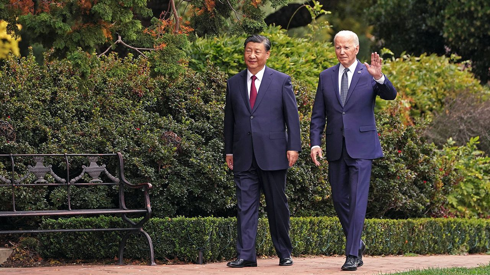image: Reuters
Joe Biden and Xi Jinping spoke for four hours at a retreat near San Francisco, only their second face-to-face meeting as leaders of America and China. They agreed to restore direct contacts between their armed forces. China also promised to help curb the flow of precursor chemicals to make fentanyl, a synthetic opioid that has killed tens of thousands of Americans.
Taiwan’s two main opposition parties, the Nationalist Party (KMT) and Taiwan People’s Party, agreed to field a single candidate in January’s presidential election. Both parties favour closer relations with China than the ruling Democratic Progressive Party. The DPP’s candidate, William Lai, the current vice-president, is leading the polls.
Pakistan opened three new border crossings with Afghanistan to expedite the expulsion of Afghans living in the country illegally. Pakistan blames Afghan migrants for a spate of terrorist attacks. More than 280,000 have left Pakistan since the order was announced in early October.
The buck stops here
Sri Lanka’s Supreme Court ruled that the country’s recent economic collapse was the fault of Gotabaya Rajapaksa, who was president from 2019 to 2022, his brother Mahinda, who was prime minister, and several former senior officials. The court held that they had violated the constitution with their “complete undermining of the rule of law”, a decision that could leave them open to lawsuits.
America’s House of Representatives passed a bill that again postpones a government shutdown, but only until early next year. The bill was supported by 209 Democrats and 127 Republicans; 93 Republicans opposed it. It was the first big test for the new speaker, Mike Johnson. His predecessor, Kevin McCarthy, was booted out of office amid bickering among Republicans about a similar bill.
Joe Manchin announced that he won’t seek another term in the Senate, putting the slim Democratic majority at risk in next year’s election. Mr Manchin has represented West Virginia, an increasingly Republican state, for the Democrats since 2010, though he often scuttled Democratic bills by withholding his vote.
Responding to allegations that two of its justices had not declared gifts they received, America’s Supreme Court issued its first-ever official code of ethics, sort of, to clear up any “misunderstanding” about the rules. The document is largely “a codification of principles” that the court has long lived by, but said nothing about how the rules would be enforced.
Listen to this story.Enjoy more audio and podcasts on iOS or Android.
Japan’s economy shrank by 2.1% on an annualised basis in the third quarter, or by 0.5% on the previous quarter, amid weak household consumption and business spending. The contraction suggests that inflation, running at an annual rate of 3%, which is high by Japanese standards, is starting to cut into domestic demand. That complicates the central bank’s path to ending its massive monetary stimulus programme and policy of negative interest rates, which markets expect it to start undoing in the coming months.
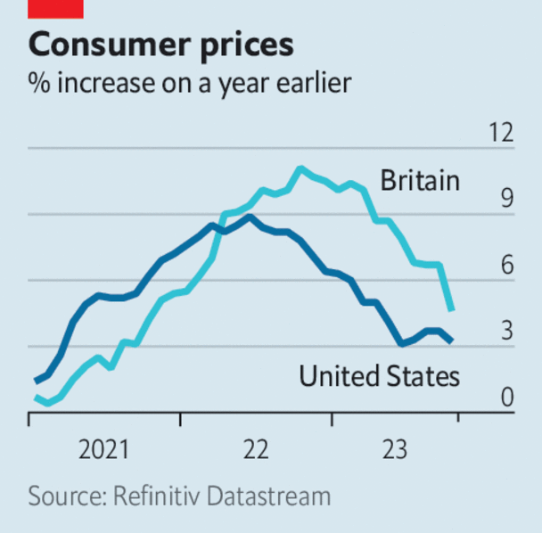image: The Economist
Markets were cheered by news that America’s annual inflation rate dipped to 3.2% in October, the first decline in four months. Core inflation, which excludes energy and food prices, also slowed, to 4%. In Britain annual inflation plunged from 6.7% in September to 4.6% in October, the lowest rate in two years. After a dismal few months, America’s main stockmarkets have roared back in November, as investors bet that lower inflation makes it more likely that central banks have finished raising interest rates.
Nvidia unveiled its latest superchip for generative artificial intelligence, the H200. Delivering 141 gigabytes of memory at 4.8 terabytes per second, it has nearly double the capacity of its predecessor chip. The company expects revenue this quarter to increase by 170%, year on year. Its share price is up by 240% since the start of January.
Novo Nordisk’s stock surged after the company released the full results from a study showing that its weight-loss drug, Wegovy, reduces the risk of having a heart attack, stroke or dying by 20% in patients at risk of cardiovascular disease.
The mining industry saw its biggest deal in years, when a consortium led by Glencore agreed to pay $9bn for the steelmaking coal business of Teck Resources. The Swiss commodities company is taking a 77% stake, with Nippon Steel of Japan and POSCO of South Korea owning the rest. Glencore will eventually merge its existing coal business with its new assets and spin off the new entity on the stockmarket. Prices for the coking coal used in steelmaking have risen sharply this year.
Salad days
A private-equity group took a controlling stake in Joe & the Juice, a fast-growing purveyor of sandwiches, organic juices and health shakes to the hipster crowd. The firm started in Denmark in 2002 and now has 360 stores around the world in the usual hipster hotspots, such as London, New York, San Francisco and Stockholm.
Foxconn warned that its revenues will fall slightly in 2023, even though it managed to post a surprise 11% rise in net profit in the latest quarter, year on year. The electronics contract manufacturer gets a big chunk of its income from Apple and sales of the new iPhone 15 have been lower than expected, especially in China.
The ratification of a pay deal between the United Auto Workers and Detroit’s carmakers hit a small bump in the road when workers at several General Motors’ factories rejected the new contract, though a majority at its biggest plant accepted it. Meanwhile Stellantis, Chrysler’s parent company, offered voluntary redundancies to half its non-unionised employees in America, because of “challenging market conditions”.
Continental said it would cut jobs as part of its cost-cutting drive. The German car-parts supplier, one of the world’s biggest, expects the number of job losses “to be in the mid-four-digit range”. Four years ago the company warned that tens of thousands of positions would be affected by the transition to electric vehicles.
Renault gave more details about the future of Ampere, its electric-vehicle division. The French carmaker is aiming to float Ampere on the stockmarket in the first half of 2024, and hopes green investors will back the IPO. It laid out ambitious targets for the business, targeting 30% average annual growth in revenues from this year to 2031.
The Jetsons age has arrived
The first-ever flight of an electric air taxi in New York took off from downtown Manhattan’s heliport. Joby Aviation, which is developing electric vertical take-off and landing aircraft for commercial passenger service, performed an exhibition flight. Its air taxis are designed to be much quieter than regular helicopters so as not to add to urban noise. Joby aims to have its service up and flying in 2025, when passengers will be able to book their trips by app.
In another novelty, Netflix live-streamed its first sporting event. The Netflix Cup paired Formula One racing drivers with PGA Tour professionals in a golf tournament. Carlos Sainz, a driver for Ferrari, and Justin Thomas, a two-time winner of the PGA championship, won the cup, which Mr Sainz dropped, breaking it into pieces. Netflix will pray that is not an omen for its foray into live broadcasts.
This week we have one cover, on a shadow that looms over the world: Donald Trump. The edition includes , our 38th annual predictive guide to the coming year. In all that time no single person has ever eclipsed our analysis as much as Mr Trump eclipses 2024. His victory in next year’s presidential election is a coin-toss probability. We explore what that means for America—and the world.
Donald Trump poses the biggest danger to the world in 2024
What his victory in America’s election would mean
Listen to this story.Enjoy more audio and podcasts on iOS or Android.
A SHADOW LOOMS over the world. In this week’s edition we publish , our 38th annual predictive guide to the coming year, and in all that time no single person has ever eclipsed our analysis as much as Donald Trump eclipses 2024. That a Trump victory next November is a coin-toss probability is beginning to sink in.
Mr Trump dominates the Republican primary. Several polls have him ahead of President Joe Biden in swing states. In one, for the , 59% of voters trusted him on the economy, compared with just 37% for Mr Biden. In the primaries, at least, civil lawsuits and criminal prosecutions have only strengthened Mr Trump. For decades Democrats have relied on support among black and Hispanic voters, but a meaningful number are abandoning the party. In the next 12 months a stumble by either candidate could determine the race—and thus upend the world.
This is a perilous moment for a man like Mr Trump to be back knocking on the door of the Oval Office. Democracy is in trouble at home. Mr Trump’s claim to have won the election in 2020 was more than a lie: it was a cynical bet that he could manipulate and intimidate his compatriots, and it has worked. America also faces growing hostility abroad, challenged by Russia in Ukraine, by Iran and its allied militias in the Middle East and by China across the Taiwan Strait and in the South China Sea. Those three countries loosely co-ordinate their efforts and share a vision of a new international order in which might is right and autocrats are secure.
Because MAGA Republicans have been planning his second term for months, Trump 2 would be more organised than Trump 1. True believers would occupy the most important positions. Mr Trump would be unbound in his pursuit of retribution, economic protectionism and theatrically extravagant deals. No wonder the prospect of a second Trump term fills the world’s parliaments and boardrooms with despair. But despair is not a plan. It is past time to impose order on anxiety.
The greatest threat Mr Trump poses is to his own country. Having won back power because of his election-denial in 2020, he would surely be affirmed in his gut feeling that only losers allow themselves to be bound by the norms, customs and self-sacrifice that make a nation. In pursuing his enemies, Mr Trump will wage war on any institution that stands in his way, including the courts and the Department of Justice.
Yet a Trump victory next year would also have a profound effect abroad. China and its friends would rejoice over the evidence that American democracy is dysfunctional. If Mr Trump trampled due process and civil rights in the United States, his diplomats could not proclaim them abroad. The global south would be confirmed in its suspicion that American appeals to do what is right are really just an exercise in hypocrisy. America would become just another big power.
Mr Trump’s protectionist instincts would be unbound, too. In his first term the economy thrived despite his China tariffs. His plans for a second term would be more damaging. He and his lieutenants are contemplating a universal 10% levy on imports, more than three times the level today. Even if the Senate reins him in, protectionism justified by an expansive view of national security would increase prices for Americans. Mr Trump also fired up the economy in his first term by cutting taxes and handing out covid-19 payments. This time, America is running budget deficits on a scale only seen in war and the cost of servicing debts is higher. Tax cuts would feed inflation, not growth.
Abroad, Mr Trump’s first term was better than expected. His administration provided weapons to Ukraine, pursued a peace deal between Israel, the UAE and Bahrain, and scared European countries into raising their defence spending. America’s policy towards China became more hawkish. If you squint, another transactional presidency could bring some benefits. Mr Trump’s indifference to human rights might make the Saudi government more biddable once the Gaza war is over, and strengthen relations with Narendra Modi’s government in India.
But a second term would be different, because the world has changed. There is nothing wrong in countries being transactional: they are bound to put their own interests first. However, Mr Trump’s lust for a deal and his sense of America’s interests are unconstrained by reality and unanchored by values.
Mr Trump judges that for America to spend blood and treasure in Europe is a bad deal. He has therefore threatened to end the Ukraine war in a day and to wreck NATO, perhaps by reneging on America’s commitment to treat an attack on one country as an attack on all. In the Middle East Mr Trump is likely to back Israel without reserve, however much that stirs up conflict in the region. In Asia he may be open to doing a deal with China’s president, Xi Jinping, to abandon Taiwan because he cannot see why America would go to war with a nuclear-armed superpower to benefit a tiny island.
But knowing that America would abandon Europe, Mr Putin would have an incentive to fight on in Ukraine and to pick off former Soviet countries such as Moldova or the Baltic states. Without American pressure, Israel is unlikely to generate an internal consensus for peace talks with the Palestinians. Calculating that Mr Trump does not stand by his allies, Japan and South Korea could acquire nuclear weapons. By asserting that America has no global responsibility to help deal with climate change, Mr Trump would crush efforts to slow it. And he is surrounded by China hawks who believe confrontation is the only way to preserve American dominance. Caught between a dealmaking president and his warmongering officials, China could easily miscalculate over Taiwan, with catastrophic consequences.
The election that matters
A second Trump term would be a watershed in a way the first was not. Victory would confirm his most destructive instincts about power. His plans would encounter less resistance. And because America will have voted him in while knowing the worst, its moral authority would decline. The election will be decided by tens of thousands of voters in just a handful of states. In 2024 the fate of the world will depend on their ballots. ■
The rights and wrongs of Israel and Hamas at al-Shifa hospital
Why Israel must meet and exceed the requirements of the laws of war
Listen to this story.Enjoy more audio and podcasts on iOS or Android.
The CRISIS at al-Shifa hospital in northern Gaza is a tragedy in its own right and a microcosm of the awful trade-offs created by Hamas’s atrocities and Israel’s invasion of Gaza. Some of Israel’s critics believe that any military activity near or in the hospital is a war crime because civilians may be killed. In fact, because it appears likely that the hospital has been used by Hamas as a military facility, Hamas has probably turned it into a legitimate military target. Still, as a matter of international law, morality and self-interest, Israel must do more to protect civilians. That matters at al-Shifa and beyond it. Even as Israel has won effective control in northern Gaza, the already grave humanitarian crisis is about to explode in the south where over 2m people are at risk as winter looms.
Start with the hospital, a set of buildings near the centre of Gaza city. It is surrounded by the Israel Defence Forces (idf) which claims that it made a “precise and targeted” raid on the complex. Around 1,500 people are sheltering in the hospital’s grounds, including babies and critically ill patients. Because fuel and supplies are scarce, conditions are dire. Many innocent lives have been lost. Fighting may kill more civilians if they cannot get treatment or are hit by crossfire.
Israel says tunnels beneath the hospital form a Hamas military headquarters. Hamas denies this, but it has a record of deceitfulness. There is also a pattern of violent activity: Amnesty International reported that in 2014 Hamas tortured people within al-Shifa’s grounds. On November 14th America said its intelligence indicates that Hamas uses the hospital and tunnels beneath it as “a command-and-control node”.
Using a hospital as a military base, as Hamas may well be, is a war crime. But is attacking the fighters using it as a shield a war crime too? The laws of war establish that once a hospital is used as a military facility it may lose its special protection. Any attacking force must nonetheless take a high degree of precaution, by for example giving adequate notice to evacuate and ensuring evacuation is feasible. In 2016-17 an anti-Islamic State coalition attacked a hospital in Mosul that is used as a stronghold. But the coalition gave a substantial warning period, by the end of which time the hospital was essentially non-functional, and provided trauma centres within 10-15 minutes of the front lines.
All this suggests al-Shifa is a legitimate military target for the idf, providing its intelligence is correct. On November 16th Israel said it had found an arms cache in the hospital; soon it will become clear if there is a Hamas tunnel complex, too. Israel says it has sought to evacuate the hospital and supply incubators and fuel to it. But in order for evacuation to be feasible, people need somewhere safe to go. Israel therefore needs to go further by providing more immediate support to the hospital, supplying trauma and other medical facilities nearby and ensuring those who are evacuated have an alternative refuge.
This lesson of applying the letter of the law, and going beyond it, applies to Israel’s campaign more broadly. Security for Israel and a better future for Gazans will not happen under Hamas’s rule. The idf has now achieved some of its narrow military goals. It is in effective command of northern Gaza. Yet over 11,000 Gazans have died, according to the Hamas-run authorities. In the south over 2m people face appalling conditions. For Israel’s campaign to be legitimate and even partially succeed, two other tests must be met: civilians need a safety net and there must be a resumption of the peace process.
A crucial step is to open its border point at Kerem Shalom to let in aid and fuel deliveries. Israel should also create emergency medical facilities, take patients to Israeli hospitals, and be prepared to set up temporary refugee camps in Israeli territory in the Negev desert. Israel is entitled to go to war with Hamas. But it must do more to rebut the charge that it is going to war against the Palestinian people. ■
Rising prices and animal spirits give it a long-awaited opportunity
Listen to this story.Enjoy more audio and podcasts on iOS or Android.
Global investors are giddy about Japan again. Warren Buffett made his first visit to Tokyo in more than a decade this spring; he has built up big holdings in five trading houses that offer exposure to a cross-section of Japan Inc. Last month Larry Fink, CEO of BlackRock, the world’s biggest asset manager, joined the pilgrimage to Japan’s capital. “History is repeating itself,” he told Kishida Fumio, the prime minister. He likened the moment to Japan’s “economic miracle” of the 1980s. Even disappointing GDP figures released on November 15th will not dent investors’ optimism.
Sceptics would say that the only history repeating itself is outsiders falling for yet another Japanese false dawn. The miracle of the 1980s ended with an asset bubble bursting and the country sliding into decades of deflation, or excessively low inflation, and stagnation. Every ten years or so since then, observers, this newspaper among them, have warmed to a new prime minister, identified promising signs of change and claimed to see the sun peeping over the horizon. Foreign investors flood back. Then a few years later they retreat, cold and disappointed. Is this latest promised dawn any different?
It really could be. Two external shocks and two internal shifts have coincided to change the landscape for the Japanese economy. The most palpable shock has to do with prices. Whereas most countries have been obsessed with keeping inflation down in recent years, Japan has been hoping it might finally pick up—and stay up. Global supply squeezes and a weak exchange rate have duly done what years of audacious monetary easing could not achieve, and pushed the headline inflation rate over the Bank of Japan’s 2% target. Admittedly, that is not the demand-driven inflation that the BoJ would like to see. Even so, it has changed how firms, workers and consumers think about prices and, crucially, wages. A path, albeit a narrow one, has opened to a healthier cycle of wage and consumption growth.
The other shock is geopolitical. The war in Ukraine and the superpower stand-off between America and China have spurred a new wave of investment in critical industries and a reconfiguration of regional supply chains that Japan could benefit from.
The internal shifts are subtler, but no less important. Corporate-governance reforms that began under a previous prime minister, Abe Shinzo, have become entrenched. Indeed, they have entered a promising new phase, as Japanese institutional investors—and even the Tokyo Stock Exchange—are putting more pressure on big companies to enhance their value.
Another underappreciated part of the story is generational change. At old firms, bosses attached to ways of doing business that worked during the glory days of the 1980s are exiting the scene. Young entrepreneurs want to build a new Japan Inc.
Yet much in the Japanese economy remains unchanged and unchanging. For Japan to make good on the promise of the moment, policymakers, executives and politicians must do more to nurture the green shoots of dynamism. For a start, the BoJ must execute a complex dance in the coming year. It must unwind unorthodox monetary policies that have outlived their usefulness, such as its yield-curve control, without suffocating the nascent inflation. In time the highly indebted government will probably have to find a way to cope with rising interest rates.
The process of corporate reform must also continue. Japanese firms are now well versed in the forms of good governance, but they need to get better at the substance. Around 40% of companies in the Topix 500 trade below book value. In an unstable world corporate leaders must do more than just preserve the status quo. Luckily they have plenty of room for manoeuvre, after years of hoarding cash on their balance-sheets.
Mr Kishida has promised to focus on “economy, economy, economy”. Compared with his predecessors, he has spoken more about supporting startups. Yet his latest economic package, announced earlier this month, is heavy on one-off tax cuts and stimulus measures that seem designed to boost his popularity, rather than long-term growth. He could turn words into deeds by revising tax codes to reward risk-taking investors and entrepreneurs and by withdrawing support for zombie incumbents. The prime minister is right to trumpet the need for new-company formation. But he also needs to play his part in clearing away corporate dead wood. ■
The world is ignoring war, genocide and famine in Sudan
America is distracted, the UN is not interested
Listen to this story.Enjoy more audio and podcasts on iOS or Android.
The descriptions are harrowing, the suffering unimaginable. Earlier this month, genocidal gunmen went from home to home for three days in a refugee camp in Darfur, Sudan, looking for Masalit men and killing them. It was not the first such attack, but by the time they had finished, say locals, between 800 and 1,300 members of the black-African ethnic group had been killed. Unverified videos show streets filled with corpses and terrified people crowded into what appears to be a mass grave, or being beaten by fighters from the mainly Arab Rapid Support Forces (RSF), a paramilitary group, which denies the allegations. “There is a genocide happening around us,” says a weary aid worker. “It feels pretty hopeless.” This ethnic cleansing is just one of four horrors afflicting Sudan.
The second is civil war. Fighting broke out seven months ago between the RSF and the Sudanese Armed Forces (SAF), the official army, flattening parts of Khartoum, the capital, and claiming more than 10,000 lives. Front lines that had largely been stable have begun to shift rapidly . Armed by regular shipments of weapons flown in from the United Arab Emirates (UAE), the RSF has since gained control of most of Darfur, where it seems intent on eradicating the Masalits. It also seems to be gaining control of Khartoum, where the remaining civilians are besieged.
The conflict has forced about 6.3m people from their homes (in addition to the 3.7m who had fled during previous bouts of violence) and caused what the UN describes as “one of the worst humanitarian crises in recent history”. Almost three-quarters of hospitals and clinics in Khartoum have been shut because of bombing or fighting. The few still functioning in parts of the city controlled by the RSF have been starved of food and medical supplies by a blockade imposed by the rival SAF. “Now we are really seeing a siege situation,” says Claire Nicolet of Médecins Sans Frontières (MSF), an aid group.
There is little hope that either side will agree to a ceasefire. Each still thinks it has more to gain from fighting than talking. This is because the entire war is little more than a fight for absolute power between General Abdel-Fattah al-Burhan, who heads the SAF, and Muhammad Hamdan Dagalo (known as Hemedti), the leader of the RSF. The two had previously worked together in 2021, staging a coup to block the emergence of a civilian-led government after the ousting of the long-serving dictator, Omar al-Bashir. But in April each made a bid for absolute power.
The third affliction is hunger. The civil war has devastated Sudan’s economy, destroyed its banking system, displaced its people and divided it into rival areas of control, disrupting supply chains and driving up food prices. As a result, 20m people do not have enough to eat. Of these, 6m are on the verge of famine, with 40% of pregnant women and breast-feeding mothers already near to starving. Without help in the coming months, tens of thousands of people are at risk of starving. But aid agencies are struggling to bring in supplies. The SAF controls Port Sudan, the main import hub, and is blocking the flow of aid workers and supplies to RSF-controlled territory.
The SAF is able to starve its people and the RSF is able to ethnically cleanse Darfur largely because of Sudan’s fourth affliction: the wider world’s utter indifference. The African Union appears to be unmoved by the catastrophe and is retreating to a policy of “non-interference” in the affairs of its members, having previously sat idle while 385,000-600,000 people died during a civil war over the Tigray region in Ethiopia. The UN Security Council has been just as toothless and held only informal consultations on Sudan. This is not because its hands are tied by strategic interests or deep divisions between great powers, as with Ukraine or Syria, but because of gross neglect. America has paid little attention, largely because it is distracted by Ukraine and, more recently, Gaza. “The silence has been deafening,” says Mathilde Vu of the Norwegian Refugee Council.
Yet the world need not helplessly watch a disaster unfold. Governments should meet aid agencies’ requests for funds. Ahead of the climate-change summit in Dubai, America and its allies should press the UAE to halt its supply of weapons to a genocidal militia (the UAE claims the flights carry assistance). African leaders should redouble their diplomatic efforts. The Security Council, divided as it is, ought to be able to pass a resolution urging Sudan’s warring parties to protect civilians and let in aid. This would also signal that war crimes will be prosecuted.
The world is not short of crises. But it is more complex and America holds less sway than in the 2000s, when it belatedly led efforts to curb ethnic cleansing in Darfur. Yet great powers are great in part because they pay attention. And Sudan is dying from neglect. ■
To supercharge science, first experiment with how it is funded
Too much of researchers’ time is spent filling in forms
Listen to this story.Enjoy more audio and podcasts on iOS or Android.
The transformation unleashed by increased funding for science during the 20th century is nothing short of remarkable. In the early 1900s research was a cottage industry mostly funded by private firms and philanthropy. Thomas Edison electrified the world from his industrial lab at Menlo Park, and the Carnegie Corporation was the principal backer of Edwin Hubble. Advances in science during the second world war—from the development of radar to the atom bomb—led governments and companies to scale things up. By the mid-1960s America’s federal government was spending 0.6% of gdp on research funding and the share of overall investment in research and development rose to nearly 3%. Inventions including the internet, GPS and space telescopes followed.
That dynamism is fizzling out. A growing body of work shows that even as the world spends more on research, the bang for each extra buck has fallen. One explanation for this is that the way science is funded is out of date. Researchers must now contend with a daunting amount of bureaucracy. The rate at which grant applications are accepted has fallen, meaning more of them must be made. Two-fifths of a top scientist’s time is spent on things other than research, such as looking for money. One study found that researchers spent a combined 614 years applying for grants from a single funding body in Australia in 2014 alone. Risky ideas are often put aside.
The current system is also monolithic. Western scientific systems are dominated by handouts of project grants and peer review. Most money flows to universities, and the academic career ladder is such that researchers face incentives to pursue incremental advances, in order to boost citations and gain tenure, rather than breakthrough work. It is time for another shake-up.
A growing cadre of scientists, policymakers and philanthropists hopes to revamp science funding. In 2022 America’s CHIPS Act reformed the National Science Foundation (NSF) to focus it more on technology. America’s famed Advanced Research Projects Agency (today called darpa)—which was founded in 1958 and seeded the modern internet—has inspired copycats in Britain and Germany. Tech billionaires’ plans to fund pet projects come thick and fast. On November 1st Eric Schmidt, a former boss of Google, announced he was funding a moonshot to build an “artificial-intelligence scientist” to speed up biology.
The problem is that no one really knows which approaches work best. For example, many great scientific discoveries have come not from funding basic science but from the pursuit of commercial technology. The transistor, for instance, emerged from AT&T’s Bell Labs. That is why governments should start treating the search for the best ways to fund science as though it were itself a scientific problem.
The first step is to try new things. More money could fund promising people rather than specific projects, encouraging researchers to take risks. Funders could move faster and bypass peer review entirely, for example by using lotteries. Countries should also learn from the best practices of others. American philanthropists give over three times more to science than do their European counterparts. Europeans might benefit from changing that.
More important still is to find ways to measure what is working and what is not, and then adapt accordingly. Governments might consider appointing “meta-scientists” or “chief economists” to do the number-crunching across their various scientific agencies. One intriguing idea is to keep tabs on an “anti-portfolio”, or a list of projects that they do not fund, and track how they perform.
None of this will be easy. Experimentation comes with trade-offs. More cash for DARPA-like bodies means less for other approaches. Scientific funders say they want to experiment, but they also face pressure to support research that can be easily explained, to keep politicians happy. In some cases more money may be the only solution. Still, the economic returns to research are so large—at least ten times the original investment, by one estimate—that fixing the system is well worth the effort. Like science itself, the way of funding it must also progress. ■
If Labour is to succeed in power, it must fix the Treasury
The finance ministry protects the country from disaster—but also holds it back
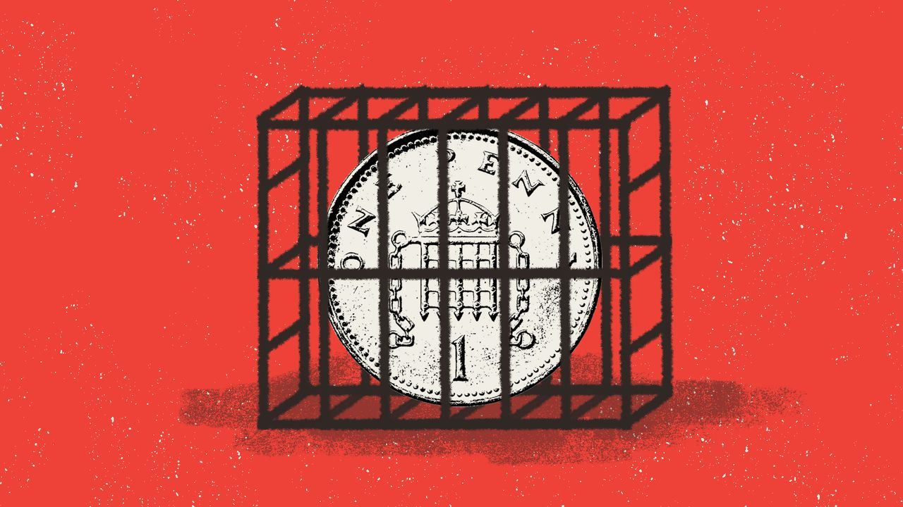
Listen to this story.Enjoy more audio and podcasts on iOS or Android.
When David Cameron resigned as prime minister in June 2016, hours after Britain voted to leave the EU, he said the country needed “fresh leadership”. What it would like now is a nice lie-down. Rishi Sunak is the fourth Conservative to hold the top job since the then Mr Cameron quit. Jeremy Hunt is the sixth chancellor. In the 30 years before the Brexit referendum, big cabinet reshuffles happened about once every two years; since then they have occurred once every six months on average. The latest, to sack Suella Braverman as home secretary and bring the newly ennobled Lord Cameron back as foreign secretary, has triggered another bout of Tory infighting.
The Labour Party has its own fractures, most obviously over the war in Gaza. But in the face of sustained Tory tumult, it pitches itself as stability incarnate. It is more than 20 points ahead in polls, with a general election likely to take place next year; Sir Keir Starmer, its leader, and Rachel Reeves, the shadow chancellor, promise to rebuild Britain. Yet those hoping that a new government with a big mandate would be enough to solve Britain’s problems are misguided. The country’s malaise goes deeper than the individuals in office. Productivity has risen by a feeble 1.7% since 2008; in the previous 16 years it rose by a hearty 27%. There are also problems with the way that the institutions of state are run. None of these is more powerful than the Treasury.
In most countries the power of the finance ministry is constrained. America has a separate budget office. In Germany there is a ministry of economic affairs, responsible for long-term growth, and the powerful regional . In Britain the Treasury reigns supreme. Its 2,000-odd officials exert an extraordinary degree of control over the best part of £1trn ($1.2trn) in public spending each year. It has sole responsibility for setting taxes. It doubles up as the economics ministry.
No one doubts the Treasury’s competence. Its power attracts Whitehall’s brightest minds. Many who attack it simply want higher spending or are too sanguine about ballooning debt. Liz Truss, who was prime minister for seven weeks last year, blasted its failed “Treasury orthodoxy” because it doubted her plan to unleash growth through unfunded tax cuts. The unravelling of her premiership is testament to the value of Treasury rigour.
But the disproportionate power of the Treasury means that its flaws ripple outward with particular force. And those flaws are meaningful. The department contributes to, and exemplifies, Britain’s deeper-rooted problems.
One is that it is itself prey to the short-termism that both Mr Sunak and Sir Keir say plagues Britain. Ministers ultimately make the decisions. But the Treasury has a culture of frugality that goes back to William Gladstone, a Victorian statesman who, as chancellor, was known for “saving the candle-ends”. The way the mighty finance department works is to focus narrowly on keeping control of near-term spending, even if that means squashing projects that make sense in the long term.
The woes of the National Health Service (NHS) are partly the result of decades of low capital investment. Britain has crumbling hospitals and the fifth-lowest number of CT scanners and MRI units per person in the OECD, a group of developed economies. Yet the Treasury has allowed billions to be plundered from NHS capital budgets to plug gaps in day-to-day spending. Its “green book” process of evaluating proposed spending leads to a bias against transformative projects. Treasury officials thought the M25 motorway around London should be two lanes wide, and opposed extending the Jubilee Line, on the London Underground. Ministers were the ones to overrule them; both of these upgrades are thought to have been good value for money. Many other projects, particularly outside the south-east, got nowhere.
Another revealing problem is that the Treasury doesn’t worry enough about Britain’s measly rate of economic growth. This has many culprits, from Brexit to planning snarl-ups. But the Treasury is supposed to be the department that galvanises action. Instead, the path to promotion, say insiders, is to show that you can kill off spending bids. When interest rates were low, the Treasury passed up the chance to invest more. Twice-yearly fiscal events—Mr Hunt will deliver the next autumn statement on November 22nd—encourage fiddling and sow uncertainty. Capital allowances, an element of business taxation, have been changed on average every other year for the past four decades.
Short-termism and the neglect of growth would not matter so much were it not for a third failing: the department is a micromanager. Britain is highly centralised and the Treasury is the uber-centraliser. Other government departments and local councils must jump through hoops just to show how they will spend piddling sums. In February the levelling-up department was banned from deciding any new capital projects without approval. One-third of the Treasury’s officials are under 30; bright Treasury graduates end up telling everyone from army generals to scientists how to do their jobs. Finance ministries in other countries avoid this combination of immense power and callowness.
Checking the exchequer
Some argue that the answer is to break the Treasury up. That would be a mistake. It would be costly and disruptive. A failed attempt under Harold Wilson suggests a break-up might not stick.
Instead, the Treasury needs reform. Short-termism can be reduced if chancellors accept constraints on their power. Big revisions to important infrastructure projects should require Parliament’s approval. Capital budgets should be fixed for five-year terms and tax changes limited to once a year at most. The Treasury’s grip on the purse-strings should be loosened. Once budgets and objectives are set, other government departments should have more scope to spend the money. Cities have a limited amount of fiscal freedom: they should have more.
Hardest of all, the Treasury’s culture needs to adapt. Its commitment to disciplined spending is vital, and it often displays nimble thinking in a crisis. But that is not enough. Sir Keir and Ms Reeves say that revving up growth would be their number-one priority. So far they have had little to say about the department that could thwart them. That has to change. ■
Letters | On Israel and Gaza, Li Keqiang, feta cheese
Letters to the editor
A selection of correspondence
Listen to this story.Enjoy more audio and podcasts on iOS or Android.
Tough choices on Gaza
is unwilling to confront reality. Your argument in “Why Israel must fight on” (November 4th) that an international coalition of Western and Arab countries is needed to govern Gaza is idealistic. Western and Arab countries do not have the will to occupy Gaza. You also call for fair elections in the West Bank, hoping for “moderate” leaders to emerge with a “democratic mandate”. According to the best available polling data, Hamas would win a fair election, a disastrous result. Lastly, you believe Israel should follow international law to sustain broad support over months of fighting. But regardless of how Israel fights, it will not enjoy broad support.
Hamas is a political movement and cannot be destroyed with force alone. Either there will be a long, arduous, Israeli-led occupation of Gaza or Islamist militants will return to power there. Neither option is remotely appealing. It would be better if provided a sober analysis of that more realistic scenario.
Steven Baranko
The polarised, zero-sum way in which governments and media on both sides are depicting this conflict is frustrating. The debate is increasingly being monopolised by radicals; criticism of one side implies a defence of the other.
There should be no debate about the atrocities and acts of terrorism committed by Hamas on October 7th. They were heinous. Trying to justify those atrocities with references to the wider conflict is akin to justifying rape by pointing to what the victim was wearing. You do not need to understand the wider context. Stating that Hamas’s atrocities were wrong does not make one anti-Palestinian. However, the manner in which the Israeli government is waging war is also wrong, and stating this does not make one anti-Israeli. Of course Israel has the right to defend itself and act, but this does not justify the tremendous loss of innocent civilian life.
Hamas has acted monstrously and has correctly called it so. The Israeli government is also acting monstrously, and this newspaper should have the courage to denounce it and call for different tactics.
Gabriel Sanchiz Garin
Far from seeking to strengthen Hamas, as you allege, Binyamin Netanyahu, Israel’s prime minister, hit Hamas hard in three large-scale military operations in 2012, 2014 and 2021. In 2005 he warned that Gaza would become “Hamastan”. In 2014 he said “Hamas is ISIS”. After the October 7th massacre of over 1,000 Israelis and over 200 taken hostage, Mr Netanyahu’s war cabinet directed the Israeli army to destroy Hamas. Once Gaza is free from Hamas, there may be hope for peace.
Dr Ophir Falk Foreign policy adviser to the prime minister of Israel
If Hamas was hiding in Tel Aviv or Jerusalem, would Israel bomb those Israeli cities to bits to get at them? When Britain suffered from despicable IRA terrorism in the 1970s, was peace achieved by the British government reducing the supposedly IRA-supporting West Belfast to rubble?
Kim Mathen
You refer to a social contract between the state of Israel and its people. You also advocate developing a moderate leadership among the Palestinians. But potential moderate leaderships in the past have been undermined by extremists on both sides. There is no evidence that either Israel or the Palestinians would have any confidence in a future moderate leader’s ability to resolve the issues. It is more likely that if Hamas is destroyed it would eventually be replaced by yet another extreme organisation.
It may be anathema to the Israelis, but the only alternative is to start talking to Hamas now. Yes, Hamas would proclaim a victory, but does that really matter when the lives of civilians on both sides are at stake? Only by negotiating can Israel secure its social contract with its citizens.
John Davey
Mr Netanyahu is totally dependent on hardline, right-wing, Jewish supremacist, coalition partners to stay in power. The aim of these coalition partners is a full Israeli armed occupation of Gaza, followed by a re-founding of all the settlements that were destroyed when Israel pulled out of Gaza in 2005. Given the choice between doing what is good for the country or keeping his coalition partners happy Mr Netanyahu always chooses the latter.
I look forward to the day when Israel is no longer governed by him and his supremacist supporters. Perhaps then, Israel will be able to engage with its partners and allies in the international community to rebuild Gaza free from the barbaric tyranny of Hamas and Islamic Jihad, and thus enable Israelis to live securely within our borders.
Andrew Goldman
image: Reuters
The public in many countries tends to support the little guy against the big, the weak versus the strong, David against Goliath (“The culture war over the Gaza war”, November 4th). In its early days tiny Israel was the David and the much larger Arab states surrounding it were the Goliath. Now that is reversed and Israel, with its mighty army pounding Gaza is increasingly seen as the Goliath, fairly or unfairly.
Humphrey Taylor Chairman emeritus Harris Poll
You are correct to argue that Israel must fight on while adhering to international law. What Israel lacks is any clear idea of the result it is realistically trying to achieve. Mr Netanyahu has avoided any serious effort to make progress towards a two-state solution. In fact he endeavoured to weaken the moderate Palestinian leadership and has instead strengthened Hamas with the expectation that Israel could perpetuate the expansion of the West Bank settlements and keep the lid on incursions from Gaza. The only outcome that will be beneficial to Israel is a political agreement that ends Israel’s occupation and facilitates Palestinian self-determination.
Michael Hirst
Pity the job of a newspaper editor during war in the Middle East. I thought your leader was exceptional in not shying away from the fact that sometimes war is needed in order to make peace. The argument was a bold one, particularly when set against the chorus of rather troubling jihadi voices that have found purchase in our Western capitals.
Evan Hoff
image: Getty Images
I appreciated the article questioning the feasibility of a two-state solution (“Still out of reach”, November 4th). I’m waiting for other news media to take an honest look at the viability of a Palestinian state: broken into pieces, lacking social cohesion and wretchedly poor. Demography, geography and the policies of Israel and its neighbours have all conspired to sink the plan.
By continuing to hold out hope that it will work, aren’t we really allowing Israel to avoid the most important and hardest issues? True friends are honest when mistakes are being made. Who are Israel’s true friends today?
Ben Larrimer
image: Chloe Cushman
Li the innovator
Chaguan stated that Li Keqiang’s death symbolises the end of an era in which the Communist Party in China “sought legitimacy through technocratic performance” (November 4th). Even though the Chinese government downplays Li’s death, middle-aged and young Chinese still mourn him for his expertise and emphasis on facts and figures, not ideology.
We also mourn Li for his emphasis on fostering a culture of innovation. He spared no effort in encouraging both young and old to hail entrepreneurship and embrace the new. When WeChat first came out, the app endured attacks from many Chinese, especially those who were traditional and dubious of the positive impacts brought about by this platform. Li, at the time, refused to impose dogmatic regulations on WeChat, and instead gave it a greater freedom to develop on its own. Years later, when WeChat became viral, he mused that “if we used traditional ways to regulate WeChat, then it would not have been able to evolve to its current state.” He was patient and curious to see how innovation changed the lifestyle of the Chinese.
Jack Wang
A cultured argument
As a Hellenophile and feta aficionado (fetaficionado?) I was shocked at Bartleby’s disparaging of Greece’s national cheese (October 28th). Feta is far from insipid and varies from mild to salty and smooth to crumbly depending on the terroir, fermentation process and combination of sheep or goat milk used. Some fetas are so tangy as to raise eyebrows. But perhaps Bartleby was referring to the fake feta produced outside Greece which is often bland, innocuous and adulterated with cow milk. In which case I would urge him to experience the inspirational qualities of real feta although the slur will unfortunately remain a fet’accompli.
Andreea Manea on the legal complexities around Israeli attacks that hit hospitals
They are not always unlawful, but the exceptions are narrow—and involve meeting several conditions
OF THE ATTACKS launched by Israeli forces in Gaza since October 7th, none have caused more international consternation than those that have hit hospitals and ambulances—even as Israel insists it takes care to target Hamas, not civilians. Attacks on medical facilities and a lack of supplies have brought Gaza’s health-care system to “a point of no return”, the International Committee of the Red Cross (ICRC) has warned. The World Health Organisation says that al-Shifa hospital, the territory’s main hospital, the area around which has seen intense fighting, “is not functioning as a hospital any more”.
Outright attacks on medical facilities are morally reprehensible but, from the perspective of the law of armed conflict (LOAC), they are, sadly, not always unlawful. That depends on targeting.
Selection, approval and execution of targets under this law is a complex exercise. LOAC seeks to strike a balance between the military necessity of achieving the enemy’s surrender and humanitarian considerations of minimising destruction and human suffering to what is necessary to achieve lawful military objectives. Those directing attacks must be guided by several interconnected principles. Chief among them are distinction, proportionality and precautions in attack.
Start with distinction. Under LOAC, fighting forces must try to avoid attacking civilian objects. When it comes to medical infrastructure such as hospitals and ambulances, the law goes further and deems them as objects of special “respect and protection”.
But this protection is not absolute. It may be lost if three conditions are all met: the medical infrastructure is used to commit acts harmful to the enemy; enemy forces issue an effective warning; and, following a reasonable time limit, the warning remains unheeded.
On November 3rd the Israel Defence Forces (IDF) stated that “a Hamas terrorist cell” had been identified using an ambulance and in response an IDF aircraft “neutralised” those inside the vehicle. This statement, if true, has legal significance. The same is true where Israel claims that Hamas has been using hospitals as command centres.
In these instances, Israel is attempting to make two points. The first is in relation to its own forces. If the ambulance were used to transport uninjured Hamas troops, or even just to transmit military intelligence, then the first condition listed above—use to commit acts harmful to the enemy—would possibly be met. The same rationale applies to hospitals allegedly used by Hamas as command centres. Second, Israel is trying to show that it is Hamas, not Israel, that has violated LOAC, by using a protected object for military purposes.
Yet misusing ambulances and hospitals (which Hamas has denied) is not enough to strip them of protected status. In addition, LOAC requires Israel to warn Hamas fighters to stop the misuse. Where Hamas continues to misuse hospitals, Israel must allow for safe evacuation of the wounded and sick. According to LOAC, only if the warning remains unheeded after a “reasonable” time has elapsed is this protected status truly lost.
What is “reasonable” varies with circumstances. According to the ICRC, it must be enough time to allow the unlawful acts to be stopped, or for the wounded and sick to be removed to a safe place. Under the law, advance warnings are generally mandatory and must be “effective”. ICRC commentary on the law and some state practice (such as that of America, Australia and, for that matter, Israel) point towards some very limited exceptions to this rule of “due warning”, namely “overriding” military necessity and self-defence.
It is not clear whether Israel has consistently complied with this obligation to warn. In the ambulance case, no warning appears to have been issued. However, at al-Rantisi children’s hospital, Israel dropped leaflets warning people there to evacuate because of “Hamas terror activity…inside the premises”. The leaflets also warned that the hospital was in a war zone and that the crossing to southern Gaza was open for evacuation. The al-Shifa hospital, beneath which Israel believes Hamas’s main command post is located, also seems to have received warnings to this effect.
Notwithstanding this, Israel’s warnings place doctors in an extremely difficult situation from a humanitarian perspective: abandon their patients or risk moving highly vulnerable individuals (such as those in neonatal units) to southern Gaza—an area whose hospitals are already full and short of supplies. Here, a case can be made that duties as they relate to precaution, and the obligation to protect the wounded and the sick, compel Israel—subject to feasibility—to facilitate the safe evacuation of patients.
On November 11th Israel said it had offered to evacuate newborns at al-Shifa. By that point, however, the hospital had already been heavily affected by fighting. In legal terms the Israeli commitment may therefore be seen as too little too late, if the evacuation could feasibly have happened earlier. The key word here is “feasibly”: what is practically possible at a given moment is open to argument.
In short, the task of assessing Israel’s compliance with LOAC in relation to medical infrastructure is riddled with complexity. What is clear is that, even if Hamas is misusing hospitals and ambulances in a way that turns them into “military objectives”, any attack must not be indiscriminate. And Israel must comply with the principles of proportionality and precautions in attack even where—as seems to have mostly been the case—its targets are not directly medical facilities but Hamas command posts and fighters in, around or beneath them.
On the other side, if Hamas is using medical infrastructure for military purposes, it is breaking LOAC. This applies both to using hospitals as command posts or as shields to protect subterranean posts, and to using ambulances to move around uninjured fighters, weapons or other military supplies.
No matter which side may have violated LOAC first, the rules apply with equal force to both. When it comes to how the world perceives their adherence to law, however, the picture is less balanced. Unlike Hamas, Israel is a democracy that purports to follow international law in military matters. IDF attacks at medical sites have damaged Israel’s reputation abroad and made even its staunchest allies uneasy. For Israel, sparing civilian lives and protecting hospitals is not only a legal imperative, but also a political one. For many millions witnessing the intense human suffering in this war, it is, most importantly, a moral one. ■
David Enoch argues that much of the public discourse on the Israel-Hamas conflict is depressingly simplistic
Intellectuals should be more honest about the uncertainties, says the legal philosopher
THE MORALITY of war is extremely complicated. So, consequently, are the ethics of commenting on it.
But in the war in Israel and Gaza, some things are simple: the horrendous atrocities committed by Hamas cannot be justified, under any circumstances. Another simple fact is that many Palestinians in Gaza are entirely innocent, victims of both Israel and Hamas, and are suffering a horrible calamity. It is highly disconcerting that these two simple facts are in need of emphasising, but there are plenty who are happy to offer pseudo-sophisticated ways of denying at least one of them.
Even when it comes to the morality of the war effort itself, some things are clear: Israel has not just the right to defend itself, but a duty to its citizens to protect them against the threats Hamas (and others) pose. Just as clearly: even in the pursuit of a just war, civilians must not be targeted. And when harm to innocents is a necessary and foreseeable result of legitimate attacks on combatants, in order to be morally acceptable it must be proportionate to the harm the military operation is intended to prevent.
Some of the underlying principles of the morality of war are, then, straightforward enough. (Not all, by the way: for instance, it is not at all clear whether a state using force should be neutral between harm to its own civilians and harm to the enemy’s, and if it shouldn’t, how much priority it should give to its own people.) But what follows from this as far as real-life conflicts are concerned is an extremely complicated matter, about which most of us don’t have anything like the level of information needed to draw conclusions with any confidence.
What are the dangers to its civilians that Israel is now fighting to eliminate? How likely are future attacks—from Hamas, from Hizbullah, from others—to be attempted? To succeed? Are there alternative measures available to Israel that would result in less harm to innocents? (And no, ending the occupation, morally crucial though it is, is not an alternative measure feasibly available to Israel at this moment as a way of defending its citizens.) How do Hamas tactics, including the use of Palestinian civilians as “human shields”, affect the morbid but indispensable proportionality calculus? How much value should be placed on deterrence, and how can Israel restore a significant deterrence effect after the unbelievable intelligence failures of October 7th? What can Israel do to free the hostages Hamas (and perhaps others in Gaza) continue to hold?
Nothing at all can be responsibly said about what Israel should and should not do right now without at least partial answers to these complex questions. Even well-intended calls for an immediate ceasefire do not escape this fate, for it is far from obvious that a ceasefire is consistent with Israel’s duty to defend its citizens (or even just to free its hostages).
Calls for an immediate ceasefire are entirely understandable: given the magnitude of the devastation in Gaza, as well as continued threats to Israelis, any decent person may feel a strong desire that it should all just stop. But such a wish, understandable though it is, is not the basis for sound policy. And if you think that a call for a ceasefire is justified, given factual uncertainties, as a way of erring on the side of safety, you should remember that when it comes to war, often there is no side of safety. Any mistakes—using too much force, not using enough—will be paid for in the only relevant currency, the blood of innocents.
It may be hoped that decision-makers have more information than the rest of us do, and that they give appropriate weight in their deliberations to the relevant moral constraints. But it can hardly be denied that in many of its policy actions over many years prior to October 7th, and in some of its current official and unofficial statements, Israel has rightfully earned the distrust of many—myself included.
What is a conscientious public intellectual to do? Surely we must have something to say about a horrible tragedy that is unfolding in front of our eyes? Indeed, philosophers and other intellectuals have chimed in, not just as individuals, but also in groups. In one such intervention, 45 academics from the University of Oxford wrote an open letter condemning Israel and calling on Britain’s political leaders to urge an immediate ceasefire, without so much as a gesture in the direction of the uncertainties involved. In another public text, signed mostly by North-America-based academic philosophers, anti-colonialist jargon was lifted unmodified from the nice-sounding-slogans shelf and applied with no sensitivity to any of the facts relevant here.
Intellectuals comment on public affairs, and it’s okay if they sometimes do it in a way that is not quite as nuanced as their next academic publication. But when they do, they should highlight complexities, not hide them. They may be experts on some of the general principles of the morality of war, but if they do not appreciate how fact-sensitive any application of that knowledge to real-world scenarios is always bound to be, then they do not after all know the first thing about their subject matter.
When public intellectuals make confident but factually unfounded proclamations on such matters, they degrade their respective fields, and to the extent that they have an effect in the real world they risk taking part in bringing about disastrous policies. In short, they betray their role as intellectuals, serving to fuel legitimate doubts about how much they know or care about the real world, indeed about real people.
Perhaps moral philosophers can contribute to public discourse even now—for instance, in thinking about how decisions should be made given the tremendous uncertainty involved, or to insist on the relevance of some neglected considerations. Or perhaps we should confess that we, too, are embarrassed, that we cannot be confident just what to say. Depending on your expectations, this may be disappointing. But unlike many of the other interventions in today’s public discourse, such a response would at least be honest. And probably less harmful as well.
The new Republican speaker avoids an immediate shutdown without losing his job
Listen to this story.Enjoy more audio and podcasts on iOS or Android.
Insanity is said to be doing the same thing repeatedly while expecting different results. But perhaps a dose of insanity is healthy when it comes to understanding the Republicans who control the House of Representatives. In September Kevin McCarthy, then the Speaker of the House, cut a deal to avoid a government shutdown by defying far-right Republicans and relying heavily on Democratic votes to pass a short-term funding bill. He was summarily defenestrated. Six weeks later Mike Johnson, his replacement, defied hardliners and relied on Democrats to pass a temporary funding bill. Yet, for the moment, his job is safe. What gives?
The explanation has a lot to do with the chaos that ensued after Mr McCarthy’s ejection from the speakership by majority vote—the first in American history. The deal that he cut maintained government funding for roughly six weeks. About half of that time was wasted as Republicans squabbled among themselves about selecting a replacement. That left little time to haggle with Democrats, who control both the Senate and the White House, over a long-term solution. Mr Johnson recognised that he needed more time and that his party would get the blame for a shutdown, so he moved a short-term funding package similar to the one that led to his predecessor’s ousting.
Ninety-three Republican representatives—about two-fifths of the troops—voted against the bill. A similar number dissented against Mr McCarthy. But so far Republicans have held back on ejecting Mr Johnson for the same sin. “Johnson’s going to have a longer leash,” says Kevin Kosar, a fellow at the American Enterprise Institute, a think-tank. “What can he really do? And how long can he do it before they come for him? It’s not clear.”
The House Freedom Caucus, which counts dozens of hardline Republicans as members, denounced the deal “as it contains no spending reductions, no border security, and not a single meaningful win for the American People”. Yet the group added that “we remain committed to working with Speaker Johnson.” Even they are not keen to endure another bout of chaos and embarrassment.
Some of it is a matter of personality, too. Mr Johnson was a genteel, largely unknown representative from Louisiana; his prominent predecessor had developed toxic relationships with many Democrats and Republicans over the years. Some of those resentments persist. On November 14th, the day the House passed its latest spending legislation, a Republican lawmaker who helped remove Mr McCarthy from power accused him of elbowing him in a hallway. Mr McCarthy pled ignorance: “If I kidney-punched someone, they would be on the ground.” Mr Johnson’s honeymoon may be ending, but at least the marriage has not degenerated into McCarthyesque plate-throwing.
The Johnson bill includes several small but meaningful distinctions. Mr McCarthy’s reprieve had funding expire less than a week before Thanksgiving, which was suboptimal for lawmakers who like their families. In the holiday spirit, Mr Johnson did not want a funding extension so short that it created a new deadline before Christmas— “a terrible way to run a railroad”, in his words. His temporary measure extends funding into the new year. Its expiry would not turn the federal government off all at once. Money would stop flowing to parts of the federal government on January 19th 2024; the rest would be cut off on February 2nd.
Democrats had been braced for much worse. Chuck Schumer, the Senate majority leader, said Mr Johnson’s bill left him cautiously “heartened”. Pramila Jayapal, chair of the Congressional Progressive Caucus, even called the short-term legislation “a very big win” because it kept funding at the (arguably profligate) levels that was set back when Democrats had full control of government. That sort of praise does not help Mr Johnson’s relationship with conservative House members.
The real challenge comes in January, when Mr Johnson will have to corral his raucous Republican caucus and reach a long-term spending deal with Democrats. The ramifications are not just over political embarrassment or even the annoyance of a federal shutdown. The White House’s request for $106bn in military funding for Ukraine, Israel, the Indo-Pacific and border security remains stalled. Solid majorities in the House and Senate support further assistance to Ukraine, the largest beneficiary and the country in greatest need of additional aid. Mr Schumer hopes to bring up the package after Thanksgiving, but Mr Johnson has said he wants to “bifurcate” Israel and Ukraine.
Mr Johnson’s election has not proved a boon for America’s allies. Although the new speaker has adopted some pro-Ukraine rhetoric in recent weeks, he had consistently voted against sending aid to the country. Mr Johnson has alluded to more oversight of support for Ukraine, which may be an unnecessary but acceptable compromise. Despite being a consistent supporter of Israel, he also suggested pairing new military aid with spending cuts at the Internal Revenue Service, a long-running Republican bugbear. This unserious offer—which would actually increase deficits—is not encouraging.
The uncertainty is worrying. “You’ve got a lot of Republicans who I know, know, in their hearts and minds—they support Ukraine. But how do they deal with Trump and his shall-we-say rather enthusiastic supporters?” said Adam Smith, the top Democrat on the House Armed Services committee. “There’s not much policy here and a lot of politics.” ■
The Supreme Court’s code of conduct is a good first step
But the justices may find they need to go further
Listen to this story.Enjoy more audio and podcasts on iOS or Android.
FOR 50 years all but nine of America’s around 2,000 federal judges have been subject to a code of conduct laying out ethical guidelines for jurists’ behaviour on and off the bench. On November 13th the exceptions—the justices of the Supreme Court—announced that they had decided to join their lower-court peers.
The new rules do not arrive in a vacuum. Calls for the court to clean up its act have followed investigative reports from and other publications uncovering several justices’ ethical lapses. Justice Clarence Thomas, the main target of those articles, failed to declare decades of luxury travel on the tab of Harlan Crow, a generous donor to conservative causes. Mr Crow also bought a home Justice Thomas owned in Georgia and footed the tuition bill for his grandnephew’s private school.
A Senate committee found last month that another friend of Justice Thomas apparently forgave “a substantial portion” of a $267,230 loan financing the justice’s Prevost Marathon motor coach (which he has referred to as his “land yacht”). This too was not declared. And although his wife Virginia lobbied President Donald Trump’s chief of staff to help overturn the 2020 election outcome, Justice Thomas opted not to recuse himself from cases challenging the election results and involving Mr Trump’s role in the riot at the Capitol on January 6th 2021.
Without alluding to any of this—or to Justice Samuel Alito’s fishing trip to Alaska, paid for by a right-wing billionaire who later brought business before the court, or to any other colleagues’ apparent conflicts—the justices all signed on to a code of conduct. (Justices Alito and Thomas contend they did nothing wrong.) The document, the court wrote, is “substantially derived” from the code that applies to other federal judges. Justices should “uphold the integrity and independence of the judiciary” and “avoid impropriety and the appearance of impropriety”. They are to “perform the duties of office fairly, impartially and diligently” and may undertake only appropriate “extrajudicial activities”.
In five pages of commentary accompanying the code, the court acknowledged that some canons are “broadly worded general principles informing conduct”—not “specific rules”—and require justices to exercise “judgment” and “discretion”. The document also notes that, since the Supreme Court is a “unique institutional setting”, the existing code cannot be adopted without tweaks. For example, justices must recuse themselves from cases in which they have a financial interest or “personal bias or prejudice”. But unlike judges who can be easily replaced, justices have no such substitutes and have a “duty to sit” whenever possible. “Much can be lost”, the code says, “when even one justice does not participate in a particular case.”
Another revision may have been made to avoid impugning justices who have enjoyed the largesse of wealthy donors. Whereas the code for other federal judges bars them from “convey[ing] the impression” that someone is “in a special position to influence the judge”, the Supreme Court’s rules qualify this phrase with “knowingly”. As long as a justice is unaware that his actions are raising eyebrows—by creating the impression, say, that he is under the influence of an ideological benefactor—he or she remains in compliance with the new code.
There is a bigger hitch: no one other than the justices themselves gets to decide when the code has been breached or how violations will be handled. By contrast, reform measures pending in Congress would allow citizens to complain about justices going rogue and to have their claims reviewed by panels of lower-court judges.
Still, the justices’ move is a step in the right direction and demonstrates some responsiveness to public perceptions that not all is well at One First Street. And the code closes on an encouraging note that may pave the way for further self-improvement if the justices wish to examine and emulate the “best practices…of other federal and state courts”. Until then, though, America’s highest judges will have to keep a closer eye on themselves. ■
Listen to this story.Enjoy more audio and podcasts on iOS or Android.
Before the main course comes out on a Friday night, the diners are asked to pause for some entertainment. “I’m not one to just throw a dinner party with nothing,” says the host, and then a musician stands up and sings. The assembled guests, seated along two long tables, whoop. Each person attending has paid $90 for the meal, which consists of six courses plus paired wines and cocktails. The banquet is themed loosely around Shabbat, the Friday evening meal for observant Jews. The scene is not, however, at a fancy restaurant, but in an art gallery. Paintings depicting different foods line the walls. The host, Allan Weinberger, who is also the gallerist, notes which have already sold, and that the painter is among the crowd.
The meal at Mr Weinberger’s gallery was provided by TxaTxaClub, a business started in Chicago in 2021 by two restaurateurs, Liz Bendure and Daniel Parker. The two met working at an organic restaurant in Logan Square, the heart of Chicago’s hipster belt. But when the pandemic closed dining places, their lives were thrown into chaos. “We kind of lost everything,” says Ms Bendure. Starved of work, they started running supper clubs for a dozen or so people in their garden. Within a year they were serving larger crowds in “underused” spaces. Art galleries work well because they are empty at night, and the owners like to bring in punters with fancy taste. But they have also cooked in warehouses and at a furniture store.
The past few years have been tough for the restaurant industry. Last year there were roughly a tenth fewer eating places open in America than there were in 2019. Supper clubs and the like are thriving, however. Yelp, which runs a table-reservation website, says openings of “pop-up” restaurants (without permanent premises) more than doubled in the year to March. One reason why is simple: spending is back, but costs have soared. Wages in “food and drinking places’‘ have climbed by a third since 2020, according to the Bureau of Labour Statistics. In restaurants, says Mr Parker, “the financial always becomes the focus”. Staff must be paid all day long, even when tables are empty. A pop-up is far more efficient, and less risky. Just try not to damage the art.■
Some progressives are arguing for a religious right to abortion
The Supreme Court’s deference to faith-based objectors has buoyed their claims
Listen to this story.Enjoy more audio and podcasts on iOS or Android.
The Book of Exodus contains a section about liability. It is a bit outdated, enumerating damages if someone’s bull gores another person’s slave. But one parable is relevant to abortion debates today, since it elucidates how Judaism understands the unborn. If a pregnant woman is hit and suffers a miscarriage, the perpetrator must pay a fine. If she dies, however, the penalty is death. The tale is said to differentiate between the value of a fetus and a person. Other Jewish texts also hold that life doesn’t begin at conception.
The justification for outlawing abortion is to protect fetal life; some states’ bans say this explicitly. Yet that rationale rests on a religious belief about when life begins. What about people whose faith maintains that it starts later? Indeed Jewish law authorises, and even requires, an abortion if a mother’s health—physical or mental—is jeopardised. Jews disagree about what degree of risk warrants the procedure. But the general principle is that her well-being takes priority.
In Indiana and Kentucky, several Jewish women are seeking religious exemptions from their states’ abortion bans in court. The restrictions, they say, make it impossible to get an abortion when their faith might mandate one. The lawsuit in Indiana is joined by a Muslim and a woman who describes herself as a non-theistic believer in the sanctity of bodily autonomy. It is the further along of the two cases: on December 6th the Indiana Court of Appeals, which sits one rung below the state’s highest court, will take it up. Similar challenges have been brought by religious leaders in Florida and Missouri.
The religious case for abortion might surprise many. After guaranteed the right in 1973, religious activity on the issue became synonymous with anti-choice Catholics and evangelicals. But before , liberal Protestants and Jews had long agitated for reproductive choice as a matter of conscience. Some understood it as a moral obligation in certain cases given the responsibility of parenthood; they argued that the interests of the already-born superseded those of “potential life”. In 1967 a group of ministers and rabbis set up a referral and counselling network called the Clergy Consultation Service on Abortion; within six years it had assisted nearly half a million women. The Indiana chapter said it aimed to “help women through what some have called ‘their deepest crisis’”.
The plaintiffs in Indiana and Kentucky cite the Religious Freedom Restoration Act (RFRA), which empowers religious objectors to seek exemption from a law if it “substantially burdens” the exercise of their faith. Two dozen states, including Indiana and Kentucky, as well as the federal government, have a RFRA on the books. To fend off a RFRA claim, the government must show that its application of the law is the “least restrictive” way to ensure a “compelling” state interest (ie, protecting fetal life).
The plaintiffs have a strong case, not least because of the disagreement about when life begins and whether one is at stake from conception. Even setting aside that minefield, the Supreme Court has made it much easier for religious objectors to prevail in recent years. The court has said that the government undermines its case for withholding religious exemptions by granting secular ones. All abortion bans allow the procedure if a mother’s life is at risk; Indiana lets victims of rape or incest have it. Neither Indiana nor Kentucky stops IVF clinics from discarding unused fertilised embryos. Those are big carve-outs, says Elizabeth Sepper, a law professor at the University of Texas at Austin: “If states cared about their interest in protecting fetal life, they would pursue it in all the relevant cases, and they’re not.”
The Supreme Court’s deference to religious objectors over the past decade has principally served conservative Christians, such as plaintiffs who did not want to offer insurance coverage for contraception, or bake wedding cakes for gay couples. But progressives are religious too, and they have had some luck with religious-liberty claims in lower courts. In 2019 an activist was acquitted of illegally aiding unauthorised migrants in the Arizona desert, an act that he said was compelled to do so by his Unitarian faith. Abortion providers may well make RFRA claims on the basis that their faith obliges them to perform the procedure for patients who need or ask for an abortion. Doctors in states that have restricted transgender health care could conceivably say the same.
Some conservatives were against the federal RFRA before it passed in 1993. They were suspicious that pro-choice progressives would harness the law. The US Conference of Catholic Bishops lobbied against it. Eventually the anti-abortion camp came around, and states enacted their own versions. In fact Indiana’s was signed into law by its governor at the time, an anti-abortion evangelical named Mike Pence. He may soon have regrets.■
There has been an incident of gun violence in or near an American school every day this year, on average.
There has been an incident of gun violence in or near an American school every day this year, on average.
February 2023 was five years since the high-school massacre in Parkland, Florida, in which a gunman killed 17 students and staff. It was also representative of a typical month of school gun violence.
There were 23 incidents of gun crime on or near school property over 13 days, which ranged from a fourth-grader brandishing a gun in the toilets to a student’s stepfather committing suicide in the school office.
In five shootings, across four days, a victim died.
In eight more someone was injured.
There were also 148 “SWAT hoaxes”, in which false threats of a school shooting were made to police, which can lead to an armed response.
What follows contains images and descriptions of violence some readers may find distressing.
MON 30th
TUE 31st
WED 1st
THU 2nd
FRI 3rd
SAT 4th
SUN 5th
MON 6th
TUE 7th
WED 8th
THU 9th
FRI 10th
SAT 11th
SUN 12th
MON 13th
TUE 14th
WED 15th
THU 16th
FRI 17th
SAT 18th
SUN 19th
MON 20th
TUE 21st
WED 22nd
THU 23rd
FRI 24th
SAT 25th
SUN 26th
MON 27th
TUE 28th
WED 1st
Williamsburg Charter High School, Brooklyn, New York
2.15pm: A 15-year-old and 17-year-old are caught in a fight during dismissal and shot in the legs. A staff member is also injured. The shooter was not a student.
Story continues below
This shooting took place outside the school building, after school, which means it would not be counted as a school shooting in most datasets. Although the government logs every time someone is killed or injured in a car crash in America, there is no federal record of when a gun is fired on school property, and the databases that do exist all define this type of violence differently. Some only include shootings that happen during the school day, while others only count incidents in which someone is killed or injured.
Victims injured or killed in US school shootings
300
K-12 school shooting database
200
Washington Post
Everytown
100
0
2000
05
10
15
20
22
Sources: Washington Post; Everytown for Gun Safety; K-12 School Shooting Database
Victims injured or killed in US school shootings
300
K-12 school shooting database
Washington Post
Everytown
200
100
0
2000
02
04
06
08
10
12
14
16
18
20
22
Sources: Washington Post; Everytown for Gun Safety; K-12 School Shooting Database
Victims injured or killed
in US school shootings
300
K-12 school shooting database
200
Washington Post
Everytown
100
0
2000
05
10
15
20
22
Sources: Washington Post; Everytown for Gun Safety;
K-12 School Shooting Database
The K-12 School Shooting Database, compiled by David Riedman, a data scientist, includes every time a gun is brandished, fired on or hits school property—or areas outside the school, such as pavements—at any time and for any reason, as these incidents can all cause significant disruption. “Most people think that a school shooting is something where it’s this deranged person who’s coming into the school,” he says. “But really, the most common circumstance for a gun to be fired is a dispute between students, usually taking place in a hallway or parking lot at dismissal.”
The impacts can play out for years. Researchers from Stanford University studied gun violence in Texan schools between 1998 and 2006. They found absences and grade repetition increased after a shooting, while graduation rates decreased. Students whose schools had experienced a shooting earned less by their mid-20s than those from unaffected schools. Another Stanford study found that, nationwide, near schools that experienced a fatal shooting, youth antidepressant prescriptions increased by 21% for two to three years after.
In Brooklyn, the school moved to remote learning for three weeks after the shooting. “There was the lingering question of will this happen again? Am I safe?” says Jahi Bashir, the head of school at the time of the shooting. “It’s very difficult to focus on instruction when you have these thoughts.” Despite extensive mental-health support from the school, 49 students left in the months following—more than three times the drop-out rate of a year earlier. The 15-year-old who was shot did not come back to in-person lessons for the remainder of the school year.
Story continues below
The school spent over $90,000 on metal detectors and new security cameras. Three other schools that experienced shootings in February also invested in added security, at a total cost of around $450,000, including bullet-resistant glass and entry systems. The school-security, or “hardening”, industry in America grew by 57% between 2016 and 2021, when adjusted for inflation, to $1.6bn. But as this spending has increased, so too have shootings. “We’re going in the wrong direction,” says Mr Riedman.
Part of the reason is that, by Mr Riedman’s calculations, more than 70% of shootings take place outside school buildings, which metal detectors and bullet-proof doors will do little to prevent. Ellen Eagen, legal counsel for Williamsburg Charter High School, says the school’s Board of Trustees nevertheless had little choice: “We are desperate to make schools safer, and in the absence of sensible gun regulation, educators have to do whatever they can to improve safety.” But it is not just spending on hardening that appears misplaced. The ways in which schools prepare students for an active shooter can have harmful consequences too.
MON 30th
TUE 31st
WED 1st
THU 2nd
FRI 3rd
SAT 4th
SUN 5th
MON 6th
TUE 7th
WED 8th
THU 9th
FRI 10th
SAT 11th
SUN 12th
MON 13th
TUE 14th
WED 15th
THU 16th
FRI 17th
SAT 18th
SUN 19th
MON 20th
TUE 21st
WED 22nd
THU 23rd
FRI 24th
SAT 25th
SUN 26th
MON 27th
TUE 28th
WED 1st
Aspen Elementary School, Aspen, Colorado
8.30am: The school holds a lockdown drill to prepare students for an active shooter
Story continues below
Lockdown drills are part of life in around 95% of public schools in America. They became widespread after the Columbine mass shooting in Colorado in 1999, as no one who had hidden in a locked room was killed. But there is now a debate about whether these drills are needlessly traumatic given how unlikely children are to be involved in a Columbine-style siege.
Annual lockdowns drills required by law
No requirements
Not specified
Required but number not specified
1-2
3-5
There is little guidance about how schools should run drills, or how many are necessary. Massachusetts does not mandate a number of lockdown drills per year, while neighbouring New York requires four. It is down to school districts or even individual schools to determine what these should involve. This has led to reports of schools using role play and fake blood, and children messaging their parents during a drill to say goodbye because they thought they were going to die.
Some of the most comprehensive research into how best to run drills has been done by Jaclyn Schildkraut, who has been studying drills in Syracuse, New York, for five years. There, drills are unscheduled. It is made clear they are not real, and students are given a chance to debrief afterwards. “We don't set schools on fire to practise fire drills,” says Ms Schildkraut. “So it’s really important that we're not simulating active-shooter events to practise a lockdown.” But even in a school in Syracuse, some children seemed unsettled by the drills when visited.
Story continues below
There are now multiple bills going through state legislatures to reduce drills’ frequency and make them less upsetting, by doing things like announcing a drill before students lock down, and allowing parents the chance to opt their children out.
Ultimately, however, no amount of practice can prepare students, teachers and parents for the terror of a potential shooting.
MON 30th
TUE 31st
WED 1st
THU 2nd
FRI 3rd
SAT 4th
SUN 5th
MON 6th
TUE 7th
WED 8th
THU 9th
FRI 10th
SAT 11th
SUN 12th
MON 13th
TUE 14th
WED 15th
THU 16th
FRI 17th
SAT 18th
SUN 19th
MON 20th
TUE 21st
WED 22nd
THU 23rd
FRI 24th
SAT 25th
SUN 26th
MON 27th
TUE 28th
WED 1st
Colorado
8.25am-1.45pm: Police across the state receive calls from a man saying he is about to attack local schools
Story continues below
These calls prompted a huge police response. One of the first dispatch centres to receive a call was in Aspen. Just over a minute later officers were in Aspen Elementary School hunting for a gunman. At least 44 officers from five different forces, along with 27 medics, 26 firefighters and nine ambulances, attended the scene. Michael Buglione, the local sheriff, said it was the biggest unplanned emergency response he had seen in his 18-year career. Around 500 children locked down in their classrooms, just as they had practised the day before.
But there was no shooter. This was a hoax call, one of 17 made across Colorado on February 22nd.
School shooting hoaxes, February 2023
0
These “SWAT hoaxes”, so called as they can require the response of a special weapons and tactics, or SWAT, team, capitalise on fear to cause chaos—and they are increasing. According to The Educator’s School Safety Network, a think-tank, there were around 70 such hoaxes against schools in the 2018 school year, and 450 in 2022. Mr Riedman, who started tracking swatting in 2023, recorded 148 in February alone.
Some of the calls were made from a number with a Florida area code—but they may not have come from there. They were made using a voice over internet protocol service, which, if coupled with the use of a virtual private network (VPN), means they could have come from anywhere. Although the attack was a hoax, the fear felt by people who lived through it was very real.
Story continues below
Jennifer Doebler, a former FBI intelligence analyst, believes these calls are more than just pranks. “It was an intentional plot to create mass chaos,” she says. “I personally believe these are acts of domestic terrorism.” The caller behind the Colorado hoaxes said his name was Nelson, and referred to pipe bombs and an AR-15 rifle on several calls. Keven Hendricks, a cybercrime expert and investigator, says these details suggest these could be copycat attacks, as they are reminiscent of Kya Nelson, a serial swatter who is now in prison. The FBI started tracking SWAT hoaxes in May 2023, and is investigating the Colorado calls, but declined to comment on these cases when contacted by . (Watch a longer investigation into swatting.)
There is also a financial cost. The Aspen school district spent $6m improving its security following the call in February—$2m over budget—because the police response highlighted shortcomings.
But the real thing can damage communities in ways that cannot so easily be repaired.
MON 30th
TUE 31st
WED 1st
THU 2nd
FRI 3rd
SAT 4th
SUN 5th
MON 6th
TUE 7th
WED 8th
THU 9th
FRI 10th
SAT 11th
SUN 12th
MON 13th
TUE 14th
WED 15th
THU 16th
FRI 17th
SAT 18th
SUN 19th
MON 20th
TUE 21st
WED 22nd
THU 23rd
FRI 24th
SAT 25th
SUN 26th
MON 27th
TUE 28th
WED 1st
East High School, Denver, Colorado
2.30pm: A 16-year-old student named Luis Garcia is shot in his car near the school. He dies 16 days later.
Students march on the state capitol two days after his death, demanding change.
Story continues below
The twins’ activism has had some impact: in the months after the shooting state legislators raised the legal age to purchase firearms in Colorado from 18 to 21. The state’s red-flag laws, which allow people to petition for authorities to confiscate an individual’s firearms, were expanded, and a three-day waiting period before firearms purchases can be delivered was introduced. But the shootings continued. On March 22nd a student at East High, Austin Lyle, shot and injured two staff members as they were checking him for weapons at the school’s entrance. He killed himself later that day.
This prompted a dramatic shift within Denver’s public-school system. The school board reintroduced school resource officers (SROs), in effect armed police, to several schools. SROs had been removed in 2020 in the wake of George Floyd’s murder over fears they were disproportionately targeting non-white students. In June the school board voted to make SROs permanent, and as of August 2023 there were at least 14 armed officers in Denver schools paid for by the city. But for many parents this was not the answer they were hoping for, and the community remains deeply divided about the best way to protect its children.
Story continues below
The Denver Public School board issued a new safety plan in June in response to the shootings stating that individual schools could invest in metal detectors, but Mr Katsaros’s remain in a storage unit. He has long campaigned for better safety, but like many parents in Denver, he now feels the problem goes much deeper than security checks. “I thought it was all about guns,” he says, “but I’ve come to find out, it’s the entire discipline structure. Having metal detectors as a deterrent is one solution [...] Having school resource officers is a solution, but there’s no singular solution that can fix this.”
Many parents, teachers and pupils would agree. But a lack of timely and comprehensive data on school shootings is also hindering America's response. Mr Riedman notes that it can take over a year for crime data to be published. “With trends like swatting or shootings at schools, these are things where we need to be adjusting policy in real time,” he says. A clearer understanding of the extent of gun crime in American schools, and the dire consequences, may galvanise authorities and politicians to provide better answers.
Explore every incident in February 2023 using the calendar below.
An FBI investigation raises questions about Eric Adams
New York City is left wondering about Hizzoner’s honour
Listen to this story.Enjoy more audio and podcasts on iOS or Android.
“SOMETHING’S ALWAYS going to be going on in the city and you have to be focused, no distractions and grind,” said Eric Adams, New York City’s mayor, recently. That is no easy task at the best of times. It is especially hard to do while dodging questions about an alleged FBI investigation.
The probe is reportedly looking into questionable donations made to Mr Adams’s 2021 mayoral campaign, including possible illegal foreign donations from people with ties to Turkey. During a press briefing on November 14th Mr Adams said: “We don’t do quid pro quo. We follow the law.” He is not accused of any wrongdoing.
New Yorkers first got wind that something was up on November 2nd, when FBI agents searched the home of Mr Adams’s top fund-raiser. That morning the mayor had landed in Washington, DC, to meet lawmakers and White House officials to discuss his city’s migrant crisis. For more than a year Mr Adams has called on the federal government to help the city cope with 130,000 refugees. Mr Adams abruptly cancelled his meetings and returned to New York. Then on November 10th the revealed that the FBI had seized Mr Adams’s mobile devices. The FBI is also said to be looking into whether Mr Adams pressed the fire department to fast-track the opening of the new Turkish consulate, despite some unresolved safety issues. Mr Adams pooh-poohed any impropriety.
New York City has strong campaign-finance laws. “They work because otherwise we would not know about these contributions,” says Susan Lerner of Common Cause, a watchdog. The Adams administration is not the first to be the subject of investigations. Back in 1932 Jimmy Walker, who also prided himself on promoting city nightlife, resigned amid corruption allegations. More recently, prosecutors looked at whether Bill de Blasio’s campaign tried to dodge contribution limits.
At the same press briefing Mr Adams warned that upcoming budget cuts would be steep because housing migrants is expensive. “It’s going to be extremely painful for New Yorkers, and that is why we continue to say we need help.” But it may be harder to stay focused and grind while the feds are sniffing around. ■
The newly elected president of Saffronia is granted an audience in the West Wing
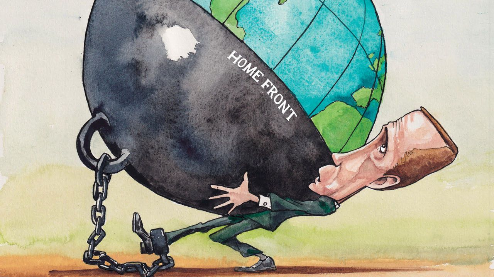
Listen to this story.Enjoy more audio and podcasts on iOS or Android.
Imagine yourself the head of state of Saffronia, a midsized country which looks to America for its security. You are on your way to Washington for your first official visit, in the hope of opening negotiations over a trade deal that would enrich the people who just elected you. A closer trading relationship would also tilt Saffronia towards the United States, which already provides some security guarantees to your country, and away from China. This seems like what the Americans call win-win.
Washington has its own way of measuring your importance: who will take your meeting? First prize is an audience with President Joe Biden in the oval room with the big desk and the thick carpet. Second prize—above the vice-president, the Senate or House majority leaders or members of cabinet—is the national security adviser, Jake Sullivan.
Mr Sullivan’s position is important and impossible. Important, because for all the angst about decline, America is still the greatest military and economic power in history, and it falls to Mr Sullivan to co-ordinate simultaneous responses to what is happening in Israel, Gaza, Ukraine, Sudan, Myanmar, China and other potential conflagrations that you probably haven’t thought about yet but he has. As is often the case with national security advisers, he is also the administration’s foreign-policy brainbox. His job is impossible, because expectations that the president should manage the entire world are unrealistic.
Great news! Your chief-of-staff confirms that Mr Sullivan has time for you. He has both fewer hours available than most important people, because of the absurd demands of his job, and more—because reports suggest he works more than anyone else in America. You browsed his Wikipedia page on the plane coming over and noted that he studied at Yale as well as Oxford, won Rhodes and Marshall scholarships, was a champion debater and had already been the adviser to a vice-president and to two presidential campaigns before starting his current job. He is all of 46. You daydream for a while about your children one day amassing a similar haul of credentials.
When you get back to your briefing book, which contains copies of recent speeches and articles by Mr Sullivan, your sense of wonder turns to alarm. They describe what penitent celebrities call “a journey”. After Hillary Clinton lost to Donald Trump in 2016 Mr Sullivan, who was Mrs Clinton’s policy adviser on the campaign, went away and re-examined his assumptions about economics and foreign policy.
His diagnosis was that the benefits of trade to American voters had been oversold, that inequality was eating the American middle class, that the government had stopped believing it had a role to play in fostering scientific and technological progress, and that companies spent too much energy dodging tax. America could be strong abroad only if it was once again strong at home. Foreign-policy wonks had ceded too much ground to international-economics wonks. The answer is: a foreign policy for the middle class. This does not sound promising.
In person Mr Sullivan is nice and just as bright and persuasive as Wikipedia suggested. Most Washington grandees, whether through insecurity or vanity, spend half of any meeting on just how important they are. Mr Sullivan doesn’t bother with that. But it soon becomes clear that there’s nothing doing on increased market access. If Saffronia had rare earths or commodities required to help the green transition along then exceptions could be made. But a free-trade agreement is not on offer. That’s bad news, evidently, for Saffronia. Might it be bad for America as well?
Part of the difficulty for Mr Biden and his foreign-policy team is that what it calls the new Washington consensus—in favour of an industrial policy to tackle climate change and boost the wages of middle-class Americans—will take time to pay off, if it ever does. Meanwhile, the link between domestic and foreign policy, about which Mr Sullivan is surely correct, at least in a generic sense, is undermining America in the eyes of Saffronia (and many other countries too) right now.
The home front
On the plane home you become increasingly cross. How can America, where a UPS driver can expect a package of pay and benefits worth $170,000 a year, have convinced itself that the global economy which it did so much to create has screwed the working man? Real wages for those at the bottom of the income distribution have been rising modestly for a decade and have accelerated since 2020. Income inequality in the us soared in the 1990s and 2010s but has been flat since then. Sure, the needs to reorganise the economy to slow climate change are real, as is the need to keep cutting-edge technology out of the hands of the People’s Liberation Army. You would love to have America’s economic problems.
Besides, during your visit to Washington it became clear that even with an like Mr Sullivan co-ordinating the administration’s foreign policy, America itself might not be that committed to American values. Republicans in the House of Representatives seem on the point of selling-out Ukraine for reasons even they struggle to articulate. If they cannot carry on supporting a country where not a single American soldier, pilot or sailor has been deployed, then what use are the security guarantees from America that Saffronia places so much trust in? China may be authoritarian and overbearing, but it is at least dependably ruthless.
Your next foreign trip is to Beijing. The meetings there will be stilted and scripted. The city has no vistas as stirring as the view from the Lincoln Memorial over the reflecting pool. If there must be a contest between Americana and Chinese values, you would rather be on the side that has Netflix, Taylor Swift and one person one vote. But if Beijing makes you an offer, what will you say to the people of Saffronia?■
Read more from Lexington, our columnist on American politics:
Mexico’s foreign policy is unambitious and erratic
Blame its president, Andrés Manuel López Obrador
Listen to this story.Enjoy more audio and podcasts on iOS or Android.
Andrés Manuel López Obrador, Mexico’s president, is no globetrotter. His trip to San Francisco on November 15th to attend the summit of Asia-Pacific Economic Co-operation, an economic club of 21 countries, was only his seventh foreign jaunt in five years in office. Before going, he said: “I won’t go the whole time. It’s going to be, like, you arrive a day before, sleep, participate, eat—and come home.” Since becoming president, he has not visited a single country outside the Americas.
Foreign policy has never been easy for Mexico, squished as it is between the dissimilar regions of North America and Latin America, each of which tends to view Mexico as part of the other. Close ties with the United States limit its relationship with China. A lack of internal bodies to discuss foreign policy—there is only one think-tank focused on it in Mexico—means individual whim looms large. Even so, past administrations managed to carve out international roles for themselves, on disarmament, free trade and climate policy. “Until López Obrador [Mexico] had a very strong voice in multilateral organisations,” says Shannon O’Neil of the Council on Foreign Relations, a think-tank in New York.
Mr López Obrador is not interested in this kind of engagement. He does not attend G20 meetings or the UN’s General Assembly. He has stymied Mexican diplomats by cutting costs, reducing their travel budget by 42% between 2018 and 2022. This has hurt Mexico’s standing, says Arturo Sarukhán, a former Mexican ambassador to the United States. “A country that isn’t a military or geopolitical superpower has two ways to navigate the international system: sit at the table or be on the menu: we are the latter,” he says.
Mexico’s most important relationship is with the United States. Alicia Bárcena, Mexico’s foreign minister, says it is a “positive moment” for the two countries. It is true that there is some good news: Mexico overtook China as the United States’ leading trade partner earlier this year. But that is a result of tensions between China and the United States. Trade has surged despite Mr López Obrador, not because of him.
Where Mr López Obrador has engaged with the United States, he has done so along mercantile lines. His crackdown on migrants making for the US border via Mexico—a break from Mexico’s friendly stance on refugees—seems to have earned leeway from the United States on other matters. He understands that Mexico needs the United States, and that the United States-Mexico-Canada Agreement (USMCA), which replaced the North American Free Trade Agreement, acts as a guardrail. Mexico has co-operated on policy around fentanyl, a synthetic opioid that killed 71,000 people in the United States in 2021, curbing imports of precursors (a rare bilateral meeting between Mr López Obrador and Xi Jinping, China’s leader, was scheduled for November 16th on that subject). Mexico has rightly argued for the southward flow of guns to be stemmed.
But beyond that, Mr López Obrador has turned his back on his northern neighbour. He was slow to congratulate President Joe Biden on beating Donald Trump in 2020. He has hollowed out the security relationship, tearing up the bilateral security framework that had been in place since 2008. Co-operation was restarted under a new, weaker agreement in 2021. In economic matters he has failed to take enough advantage of the realignment of supply chains prompted by US-China tensions. He has formulated few policies to attract companies to Mexico.
Elsewhere Mexico’s foreign policy has been erratic. In Latin America Mr López Obrador has been guided by ideology, hugging close leftists old and new. Mexico was one of the few countries that recognised Nicolás Maduro’s sham election win in Venezuela in 2019. Mr López Obrador is a vocal supporter of Pedro Castillo, Peru’s former leader, who was ousted last year after a bungled coup attempt. He is friendly with Colombia’s Gustavo Petro and Chile’s Gabriel Boric, but came away from a recent trip to both countries with little to show for it. He has failed to build rapport with Brazil, Mexico’s natural rival for the spotlight on the regional and global stage. His policy of support for Central America to address the causes of migration has had little impact; it requires more money than Mexico has to spend.
Farther afield, Mr López Obrador has frozen Mexico’s relationship with its main European ally, Spain, because its government spurned his demand for an apology for the conquest of Mexico 500 years ago. He has flip-flopped on war in Ukraine, seeming to favour Russia in public comments even as his diplomats backed Ukraine at the UN. In September he angered many by inviting Russian troops to take part in Mexico’s Independence Day parade.
Mr López Obrador has just 11 months left in power. “Foreign policy will change when he has gone,” says one diplomat. So what should his successor, most likely Claudia Sheinbaum, of his own party, but perhaps Xóchitl Gálvez, the candidate of the opposition coalition, do?
Mexico needs to start showing up. That means a president who travels more, beyond the Americas, and a sufficiently funded diplomatic corps.
The next president should act strategically, pursuing closer co-operation with the United States, especially on security but also on economics. The world needs vast amounts of equipment to electrify transport and boost renewable energy output. Mexico is well placed to manufacture a fair chunk of it. But capitalising on that good fortune requires an ambitious foreign policy. Mexico must co-ordinate with the United States and Canada, as well as venturing abroad to lure multinationals. Both Ms Sheinbaum and Ms Gálvez have promised to attract investment, though the latter is more convincing, as she can more easily step away from Mr López Obrador’s path.
Mexico must also renew other foreign bonds, says Olga Pellicer, another former diplomat. Relations with Spain (and so Europe) must be mended. A more active role in multilateral institutions would help. Whoever succeeds Mr López Obrador needs to put Mexico back on the map.■
Andrés Manuel López Obrador has reduced poverty in Mexico
But he could have done better
Listen to this story.Enjoy more audio and podcasts on iOS or Android.
When he came to office in 2018, Andrés Manuel López Obrador pledged to put the poor first. It is one promise Mexico’s president has managed, in part, to keep. The number of Mexicans living in poverty has fallen from 52m to 47m during his term, according to measurements made by the National Council for the Evaluation of Social Development Policy, an independent government body. That would count as success at the best of times. That it coincided with a pandemic and Mexico’s biggest economic contraction since the Depression makes it remarkable.
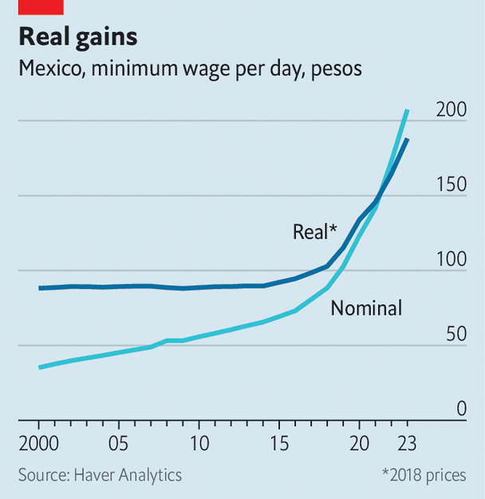image: The Economist
Labour reforms were critical. The minimum wage was stagnant in real terms for years before Mr López Obrador took office. Since then, he has increased it by 90% to 207.45 pesos ($11.97) per day. Although only the 45% of workers who hold formal jobs benefit directly, the increase does drag pay up for others, says Alice Krozer of Colegio de México, a university. The president also cracked down on outsourcing, which firms were abusing to avoid the legal requirement to share profits with their employees. When the law came into force, in April 2021, it stood to benefit the 2.9m workers believed to be in illegal schemes.
Mr López Obrador’s handouts are a second factor. Although his government’s social spending did not exceed that of his predecessor until this year, more money has been spent on the handouts themselves. He managed this by slashing the number of programmes and abolishing Prospera, a lauded cash-transfer programme that was conditional on children attending school and medical appointments, and thus expensive to administer.
That left more money for rural people who plant trees and young people on apprenticeships, his signature programmes. He also brought in a universal old-age pension of 4,800 pesos, paid every two months. That rises to 6,000 pesos from January, as Mr López Obrador ups spending in an election year. All told, the new arrangements reach fewer people, but those in receipt get twice as much cash on average compared to previous schemes.
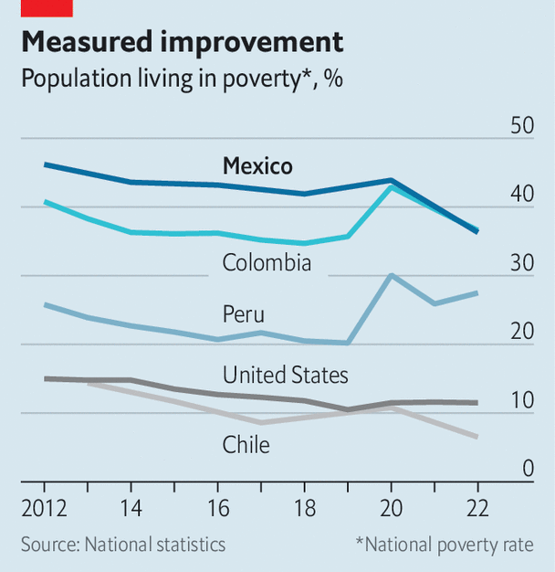image: The Economist
As ever with Mr López Obrador, there is a flip side. Extreme poverty has edged up on his watch. Although the incomes of the most vulnerable went up, their access to health care declined. Mr López Obrador did not follow through on his campaign promise to create a universal health-care system to replace the current formal joblinked programme. But he nonetheless abolished Seguro Popular, an insurance programme for those without formal jobs, hurting the poorest. That left 39% of the population, some 50m people, without health care, up from 16% in 2018. The cost of treatment for illnesses such as cancer pushes many Mexicans into poverty, or stops them escaping it, says Ms Krozer.
Although distributing money more efficiently did let Mexico’s president dole out more cash overall, it also meant that the number of the very poorest households covered by handouts has dropped. Gerardo Esquivel, an economist and former adviser to the president, says Mr López Obrador could have avoided this by using the data from Prospera to target his handouts. Instead, he drew up a list of his own, which was aligned with his political goals.
The poverty rate is likely to drop again in 2024. The economy is recovering, and handouts have been increased, too. But Mr López Obrador’s tools are reaching their limits. The minimum wage cannot keep rising at the current rate. Social programmes are already unaffordable.
In any case the handouts are just a , a plaster, says Manuel Ramírez of Juventudes Manos en Acción, an NGO based in Chiapas, Mexico’s poorest state. Candelaria López Gómez, a 48-year-old from Chiapas, says she would prefer the government to pave roads and pipe in drinking water, so she doesn’t have to buy it in bottles. More and better quality health and education services are needed, too.
Claudia Sheinbaum, Mr López Obrador’s likely successor, will have to raise taxes to afford the increasing cost of handouts (though she claims she will not do so). More to the point, her government needs to quicken Mexico’s economic growth. GDP has expanded at a paltry average of 2% a year over the last four decades. It would also behove the next president to put an end to the clientelistic nature of the handouts on which much of Mr López Obrador’s popularity rests.■
Latin America’s most powerful new gang built a human-trafficking empire
It took advantage of millions of Venezuelan migrants
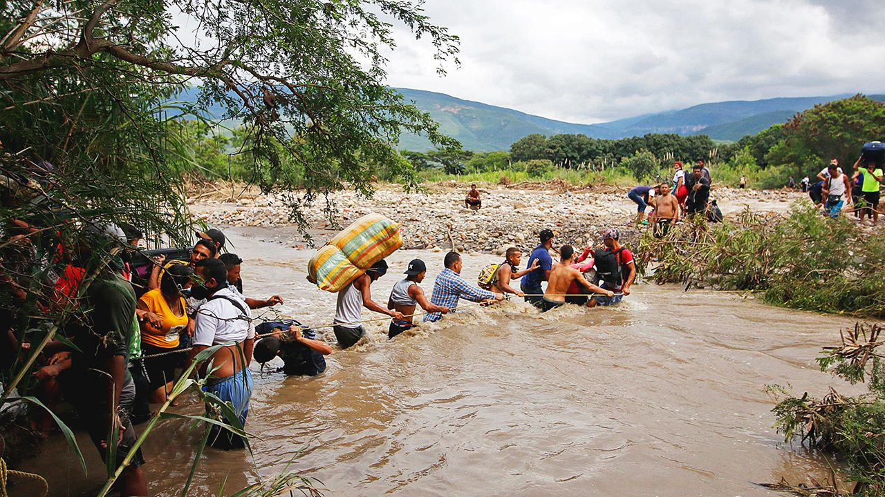
Listen to this story.Enjoy more audio and podcasts on iOS or Android.
By the time Venezuela’s army poured into Tocorón prison, on September 20th, its target had already escaped. For more than a decade Héctor Guerrero Flores, better known as Niño Guerrero, ran Tren de Aragua, the country’s largest gang, from his cell. Mr Guerrero left behind a prison with all the hallmarks of a narco-lair: restaurants and bars, a casino, a baseball ground and a small zoo.
But Tren de Aragua is no drug gang. Its main earner is the movement of people. Mr Guerrero built his empire by exploiting many of the nearly 8m Venezuelans who left the country in the past decade, as hyperinflation and dictatorship took hold. The syndicate has industrialised human trafficking on a scale not seen before in South America, according to a recent report by InSight Crime, a think-tank in Washington, DC. It is active in six countries, with a network that stretches from the Caribbean to the Southern Cone.
image: The Economist
The gang got its start in 2011 after the government handed over the policing of jails to inmates in exchange for a reduction of violence. Mr Guerrero took charge at Tocorón. His first revenue stream was a tax called , charging each prisoner a monthly “stipend”. Upon release, gang members started extorting from shops and jacking cars. By 2018 Tren de Aragua had taken control of illegal crossings at the border with Colombia. With thousands of Venezuelans leaving their country every day, the gang had found a new business.
At first it merely charged smugglers a fee to shepherd their human cargo out of Venezuela. But when the pandemic closed borders in 2020 and those fees shot up, Tren de Aragua saw an opportunity. The gang set up its own smuggling operation, hiring buses, laying on food and booking accommodation. Within months they had bought their own transport companies and hostels, and were soon offering multi-leg, multi-country packages. A few dollars got you a journey into Colombia on foot. For $500 you would be driven across the continent to Chile. To facilitate all this, the gang started taking over border towns and bribing local officials.
Having control enabled the gang to get into a new, more lucrative industry: human trafficking. As clients, migrants only ever paid once, and for a service with big overheads and slim margins. As victims, they could be exploited indefinitely. Realising this, the gang spread into cities and savagely monopolised the sex trade. They murdered local pimps and any sex workers who refused to work for them, dumping dismembered corpses on street corners and spreading videos of the killings on social media. Would-be migrants became a pool of new forced prostitution. Thousands of young Venezuelan women were trafficked to Bogotá, Lima and Santiago. Most were promised jobs abroad. Others were tricked by “boyfriends” they had met online. Once they arrived, the women were told they owed the gang money, and forced to work in brothels and on webcam sites.
Orders came direct from Tocorón, where Mr Guerrero ran Tren de Aragua like a multinational. He vertically integrated by controlling the migrants’ recruitment, transport and sexual exploitation. He dispatched managers to run foreign operations, rotating them to new countries when the police caught on. Those lieutenants were just as enterprising, says Ronna Rísquez, who published a book about Tren de Aragua this year. In Bolivia they chased efficiencies by forcing migrants to smuggle drugs. In Brazil they formed a partnership with First Capital Command, the country’s largest gang.
Neighbourhood thugs were impressed. Many joined Tren de Aragua, opening up a more diverse array of criminal activities, from loan-sharking to phone scams. Through them, Tren de Aragua’s ranks have swelled to 5,000 members, according to Ms Rísquez, making it one of the largest crime outfits in South America today.
The reasons for the army’s invasion of Tocorón are unclear. Tren de Aragua has run amok for years. The gang may have become an embarrassment for Nicolás Maduro, Venezuela’s dictator, souring relations with its neighbours. Negotiations with the United States on the removal of sanctions may be one plausible incentive for a showy clampdown. In the past two months the government has retaken six other criminal-controlled prisons, all without bloodshed.
It is likely that the assault on Tocorón was pre-negotiated, says Humberto Prado of the Venezuela Prisons Observatory, an NGO. “We counted 3,000 prisoners. They said they found 1,500. So where are the other 1,500?,” he asks. There was no shooting during the raid and only one (accidental) death. Inmates said Mr Guerrero and his men had moved out days earlier. Their whereabouts are a mystery.
Mr Guerrero is being hunted by governments across South America, worried that he is hiding out in their country. Wherever he is, the gang leader must diversify fast. Tren de Aragua’s expansion was only possible because of the Venezuelan exodus, the largest in Latin America’s history. A quarter of the population has now left, leaving a smaller pool of emigrants on which the gang can prey. Those still moving are mostly headed to the United States, beyond the extent of the gang’s network. If Mr Guerrero is to survive the loss of his prison headquarters amid a pan-continental crackdown, it may well be with a less spectacular kind of criminality.■
Wage and price inflation is coinciding with an exciting corporate renewal
Listen to this story.Enjoy more audio and podcasts on iOS or Android.
Aoki Masahiko, a prominent Japanese economist, once predicted it would take 30 years for his country’s economy to emerge from the “lost decades” that began in the early 1990s. At that time, an asset bubble burst and the sun set on the model that had helped Japan grow rapidly. Though the country remained rich, it slid into deflation and its growth rate slowed. Aoki reckoned generational change would be necessary for a new model to coalesce. He started the clock at the moment the bubble had definitively burst and the long-time ruling party, the Liberal Democratic Party, first lost power: the year of 1993.
Fast forward to 2023 and Aoki’s words ring prophetic. The world’s third-largest economy is awakening from its decades-long torpor. After years of deflation or low inflation, Japan is seeing its fastest price growth in more than 30 years. Wages, long stagnant, are rising faster than at any time since the 1990s. Both increases are driven largely by global supply shocks. But they are not the only changes afoot. As Aoki predicted, gradual institutional and generational shifts are bearing fruit and changing Japan Inc from within.
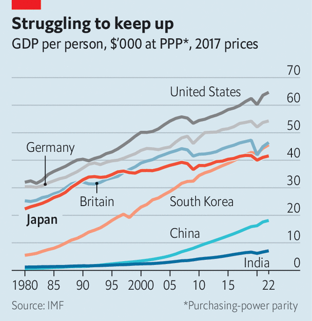Struggling to keep upimage: The Economist
This confluence of external shocks and internal evolution represents a chance for Japan to change its economic trajectory. The country’s share of global GDP in PPP terms has fallen from 9% in 1990 to under 4% today; its GDP per person in PPP terms slid from 81% of America’s level to 64% over the same period (see chart). Goldman Sachs, a bank, projects that Japan will drop out of the top five economies by 2050 and out of the top ten by 2075. A shrinking population limits the upsides to its growth. Even so, if Japan can reset inflation expectations, boost productivity and unleash corporate dynamism, its fall from the top league could perhaps be halted.
Investors are excited. Morgan Stanley, an investment bank, reckons Japan has “convincingly emerged from three decades of economic stagnation”. Warren Buffett has built up large holdings in five Japanese trading houses. Earlier this year, the benchmark Nikkei stock index hit its highest level since the bubble burst. “Japan is undergoing a series of extraordinary economic transformations,” gushed Larry Fink, the CEO of BlackRock, an asset-management firm, while in Tokyo in October.
The past 30 years have seen many false dawns in Japan. There are reasons for scepticism this time, too. Japan’s post-pandemic recovery remains fragile: after growing 4.5% year-on-year in the second quarter, GDP contracted by 2.1% in the third quarter, according to data released on November 15th. Wages have not kept pace with price increases. Consumption is flat. The yen’s depreciation led the International Monetary Fund to project that Japan’s nominal GDP in dollar terms will slip this year from third largest to fourth in the world, behind America, China and Germany.
Servicing Japan’s massive government debt is already a heavy burden. It will become more of one if the Bank of Japan (BoJ) moves away from its ultra-loose policy based on negative interest rates and yield-curve control, as it hints it may do next year. Many firms that rely on interest-free capital would struggle to stay solvent, too.
Japan’s workforce is still shrinking and ageing. Its firms continue to hoard cash. Over 40% of firms listed on Japan’s TOPIX 500 trade below book value, compared with under 5% on America’s S&P 500. Foreign-investor interest has as much to do with Japan’s relative stability and cheap currency as excitement about new growth.
Yet those familiar flaws obscure other developments. In recent decades “the fundamental problem of the Japanese economy was dynamism,” says Hoshi Takeo of the University of Tokyo. Too few new companies were formed, too many old ones hung around, prices barely changed and talent was trapped within firms for life. “Now we’re seeing that begin to change.”
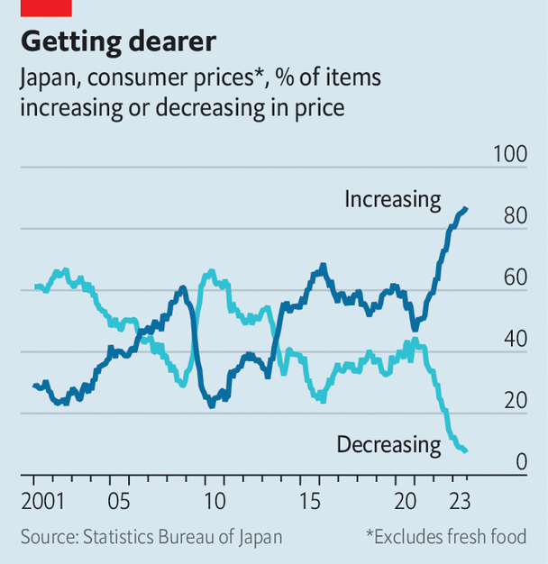Inflating hopesimage: The Economist
Start with prices. Headline annual inflation has been above the BoJ’s 2% target for 18 straight months. Even if much of that is due to higher import costs the psychology of price-setting is changing as a result. Firms have been forced to test the long-held assumption that pushing up prices would mean losing customers. “We came to understand we can raise prices,” says Niinami Takeshi, the CEO of Suntory, a big drinks maker, and the chair of Keizai Doyukai, an influential association of corporate executives. The practice has become widespread: prices for nearly 90% of items monitored by the BoJ are rising (see chart).
Demographic opportunity
Higher inflation has outsized implications for wages, which have stagnated for decades. Inflation of 1% in Japan produces wage growth of just 0.2%, but the sensitivity jumps when inflation exceeds 2%, reckons Ota Tomohiro of Goldman Sachs. Demographic change ought to provide another push. Though Japan’s population started shrinking more than a decade ago, women and old people entering the workforce largely offset the decline. But that trend has slowed in recent years, leaving employers feeling the crunch and needing to entice workers with higher pay. Though wage growth still lags price growth, if next year’s annual wage negotiations produce big gains again, a long-awaited virtuous cycle of price and wage growth would be tantalisingly close.
Geopolitical turbulence, from war in Ukraine to tension between America, Japan’s security provider, and China, its largest trading partner, has also changed the landscape for Japan Inc. A growing number of executives recognise that “we can’t keep the status quo,” says Mr Niinami. As firms prioritise supply-chain resilience and worry about location risk, Japan stands to benefit. Even if manufacturers do not build factories in Japan, they may rely on its factory-automation firms to help build them elsewhere. America once perceived Japan as an economic rival, yet it now wants to see Japan thrive. American officials cheered as IBM, an American tech giant, entered into a joint venture with Japanese counterparts to design chips in Japan.
Japanese firms are poised to put their cash to use. The growth rate for planned capital investments is at its highest level since the BoJ began collecting survey data in 1983. The government is encouraging this trend: big subsidies have gone to the semiconductor industry; the government has pledged to spend 2trn yen ($13.2bn), or 0.3% of GDP, per year for the next decade to fuel the green transition. With defence spending set to rise substantially, officials want to spur defence-industrial-driven innovation of a kind that was formerly taboo.
Corporate-governance reforms that began over a decade ago have become entrenched. Pressure to enhance corporate value and return on equity no longer comes solely from foreign activists—Japanese institutional investors are also pushing. The pressure will increase. The government announced an “asset-doubling plan” that seeks to encourage Japanese savers to invest their cash holdings, with tax incentives set to come into effect next year. The JPX, which oversees the Tokyo Stock Exchange, is another force for change under its new president, Yamaji Hiromi. Beginning next year, the bourse plans to publish a list of firms that meet corporate-governance guidelines. Mr Yamaji says that when CEOs approach him at the golf club to grumble, he answers: “Good luck.”
These shifts have coincided with generational change in Japanese business. The average age of CEOs at firms in the Nikkei stock index has dropped by 12 years in a decade, according to Jesper Koll of Monex Group, a brokerage. Many are moving beyond old mores such as lifetime employment and seniority-based pay. Young Japanese are happy to switch jobs. The best and brightest increasingly join or start new firms. “We should be betting on these groups of people,” says Namba Tomoko, a vice-chair of Keidanren, a business group.
The startup ecosystem is small relative to Japan’s gDP, yet increasingly vibrant. “The old Japan is still there, but in parallel to that a new Japan coexists and grows,” says Kushida Kenji of the Carnegie Endowment for International Peace, an American think-tank. Investment in startups rose from 88bn yen in 2013 to 877bn yen in 2022; the number of Japanese venture-capital funds has quadrupled in that time.
Where many Japanese entrepreneurs were once content to be big in Japan, a new class of founders with global ambitions is rising. Shin Taejun, founder of Gojo, a microfinance firm, wants it to be “the World Bank of the private sector”. Maeda Yosuke, founder of Wota, which builds decentralised water-treatment infrastructure, aspires to “solve the global water crisis”. Rather than inheriting his family’s construction firm, he decided to build his own. “The old industrial structure can’t solve the problems we want to solve,” he says. Okada Nobu, founder of Astroscale, is leading global efforts to clean up debris in outer space. Japan needs new “champions”, Mr Okada says. “We still refer to Sony and Honda—let’s forget about them.”
This new generation also seeks to reshape corporate culture. Many young Japanese want to shed the post-war model based on lifetime employment, male domination and age-based hierarchies, says Takeshita Ryuichiro of Pivot, a media startup that focuses on the new Japan Inc. “Change used to be seen as negative or traitorous,” he says. “But we aim to portray pivot or change as positive.” In just over a year Pivot has racked up over 1m subscribers on YouTube, where it broadcasts interviews with founders, investors and inventors.
Many Japanese executives and policymakers seem not only to understand that Japan stands at a significant juncture; they are determined to make the most of it. “People who know Japan really well ask me, is this time different?” Mr Yamaji says. “My answer is it could be—we should make it be.” The opportunity may not present itself again soon. Unlike the sun, Japan’s chance to rise does not come every day. ■
An election to determine Taiwan’s relations with China just got much closer
Listen to this story.Enjoy more audio and podcasts on iOS or Android.
Taiwan will hold presidential elections in January that could lead to a significant relaxation of the island-state’s defiant posture towards China. That would be a big geopolitical event. And after Taiwan’s main opposition parties announced on November 15th that they had struck an electoral pact, it looked a lot likelier.
Less than ten days before the deadline to register candidates for the election, Hou Yu-ih of the Nationalist Party, or KMT, and Ko Wen-je of the Taiwan People’s Party (TPP) said they would run on a joint ticket. They had not agreed which of them will be its presidential candidate. But as both are far friendlier towards China than the ruling Democratic Progressive Party (dpp), victory for either would bring a big change.
The dpp’s candidate, William Lai, Taiwan’s vice-president, was leading the race in late October with 33% of those polled. By comparison, Mr Ko, a former mayor of Taipei, was on 24% and Mr Hou 22%. (Terry Gou, the billionaire founder of Foxconn and an independent candidate, was polling at 8%.) If the opposition leaders can succeed in pooling their vote-share, they would seem to enter the campaign ahead.
They have not issued a joint policy platform. But both candidates have previously promised to reset cross-strait relations by reopening dialogue with China. The mainland cut off formal talks with Taiwan because the pro-American dpp refuses to affirm that the island-state is part of China. The KMT promises to end the spat by returning to the “1992 consensus”, a vague assertion that there is only one China, with multiple interpretations. Mr Ko says he will not return to the 1992 consensus, which is unpopular in Taiwan. But he has proposed similar formulations, such as: “The two sides of the strait are one family”. He and the KMT both advocate cross-strait exchanges and appeasing rather than resisting (or, in their view, provoking) the Communist Party. This might lower tensions with the mainland. It could also give China much greater influence in Taiwan.
The opposition deal follows months of bickering and haggling between the KMT and TPP. Mr Ko, who is popular among younger voters, had insisted on being the presidential candidate in the event of a deal. But the venerable KMT, which has far more seats in Taiwan’s parliament, was reluctant to yield to the relative parvenu TPP. Under the terms of a deal brokered by Ma Ying-jeou, a former kmt president, the matter will be settled by public opinion. Mr Ma, the KMT and the TPP will each choose a polling expert to review public polls and determine which leader would be the stronger candidate; the decision will be announced on November 18th. Taiwanese commentators disagreed over which candidate this favours.Yet Mr Hou swore to abide by the result: “No matter what the outcome is, whoever gets to be the president and who gets to be deputy, we will work together to make the Republic of China’s land and people safe,” he said.
The opposition parties also pledged to establish Taiwan’s first coalition government. The president would appoint its ministers of defence, mainland affairs and foreign affairs, they said. Other ministers would be chosen separately by the parties based on their relative success in concurrent legislative elections.
Senior Chinese officials have made no secret of their distaste for Mr Lai, who is committed to continuing the policies of President Tsai Ing-wen, his party colleague. They include strengthening ties with America, asserting Taiwan’s sovereignty and hardening the island’s defence. Officials in Beijing recently called the dpp candidate a “Taiwan independence liar” and “hoodlum to the extreme”. In response to the opposition pact, a mainland spokesmanurged Taiwanese to “join hands” with the Chinese and oppose independence.
Whether the opposition candidates can indeed combine their votes is unclear, says Nathan Batto of Academia Sinica, a Taiwanese research institution. Mr Ko’s Gen-Z supporters may balk at his teaming up with the conservative KMT. Some of the KMT’s local factions have seemed reluctant to embrace Mr Ko. The alliance could “explode”, says Mr Batto. But if it holds, the opposition ticket will be formidable. That is good news for the Communist Party. ■
A crop of new distillers is winning fans at home and prizes abroad
Listen to this story.Enjoy more audio and podcasts on iOS or Android.
TWENTY-FIVE thousand barrels of whisky are stacked high at the Paul John Distillery in Goa, treating workers and visitors to the seductive aroma of grain and spirit. Mostly imported Bourbon barrels, the caskets each contain 200 litres of single malt. The drink is made with Indian barley and distilled and aged in conditions most unlike those in foggy Scotland. Goa is a tropical beach paradise on India’s western coast. The whisky, which Paul John has been producing in India since 2008, is nonetheless award-winning and delicious. It is “as good as a Scotch”, pronounces a Dutch visitor to the distillery, Marco Nigholt, a whisky aficionado.
Many Indians like hard liquor. Spirits and the so-called “ready-to-drink” category, which includes things like pre-mixed gin and tonic, account for 40% of the Indian alcoholic-beverage market by volume. Most of that is whisky, reckons Nita Kapoor of the International Spirits and Wines Association of India, an industry body. In fact, most of what passes for whisky in India is nothing of the sort, but rather a molasses-based spirit with whisky-like flavouring, colouring and branding. Yellow-tinted spirits such as Bagpiper and Officers’ Choice are among the country’s most popular tipples. Scotch, by contrast, is subject to a 150% import duty and traditionally reserved for the wealthy.
Yet Indian demand for booze of all kinds is growing with the country’s economy. Already the world’s fifth-biggest alcohol market, India accounted for a third of global growth in the industry in 2021-22, according to International Wine & Spirit Research (IWSR), a market-analysis firm. The industry expects India’s alcohol sales to grow by around 6% a year, not least because half of Indians are under 25, the (often disregarded) legal drinking age in many states. Among premium drinks, consumption of Scottish single malts doubled by volume between 2020 and 2022, according to iWSR. Despite the tiny proportion of Indians who drink Scotch, India is now its biggest export market.
The combination of soaring demand and high import costs has created an opportunity for home-made premium products. The first Indian single malt, Amrut (or “nectar of immortality”), was launched in 2004 and now has several competitors. Paul John’s parent company, John Distilleries, set up its single-malt distillery in Goa in 2008, and began selling its first bottles in India in 2015. It has since won over 300 international awards. Indri, a newer distiller based in the northern state of Haryana, won “double gold best in show” at the Whiskies of the World Awards in America in October. A barman at the Whisky Bar in the Radisson Blu hotel in Bangalore, India’s tech capital, reckons that four out of every ten whisky orders he fields are for Indian brands. None is cheap. Indian single malts sell for as much as, and often more than, imported Scotch.
Three factors are driving the boom. The first, beyond India’s overall growth, is the fact that its services-led model has disproportionately benefited members of the country’s educated middle class. That is manifest not only in booming premium-booze sales but also the high-end bars mushrooming around the country. A second, related reason is that alcohol, long frowned on in polite society, is growing more socially acceptable.
Last, Indians’ growing confidence in their country’s progress is increasing enthusiasm for home-made products. (Some have no choice: as part of India’s “self-reliance” policy, the network of 4,000-odd shops run by the army for service members and veterans has not been allowed to sell imported liquor since 2020.)
Booze firms are gearing up to meet the rising demand. The Paul John distillery plans to double its capacity of 25,000 barrels a year. Global firms, too, are angling for a piece of the action. Last year Diageo, a multinational liquor behemoth, launched its own Indian single malt, Godawan. Sazerac, an American whisky-maker and investor in John Distilleries, has nearly doubled its stake in the firm. Spirits are soaring. ■
The armed opposition is growing more unified. The West should help it.
Listen to this story.Enjoy more audio and podcasts on iOS or Android.
IT DID NOT take long before the world’s gaze drifted from Myanmar after, in February 2021, its army chief, Min Aung Hlaing, carried out a brutal coup. Western hopes for Myanmar’s democratic future had been vested in the figure of Aung San Suu Kyi and her National League for Democracy. When the general threw her and her recently re-elected government into jail, those hopes appeared to be conclusively snuffed out.
To be sure, fugitive members of the elected government promptly formed an administration-in-exile. And, back in Myanmar, even Burmese who had never lifted a gun flocked to join resistance militias known as people’s defence forces (PDFs). Yet for many Myanmar-watchers these efforts seemed too feeble and disparate to promise much. Raggle-taggle bands were surely no match for Myanmar’s powerful armed forces—witness the long struggles of the many ethnic militias scattered around the country’s rugged periphery.
It is time to revise that view. Since late last month Myanmar’s armed forces have suffered astonishing setbacks. On October 27th, in an operation now known as the 1027 offensive, a coalition of ethnic armies, the Three Brotherhood Alliance, launched attacks on the junta and its allies in northern Shan state, bordering China. The alliance has overrun over 100 outposts and seized towns that are key to the regime’s lucrative trade with China. The biggest prize, Laukkai, the administrative centre of the Kokang region, may soon fall to the alliance. Laukkai is the base of notorious Chinese crime kingpins and junta allies who run huge online gambling and internet scams out of the town (much to the annoyance of the Chinese authorities).
These successes are mirrored by opposition fighters elsewhere. In Chin state, in the west, a rebel army has overcome outposts on Myanmar’s mountainous border with India. In Kayin state, in the south-east, the Karen National Liberation Front has attacked the local military headquarters. A new front has also re-opened in Rakhine state. Its main rebel group, the Arakan Army, has been fighting as a member of the Three Brotherhood Alliance way to the north, but has also now breached a ceasefire to resume attacks on the Burmese army in Rakhine.
These ethnic armies appear to be thinking strategically and acting in concert. Several have also made common cause with the PDFs, whom they both train and involve in their campaigns. The armed opposition is looking less raggle-taggle; the Burmese armed forces appear overstretched and demoralised. With little in reserve, they may conceivably not have the strength to recover.
The junta has only itself to blame for the concerted nature of this assault. Since the coup it has helped bring violence to 315 of the country’s 330 townships, calculates Shona Loong of the International Institute for Strategic Studies (IISS), a think-tank in Singapore. For the first time since independence in 1948, even the majority-Bamar (and Buddhist) heartlands from which the army is largely recruited have risen in revolt against it. Hatred of the armed forces is evident across the country. Rising numbers of army conscripts are defecting or surrendering to the militias.
Repelled by the junta’s violence, Myanmar appears to be uniting in opposition. A new and diverse generation of leaders is coming together to “break with past social and political patterns”, as Priscilla Clapp of the United States Institute for Peace, a think-tank, writes. Huge numbers of Burmese, across ethnic divisions, want to stake out a more inclusive, federal future—or at least one not governed by their bullying generals.
It is high time the Western powers re-engaged with Myanmar’s struggle. In a forthcoming book for the IISS, “New Answers to Old Questions”, Aaron Connelly and Ms Loong argue that the mistaken Western hopes pinned on the often illiberal and controlling Ms Suu Kyi are now more likely to be realised by the new emerging leaders. The West should help and encourage them. Even if supplying arms to the Burmese opposition is out of the question, providing it with satellite internet access would help both its operations and delivery of humanitarian aid to non-junta areas.
Meanwhile, the West’s near-absence in back-channel diplomacy is leaving the field open to outside powers, including China, which care little about democracy and rights. Much is at stake in Myanmar, and not only for its 50m inhabitants. Democracy is also on the line. The West should come to its aid. ■
Joe Biden and Xi Jinping rediscover the joy of talking. Good
Military contacts between America and China resume. Will they last?
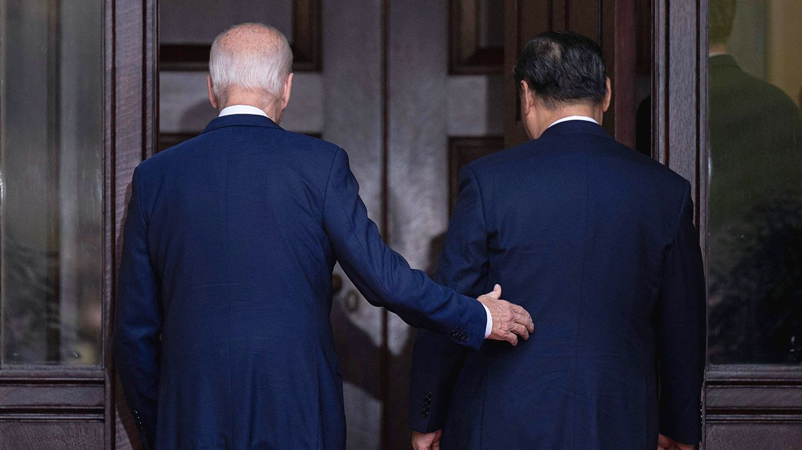
Listen to this story.Enjoy more audio and podcasts on iOS or Android.
For months China has accused America of trying to contain its economy and encircle its territory. But in November the Communist Party’s propaganda changed tune: instead of denouncing this “new cold war”, it hailed America’s and China’s shared history of fighting Japan in the second world war, highlighting the role of American volunteer fighter pilots known as the “Flying Tigers”. State media also recalled Xi Jinping’s fondness for a couple that hosted him in rural Iowa in 1985.
Mr Xi, China’s leader, brought that spirit of detente to San Francisco for the summit of the Asia-Pacific Economic Co-operation (apec), hosted by President Joe Biden. The two leaders spoke for four hours at a country house outside the city, only their second in-person meeting as leaders of the world’s two biggest powers.
Both emphasised the fact that they have known each other for more than a decade, since they were both vice-presidents. But they disagreed on many things, not least the nature of their countries’ relationship. Mr Biden said they had to “ensure that competition does not veer into conflict”; Mr Xi warned against the very notion of a contest, saying “major-country competition is not the prevailing trend of current times”. Earth, he added, “is big enough for the two countries to succeed”.
Welcoming “some of the most constructive and productive discussions we’ve had”, Mr Biden made some modest announcements: the restoration of direct contacts between their armed forces; efforts to curb the supply of precursor chemicals to make fentanyl, a synthetic opioid; and future discussions on the dangers of artificial intelligence (ai).
Perhaps the best that can be said for the meeting is that it took place at all. It promises to rekindle the habit of talking ahead of a turbulent year, with presidential elections in Taiwan and America. The meeting may have succeeded where the last one failed, in putting “a floor” under the rivalry, though the test will come only with the next crisis. The previous effort, launched on the margins of the G20 summit in Bali last year, was blown off course by the appearance of a Chinese spy balloon over America that Mr Biden ordered shot down in February.
The leaders agreed to keep open lines of communication, Mr Biden said, promising that if “either one of us have any concern…we should pick up the phone and call one another and we’ll take the call.” This will reassure Asian countries that dread being sucked into the Sino-American rivalry or, worse, a war over Taiwan.
The status of the self-governing island, which China claims as its territory, is acutely sensitive for China’s leaders. Mr Xi told Mr Biden that Taiwan was the “most potentially dangerous issue in US-China relations”, a senior American official recounted. Mr Biden did not repeat his past off-the-cuff promises to defend Taiwan if it was attacked. But nor did he offer China new reassuring words about America’s opposition to Taiwanese independence. America, he said, has a “one-China policy” and “I’m not going to change that”.
American officials have argued that Mr Biden was meeting Mr Xi from a position of strength, having overseen a strong economic recovery, investments in green technology and semiconductors, and the strengthening of America’s alliances and partnerships in Asia. In contrast, China’s economy has “real problems”, Mr Biden told donors on the eve of the summit. Indeed, Mr Xi sounded downcast, declaring: “The global economy is recovering, but its momentum remains sluggish.”
Yet hamstrung by domestic politics and his own protectionism, Mr Biden struggles to present Asian countries an attractive counter-offer to China’s economic enticements. Ahead of the apec summit, his administration abandoned plans to unveil a digital-trade deal under his Indo-Pacific Economic Framework (ipef), the already thin economic pillar of America’s Asia strategy. ipef is regarded as a poor substitute for the Trans-Pacific Partnership, a trade deal signed by Barack Obama in 2016 and ditched by Donald Trump in 2017. The framework does not offer improved market access, but its trade element was intended to promote open data flows akin to those between the United States, Mexico and Canada. Mr Biden has retreated under pressure from Democrats who oppose freer trade or want tighter regulation of big tech.
The resumption of high-level military contacts, not only between theatre commanders but also between policymakers, is welcome. Whether they help to reduce dangerously close encounters between American and Chinese forces, in the air and at sea, is to be seen. The sides also resolved to pursue talks “to address the risks of advanced ai systems”, but there was no hint of a previously reported agreement to restrict ai in autonomous weapons and nuclear command-and-control systems.
Before the two presidents met, the State Department announced that America and China—the world’s biggest emitters of greenhouse gases—had agreed to pursue efforts to triple renewable-energy capacity globally by 2030. Perhaps the most emotionally resonant deal was the Chinese promise to help curb the export of chemicals to make fentanyl and pill presses to make tablets. Fentanyl is claiming the lives of about 70,000 Americans a year; Mr Biden said he personally knew people who had lost children to the drug.
The leaders also spent time talking about regional crises, with Mr Biden urging China to help restrain both Russia’s war in Ukraine and Iran’s support for Hamas and other allied militias in the Middle East. They may not have agreed on much. But the long Biden-Xi encounter highlighted a notable absence from the apec summit: Vladimir Putin. He will not be pleased by the sight of his greatest rival and his most important friend discussing Russia over his head. That in itself may count as a win for Mr Biden. ■
They want to spend on pets and sports, not makeup or perfume
Listen to this story.Enjoy more audio and podcasts on iOS or Android.
Five years ago Jack Ma, the founder of e-commerce giant Alibaba, briefly tried his hand at selling lipstick. To promote China’s largest online shopping festival, called “Singles’ Day”, Mr Ma attempted to sell more lipstick in five minutes than Li Jiaqi, a live-streaming salesman known as the “Lipstick King”. The king won.
Five years on, Mr Li’s crown has slipped a little. In September he lost his cool with an online commenter who questioned the price of an eyebrow pencil he was showcasing. “How is it expensive? It has been this price for years,” Mr Li asked incredulously. “Maybe you should look at yourself. Has your pay risen? Have you been working hard in these years?”
Mr Li, who later apologised, had touched a nerve. He had also touched on one of China’s deeper economic difficulties. It is hard for firms to increase prices when wage growth is weak.
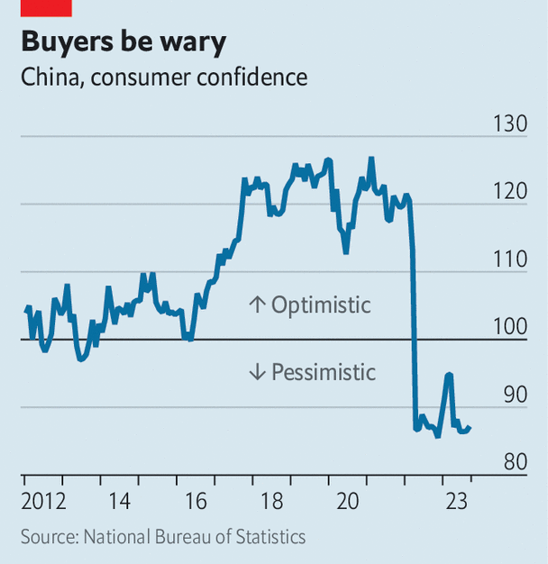image: The Economist
Although the unemployment rate in China’s cities is only 5%, many households are not optimistic about their pay or their job prospects. According to the latest central-bank survey, more people expect their income to fall in the near future than to rise. Consumer confidence collapsed during the pandemic-related lockdowns of 2022. It has yet to recover (see chart).
The gloom is making customers picky and cost-conscious. In October China slipped into deflation, with consumer prices falling by 0.2% compared with a year earlier. People are not squandering money by redefining their eyebrows. During the Singles’ Day festival—which now runs from late October to November 11th—spending on makeup and fragrance fell by 5.6%, according to Syntun, a data firm.
The e-commerce platforms did their best during the festival to appease, not insult, the price sensitivity of their customers. Pinduoduo offered merchants on its platform extensive subsidies to help them provide discounts to consumers. JD.com, the closest rival to Alibaba, promised to compensate customers if they found a cheaper price for a product within 30 days of buying it. Consumers are also becoming ruthlessly strategic. Some shoppers add a luxury item to their purchases so they can meet the minimum spending threshold for a discount on their bill. They then return the luxury item and keep the rest.
These marketing gambits have, it appears, boosted the volume of sales more than the value. The number of parcels delivered from November 1st to 11th rose by 23% year on year, according to the State Post Bureau. But the amount of spending on e-commerce platforms rose by less than 10%, according to most analysts.
Spending is not universally weak. According to official figures released on November 15th, retail sales (both online and off) rose by 7.6% in October compared with a year earlier. That was faster than expected. Spending on restaurants, cars and phones made big contributions. Huawei’s sales grew by 83%, according to Counterpoint, a research firm. That was thanks in large part to Huawei’s new Mate 60 phones, which boast chips made in China.
The fastest-growing retail category was sports and entertainment products. Sales rose by nearly 30% compared with a year earlier. Lululemon, a maker of athletic wear, reported that its second-quarter revenue in greater China (including Taiwan) grew by 61% year on year. China also became the biggest market for Brompton, the British folding bike. “People are willing to concentrate their budget on something which can actually make them feel happy,” says Chen Luo of Bank of America.
Chinese consumers are not only investing in themselves. Spending on pet foods during this year’s festival increased by almost 30%, according to Syntun. Young people who cannot imagine supporting a child instead lavish attention on their cats and dogs. This affection extends beyond food to fashion and gadgets. Mr Luo cites the example of “smart” cat litters, which help to remove bad smells.
Pets can also be used to market other items. In 2016 Mr Li became the owner of a fluffy Bichon Frisé, which he called “Never”. Together with her pups and grand-pups she has her own collective brand, “Never’s Family”. But not everyone has been won over by Mr Li’s pets—or his tearful apology. For Halloween this year, at least one person dressed up as the Lipstick King, wearing a black top emblazoned with the question: How is it expensive? ■
Listen to this story.Enjoy more audio and podcasts on iOS or Android.
One hopes Gui Youguang, a 16th-century Chinese bureaucrat, knew how to enjoy success in the moment. By the standards of the time, he was old when he passed the Ming dynasty’s most exacting grade of test for mandarins, after decades of failed attempts. Alas, not long after securing a degree at 59, Gui died.
The rigours of imperial China’s civil-service examination system—the , used to select scholar-officials for over 1,300 years—are described in a new book by Yasheng Huang called “The Rise and Fall of the EAST: How Exams, Autocracy, Stability, and Technology Brought China Success, and Why They Might Lead to Its Decline”. Arguing that the exams stifled innovation in ancient times, Professor Huang sees lessons for Xi Jinping’s China.
The became more doctrinaire over time. First instituted in 587, the exams progressively shed such subjects as mathematics and astronomy. Soon, they only tested candidates’ mastery of dense Confucian texts filled with injunctions to revere fathers, officials and monarchs. The curriculum narrowed again in the 14th century, requiring candidates to memorise ultra-conservative commentaries on Confucian classics. The commentaries advocated unquestioning obedience towards rulers. A final refinement was added during the Ming dynasty: answers had to follow a rigidly scripted format, the “eight-legged essay”, described as “the greatest destroyer of human talent” by Ch’ien Mu, a historian.
The system was a blessing and a curse, the book suggests. At a time when Europeans were recommended for public office by well-connected relations or patrons, the offered diligent commoners a path to advancement (women could not take the exams). Most tests were taken anonymously, enhancing public confidence in them. Corrupt examiners, when unmasked, faced execution or exile. By the time of the Ming dynasty (1368-1644), qualifying tests for the attracted millions of candidates, helping to explain high levels of (male) literacy. With such a large pool of aspiring scholar-officials, serving mandarins knew that they were replaceable, and thus vulnerable. Few dared to start palace coups.
Yet stability came at a cost, argues Professor Huang. Gui Youguang stands out for doggedness. But a dataset of 11,706 Ming-era candidates shows that exam-takers who reached the third and final stage of the got therein middle age, on average. Millions sat the exams and never passed. This focus on bureaucratic glory crowded out other paths to social mobility. It was handy for autocrats, as test preparation left scholars “no time for rebellious ideas or deeds”, the book argues. The ’s Confucian values promoted conformity of thought and disdain for commerce. Over time, the exams smothered the scientific curiosity that saw ancient China develop many technologies before the West, including the compass, gunpowder, movable-type printing and paper, known in China as the country’s “four great inventions”.
The was scrapped in 1905, but its legacylives on today, in civil-service tests and in the fearsome , the college-entrance examination which rewards relentless toil. In the book’s telling, the curse of the spirit was broken once in China’s history, when Communist Party leaders embraced market-based reforms after the disasters of Maoism and central planning (and revived the , abandoned during the Cultural Revolution). During that reform era, lasting for 40 years after 1978, the book credits the party with successfully balancing stability, economic growth and technological progress. As in imperial times, a strong state overshadowed a weak society. But the reform-era party also praised private entrepreneurs and allowed policy experiments by regional governments. To harness the world’s dynamism, officials sought out foreign capital and international academic exchanges.
Then, in 2018, Mr Xi abolished the only term limits that constrained him as leader. His China is increasingly autocratic, statist and inward-looking. Private businesses endure more meddling by party cadres, and youth unemployment is high. In a flight to safety, almost 2.6m people applied to sit civil-service exams this year, chasing 37,100 posts. Too often, in public institutions that once boasted of being meritocratic, “merit” means fealty to one man. Officials and university students must devote ever more hours to studying Xi Jinping Thought and other dogma.
Outsiders wonder how ordinary Chinese can bear this more controlling age. One answer is that, to some at least, equality of opportunity matters more than the pursuit of diverse, individual dreams. A good place to hear such views is the Imperial Examination Museum of China in the eastern city of Nanjing. Its white-walled, grey-roofed courtyards are surrounded by statues of prize-winning test-takers from history. Civil-service exams are China’s “fifth great invention”, signs declare. On this site in imperial times, 20,000 candidates took exams alone in tiny brick cells.
Suffering can be endured, but not unfairness
Chaguan met Ms Xing, a medical student, praying at the God of Examinations pavilion in the museum grounds. Yes, China teaches to the test and maybe that limits innovation, she ventured. But China is unequal, with very rich and very poor regions. In such a country, collective interests trump the “personal development” that is important to foreigners, she suggested. “Just as in ancient times, people are equal when they are in the same exam.”
Inside the museum a young doctor, Ms Wang, pointed at a rowdy school group. In Western countries teachers can foster individual creativity, she said. “We have to stick to the tests, and we have no way to do tailored education.” The poor, including her former classmates from rural Henan, can change their destinies only with books and exams, she says. The party knows to take that sort of stubborn, unflashy ambition seriously. Bold talk of delivering a prosperous, high-tech China for all may have to wait, as the economy slows. But in these hard times, guaranteeing a fair shot for the diligent is one promise that rulers can ill afford to break. ■
But a dire humanitarian situation in the south is getting worse
Listen to this story.Enjoy more audio and podcasts on iOS or Android.
A CITY which, six weeks ago, was home to nearly 1m people is now a hollow shell. When was invited on November 14th to join an Israeli military-supply convoy to al-Shati, a once-cramped refugee camp in northern Gaza, none of its 90,000 residents was there. Many of the camp’s dense apartment buildings had been destroyed; others were badly damaged. Armoured columns of the Israel Defence Forces (IDF) had torn up roads. Electricity, water and sewage infrastructure no longer exist. The situation is similar in much of Gaza city and in outlying towns.
After six weeks of war and three weeks of ground fighting, Israel now has effective control of the area north of Wadi Gaza, a riverbed that bisects the 45km-long strip (see map). The devastation heralds the end of one phase of Israel’s war against Hamas, which began on October 7th after the Palestinian Islamist group carried out a massacre that ended with around 1,400 Israelis killed or kidnapped. Weeks of Israeli action have killed more than 11,000 Palestinians in Gaza. They have also, in effect dislodged Hamas from power, at least in the north of the enclave: the group that has controlled Gaza since 2007 is now scattered and reeling.
All this raises two important questions. First, and most pressing, is how to alleviate a humanitarian disaster in southern Gaza. Almost all of the territory’s 2.2m people are now kettled in the south. A total siege imposed by Israel on its border crossings to Gaza, and the anaemic flow of aid across Gaza’s border with Egypt, have left Gazans desperately short of food and water. Fuel shortages have crippled hospitals and aid agencies. And winter has arrived, bringing cold temperatures and rain that will further add to the misery.
Second is what happens next on the battlefield. It is not just civilians who fled to southern Gaza: some of Hamas’s fighters no doubt did the same. Israel has yet to find the group’s leader in Gaza, Yahya Sinwar, or its military chief, Muhammad Deif, both of whom are thought to be hiding in the maze of tunnels beneath the enclave. Israeli troops will spend the coming weeks blowing up the entrances to those tunnels and scouring the north for arms and militants. At some point, though, Israel will have to turn its attention to the south. How much it will be able to do there will depend on domestic politics and diplomatic pressure.
image: The Economist
In recent days attention has been focused on al-Shifa hospital, the largest in Gaza, and other such facilities. Israel says Hamas has an underground headquarters beneath al-Shifa. It also believes that some of its 239 hostages were hidden there, at least temporarily. On November 15th, after encircling it for six days, Israeli troops entered the hospital compound.
The situation was still unfolding as went to press, but initial reports suggest the IDF found neither the leadership of Hamas nor any of the hostages. Most of the 60,000 or so Palestinians who had been sheltering at the hospital in the early days of the war had also vanished. When Israeli troops entered, only 1,500 or so people remained, a mix of medical staff, patients and displaced people.
Most fled south—as did everyone else. Once home to more than half of Gaza’s population, the north is now a deserted wasteland. The Israeli troops in al-Shati report only a few encounters with small groups of civilians. There are no accurate figures for how many people remain, clustered around hospitals and relief centres. Israeli and foreign sources believe they number only in the tens of thousands.
The population of southern Gaza has doubled over the past month, an increase that would strain basic services even without a near-total blockade of the enclave. An estimated 1.5m people have been forced from their homes, mostly from the north but also from the south.
Since October 21st, when Israel consented to allow in aid deliveries via Egypt, around 1,200 trucks have brought food, medicine and other essentials through the Rafah crossing (before the war, around 500 entered Gaza each day). Many people in the south are skipping meals and struggling to find clean water. With shipments of fuel almost totally prohibited by Israel, some Palestinians have taken to burning furniture as firewood to cook.
The lack of fuel has paralysed basic services. Almost two-thirds of health-care facilities have stopped working. Sewage-pumping stations are offline. The International Rescue Committee says that waterborne diseases like cholera and typhoid will inevitably start to spread. On November 14th the un said that aid deliveries would soon cease; it lacked enough fuel even to operate forklifts.
The next day a tanker with 23,000 litres of diesel entered Gaza from Egypt, the first such shipment Israel has allowed since the war began. That was better than nothing—but barely. Israeli restrictions mean the fuel can be used only by the UN, not by hospitals, where generators have run dry. Tom White, the director of the UN aid agency in Gaza, says the delivery covered just 9% of his organisation’s daily needs.
Heavy winter rains have also arrived. Some Palestinians found their tents had collapsed during a downpour on November 14th; others are sleeping in the mud. December and January are reliably cold and wet in Gaza, with night-time temperatures dipping to 8°C.
Before the war began, around two-thirds of the trucks entering Gaza went through Kerem Shalom, a crossing with Israel. It has been closed since October 7th. There is little support in Israel for helping Gazans after Hamas’s atrocities, and the far-right parties in Binyamin Netanyahu’s government are adamantly opposed to it.
So supplies must take a circuitous route through Egypt. They arrive in its North Sinai province. Then they are trucked to an Israeli border crossing, to be inspected for arms, and then back to Rafah. The detour adds 100km to the journey, and Rafah is open for only a few hours each day. “Relief organisations find it very difficult to operate in Egypt, which is why they have usually done so in Israel, where the distances are shorter and procedures used to be more efficient,” says Tania Hari, the director of Gisha, an Israeli ngo that lobbies for more access to Gaza. “Kerem Shalom has to be reopened for Gazans to survive.”
The next step
Whether to do that is one question for Israel as it decides how to proceed with its war. Accompanied by tanks, sniffer dogs and demolition squads, soldiers have spent over two weeks going from house to house, searching for weapons and shafts leading to Hamas’s tunnels. An officer explains the methodical procedure. Suspect buildings are targeted with tanks or air strikes. Then, along with the dogs and sappers, soldiers conduct inspections. They are not allowed to venture into the tunnels. More shafts are constantly being found.
Weapons and explosives left behind in houses indicate that Hamas fighters left in a hurry. It is unclear where they have gone. Some may be trying to survive in what is left of the tunnels. Others may have fled south or retreated to the very centre of the city. “We deal with about 90 or 100 buildings a day,” says Lieutenant Commander Oz, a battalion commander. Dozens of battalions are on similar missions in and around Gaza city.
Israeli generals know that they will not be able to act in southern Gaza with the same ferocity as in the north. Instead, they are planning a “more mobile” offensive. But any operation will probably hamper relief efforts and cause an international outcry, which is already mounting. At a summit in Saudi Arabia this month Arab and Muslim countries demanded an end to the fighting.
Some Western leaders have begun to echo that demand. Emmanuel Macron, the French president, called for a ceasefire in an interview with the BBC. Joe Biden still rejects a permanent truce, though he is under pressure from some in his party to push for a ceasefire. Talks are taking place about a pause in the fighting in exchange for the release of some of the hostages.
A less brutal war could ease that pressure. The Palestinian death toll shot up by hundreds each day during the first weeks of the war. In recent days, though, the casualty rate has decreased significantly, as there is almost no one left in the north. That could buy Israel more time to continue its ground campaign. So would a greatly expanded humanitarian effort.
Israel must also consider what comes next in Gaza, something Mr Netanyahu has so far refused to do. For now, Hamas has lost its ability to rule. It may also have lost the support of the people it once governed. “[Gazans] blame Hamas for bringing this tragedy upon them,” says an Israeli intelligence officer accompanying troops inside the strip. That is what one would expect the IDF to say—but it rings true.
Even before the war, it was difficult to gauge public opinion in Gaza: Hamas ruled as an authoritarian one-party state, and the last Palestinian parliamentary elections were in 2006. It is even harder now. Anecdotal evidence, though, suggests that many people in Gaza are furious at their ostensible rulers. Reached by phone in southern Gaza in recent days, numerous Palestinians described scenes of anger aimed at Hamas. Policemen have been cursed and beaten while trying to jump queues for food and water.
That is not to say desperate Gazans feel any warmth for Israel. Hamas was born in Gaza; its most influential leaders, Mr Sinwar and Mr Deif, grew up in the refugee camp near Khan Younis, the city that now hosts untold Gazans displaced from the north. Israel may have dealt the group a fatal blow. But a long period of miserable displacement would ensure that something else rises in its stead. ■
Many Arab governments would like to see Hamas gone
And they worry that the war in Gaza will upset their economic plans
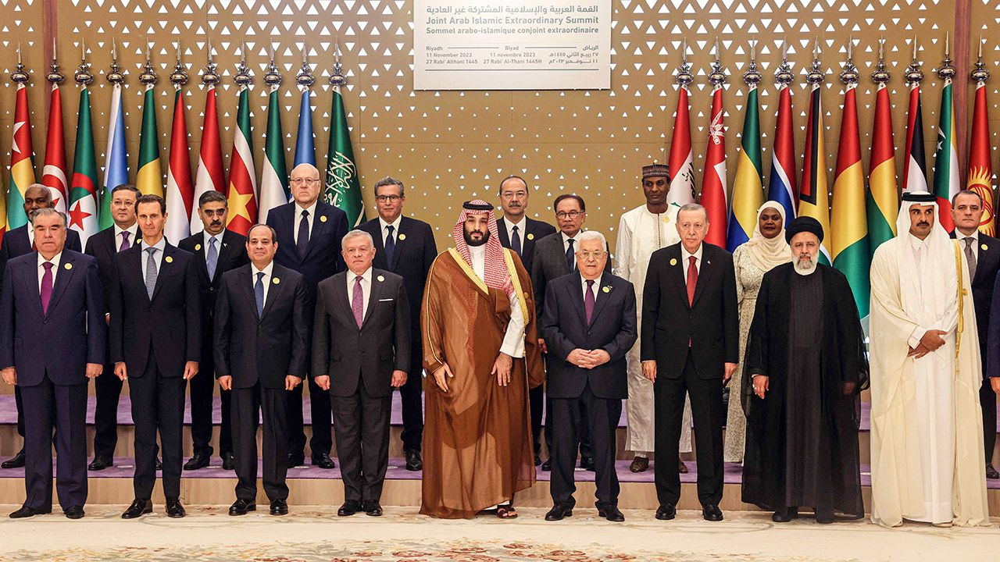
Listen to this story.Enjoy more audio and podcasts on iOS or Android.
THEY all want the war to end. And they all want someone else to end it. That was the message, at once banal and controversial, from the leaders of the 22-member Arab League and the Organisation of Islamic Co-operation (OIC), a grouping of 57 mostly Muslim-majority states. It was all to show from an extraordinary summit on November 11th in Riyadh, the Saudi capital.
The meeting came more than a month into a Gaza war that remains a fixture on television screens and in conversations across the Middle East. The plight of the Palestinians captures Arab attention and inflames emotion in a way that the plight of Sudanese or Yemenis or Syrians does not. The joint summit ended with a sharp statement reflecting that anger: it called for an immediate ceasefire, implored member-states to “break the siege on Gaza” and urged an arms embargo on Israel.
It would be easy to dismiss the gathering as a talking-shop, which the Arab League often is. Several leaders denounced the West’s double standards when it comes to Palestinians. Fair enough. Yet they did so at a summit where Bashar al-Assad, one of this century’s worst war criminals, was invited to pontificate about Israeli war crimes: their own bit of hypocrisy. Parts of the final communiqué were similarly ironic. Far from breaking Gaza’s siege, Egypt has helped maintain it for almost two decades. No one in the OIC sells weapons to Israel—though some member-states do buy them from Israel.
Read between the lines, though, and the summit was revealing. Deep contradictions sit beside the regional reaction to the war. Many Gulf states, for example, would like Israel to get rid of Hamas, even as they fear that doing so will awaken extremism in their own countries. They want to see Iran’s “axis of resistance” of proxy militias wounded, but worry about being caught in the crossfire. For several years they have promoted the narrative of a new Middle East, focused on economics rather than ideology. They fret that a long war in Gaza will upset such plans.
Ebrahim Raisi, Iran’s hawkish president, spoke for almost 40 minutes at the summit; beneath his clerical robe he wore a , the headscarf that is a symbol of Palestinian identity. At one point he urged Muslim countries to send weapons to the Palestinians. That suggestion was politely ignored. Several other participants urged diplomatic and economic sanctions on Israel but those, too, were swatted away.
A few Arab countries have recalled their ambassadors to Israel, but those with diplomatic ties are unwilling to sever them. They have also ruled out using oil as a weapon, as they did in 1973, when OPEC imposed an embargo on countries that supported Israel during the Yom Kippur war. “That is not on the table today,” said Khalid al-Falih, the Saudi investment minister, at another conference earlier this month. The Saudis need many years of stable oil revenue to finance their plans for economic diversification. The last thing they want to do is force an embargo that would spur Western countries to accelerate their transition away from oil.
The outcome of the summit was divisive. Some Arabs were pleased with the tough rhetoric; others complained that their governments are too passive about the war. Take away military threats or economic sanctions, and all that is left is tough talk.
Everyone is acting out of self-interest. The Saudis decided to go ahead with Riyadh Season, an annual festival that is part of Muhammad bin Salman’s plan to loosen the kingdom’s cultural strictures. That has brought them a heap of criticism: the crown prince wants people in Riyadh to have fun while people in Gaza are dying. Such condemnation rankles with the Saudis, who feel that they are being singled out, as if they alone are partying while the rest of the region mourns.
Yet much of the region is trying to act as if it is business as usual. Even Iran has so far allowed a measure of pragmatism to restrain its actions. Though its militias have carried out regular attacks on Israeli and American targets, it has decided not to waste Hizbullah, the Lebanese Shia group that is its most powerful proxy, on an all-out battle to support the Palestinians. On the sidelines of the summit Prince Muhammad held talks with Mr Raisi, their first face-to-face meeting and the first visit to the kingdom by an Iranian president since 2012. It was a sign that the detente they struck in March still stands. No one wants a regional war—at least not now.
In the long run, though, the events of the past six weeks are a reminder that the Middle East’s recent calm is fragile. The region is still at a crossroads between endless conflict and ending its conflicts, and the Gaza war has only sharpened the choice. “If the peace camp fails, it is only a matter of time” before a wider war comes, says Mohammed Alyahya, a Saudi fellow at the Belfer Centre at Harvard University. But for it to succeed, Israel would have to make concessions. That may seem far-fetched. Although nothing would undermine Iran and its proxies more than a peace deal with the Palestinians, a right-wing Israeli government and a discredited Palestinian one do not seem poised to revive the moribund peace process.
However peace talks are the best hope other Arab states can muster. America has pushed them to commit to a multinational force to secure Gaza after the war. At a press conference after the Riyadh summit an exasperated Faisal bin Farhan, the Saudi foreign minister, told reporters to stop asking him about plans for a post-war Gaza. “The only future, and this is the unifying position of the Arab [world], is an immediate ceasefire,” he said. The longer the war drags on, Arab diplomats argue, the harder it will be to imagine what comes next. ■
Listen to this story.Enjoy more audio and podcasts on iOS or Android.
A distracted world has paid little attention to Sudan since war broke out in Africa’s third-largest country in April. The West is focused on Ukraine’s counter-offensive, China’s war games and the war in Gaza. African leaders, preoccupied by their own domestic problems, have shown all the urgency of a camel crossing the Sahara.
The consequences of neglect are becoming starker. The conflict between erstwhile bedfellows—the Rapid Support Forces (RSF), a paramilitary group, and the Sudanese Armed Forces (SAF), the regular army—is destroying the state they seized together in 2021, in a coup aimed at preventing a transition to democratic government. The IMF forecasts that Sudan’s economy will shrink by nearly a fifth this year. The war is deepening geopolitical rivalries in north-east Africa and the Persian Gulf.
Sudan has the world’s largest number of internal refugees. About 6.3m have been displaced since April alone, adding to the 3.7m Sudanese who had already fled their homes in previous conflicts and the 1.1m foreigners who had taken refuge in Sudan. Some 1.4m Sudanese have fled to neighbouring countries since the war began. Aid agencies say that more than 6m people are “one step away from famine”. Two decades after ethnic cleansing in Darfur, a region in the west of the country about twice the size of Britain, there is again credible evidence of genocide—by the RSF, which metastasised from the Janjaweed militia that slaughtered black Africans in the 2000s.
And things could soon get worse. In recent weeks the RSF has chalked up several major victories. Military analysts suggest it could try to take the rest of the country. Conflict monitors fear more genocidal violence. For those paying attention, the stakes are only getting higher.
When war broke out, many foresaw stalemate. Yet today the RSF is winning. In August, in a sign of the RSF’s tightening grip on Khartoum, General Abdel Fattah al-Burhan, the SAF’s head, fled from his army headquarters in the capital. “Khartoum is not the capital city any more,” says Entisar Abdelsadig of Search for Common Ground, an international NGO based in Washington and Brussels. There is heavy fighting within the city. The RSF is reported to be close to capturing the army’s remaining positions in the capital.
image: The Economist
Though the SAF controls most of the agricultural lands in the east and the oil terminal in Port Sudan on the Red Sea, the RSF has the gold mines in the west and control over the borders with Chad and the Central African Republic (CAR). It is extending its control of the oil pipeline from South Sudan, on which Sudan’s government depends for transit fees. In recent weeks the RSF has been sighted in White Nile and Gezira states, historically two of the army’s strongholds (see map).
The RSF’s gains have been most dramatic in Darfur. Since the end of the rainy season about a month ago it has taken three of the region’s five main cities. Major military bases have been captured by the group or deserted by SAF soldiers.
In October the RSF took Nyala, Sudan’s second-largest city and a staging post for arms from the CAR. SAF defences collapsed after a pitched battle with a force led by Abdelrahim Hamdan Dagalo, the brother and deputy of the RSF’s commander, Muhammad Hamdan Dagalo (better known as Hemedti). Three days of looting ensued. Salah al-Din Limouni, a lawyer in Nyala, says much of the city has been laid to waste. Residents are without electricity and water supplies are disrupted.
In early November a renewed assault by the RSF brought the fall of a SAF garrison in the town of Ardamata, some 10km to the north of el-Geneina, the capital of west Darfur state. The attacks by the RSF’s new armed drones, which made short work of the army’s heavy artillery, followed clashes earlier in the war that had forced the SAF to retreat to its base.
Mass murder
Not for the first time, in the days that followed the RSF and allied Arab militias carried out a vicious campaign of killings against the local Masalit people, a black African ethnic group. Men were separated from women, rounded up and shot. Tribal leaders were arrested or assassinated. Videos show young men crawling on all fours as soldiers beat and whip them; some show bodies scattered on the streets. UN officials estimate that at least 800 people were killed; local monitors put the toll as high as 1,300. These attacks follow earlier systematic massacres in el-Geneina, peaking in June, that coincided with a mass exodus of refugees to Chad. The UN is investigating more than a dozen mass graves. The RSF denies any involvement in attacks on civilians and said it is “firmly against any abuses or violations against any person”.
Zakia Zakaria Alsafi, a local journalist, says that the paramilitary troops headed to Adarmata after the army base had fallen, preventing Masalit men from leaving and “searching for people by name to be killed”. She says she saw 25 civilians being lined up and shot. Hafez Idris, a lawyer in Ardamata, says that at night the RSF has been burying the corpses that litter the street. “There are piles of bodies which are visible from outer space,” says Nathaniel Raymond, a conflict monitor at Yale University.
The RSF is at the gates of el-Fasher, North Darfur’s capital. Some of its troops are on the north side, terrifying locals and looting homes. All the while, a much larger force is closing in from the south. “They are mobilising,” warns Nimr Mohammed Abdul-Rahman, the state governor.
Meanwhile, the SAF is holed up in barracks. Supplies of water, food and medicine are running out. Frightened residents are trying to flee. If Mr Dagalo conquers el-Fasher he will be able to claim control of all of Darfur and to secure a critical route for supplies of fuel and arms from Libya. A Western diplomat adds: “It is a matter of time before it goes.”
The presence of tens, if not hundreds, of thousands of civilians displaced from other parts of Darfur, as well as heavily armed militias from the Zaghawa, another ethnically African group, raise the prospect of a humanitarian catastrophe in el-Fasher. “If there were to be a fight it would likely be very, very bloody and put civilians in grave peril,” warns the UN’s Toby Harward. Antony Blinken, America’s secretary of state, says an RSF attack would put hundreds of thousands in “extreme danger”.
Death on the Nile
The RSF’s advances in large part reflect the uneven support outsiders have given the two sides. The United Arab Emirates (UAE) reportedly provides the RSF with weapons, armoured vehicles and drones via Chad, though there has been a UN arms embargo on Darfur since the early 2000s. By one count there were 168 airlifts from the UAE between May and September. (The UAE has denied sending arms to “any of the warring parties”.) Anti-aircraft missiles, reportedly supplied by the Wagner Group, a Russian mercenary outfit, have helped the RSF to erode the SAF’s advantage in air power.
Though Egypt has sporadically helped its fellow military regime—most recently, say sources, by bombing a bridge used by the RSF in Khartoum—it has done much less than the Emiratis. Its government has been distracted by an economic crisis at home, which it wants the UAE’s help to fix, and then by the war in Gaza to its north.
What might come next? Some analysts fear a “Libya scenario” where the country is cleft into two parts, one on either side of the Nile. Yet Hemedti may not settle for a landlocked Darfur and a shell-shocked capital. If the RSF takes Khartoum, then the next stop could be Port Sudan on the Red Sea, a key location for both the RSF and its Emirati backers. “The RSF cannot declare victory without access to the sea,” says Kholood Khair of Confluence Advisory, a Sudanese think-tank.
Even if the RSF makes further advances, however, its writ is unlikely to stretch across the whole country. Myriad smaller rebel groups would survive. The SAF will not evaporate; its hitherto reluctant backers may stiffen their backbone if the SAF is about to lose its de facto capital on the Red Sea. And the RSF militiamen are not exactly administrators. “They don’t have a governing strategy,” says Ms Khair. “They can rule but they can’t govern.”
Anarchy, one way or another, would have profound consequences. A European diplomat describes a scenario in which a fractured Sudan is torn apart by a broader regional rivalry from the Gulf to the Horn of Africa. On one side there is a bloc backed by the UAE—potentially encompassing Abiy Ahmed, Ethiopia’s prime minister, the RSF’s Sudan, chunks of Somalia and Chad. On the other is a Saudi-supported camp, embracing the SAF’s Sudan, Djibouti, Eritrea and Egypt.
Cameron Hudson, a former American official, imagines a scenario in which “tens of millions of Sudanese flee across the continent and the Red Sea to escape the country’s descent into warlordism and ethnic-militia violence.” Sudan’s ungoverned spaces could draw in jihadists, who are currently fighting in the Sahel, and Russian mercenaries who are keen to give the Kremlin its long-sought foothold in Port Sudan. (CNN has reported that, in response to Russian activity in Sudan, Ukraine’s special forces may have carried out missions against the RSF.) “While ongoing conflicts in Gaza and Ukraine have captured the attention of the world,” he argues, “the geopolitical ripple effects of Sudan’s collapse are being woefully underestimated.”
A land of widowsimage: Reuters
International efforts to try to stop the bloodshed have begun. Last month Saudi Arabia, alongside America, restarted talks in Jeddah between representatives of the RSF and the SAF. On paper there was an agreement to improve access for humanitarians. But it is hard to see how it has made much difference.
Fighting was raging in Darfur while the belligerent bigwigs talked in Saudi Arabia. The RSF, and, according to Emirati officials in private, its backers, see no point in a truce in a war it is winning. The SAF, meanwhile, maintains that its foe must disarm and withdraw to its bases. “There is a glaring mismatch between the weakness of [the SAF’s] military position and their hilarious maximalist negotiating position,” says another European diplomat.
No expert thinks it is easy to find a deal that would suit such mendacious and self-interested combatants, never mind one that would also take account of the civilian victims of the generals’ greed. Even so, the international response has still been “anaemic and ad hoc”, says Mr Hudson. The UN Security Council is paralysed and the organisation’s leadership has shown far less interest in Sudan than it has in Gaza. A joint African Union (AU)-UN peacekeeping mission to Darfur withdrew in 2021 in the belief that blue helmets were no longer necessary. The AU and the continent’s leaders have been all but silent in the face of the sort of atrocities it once pledged to stop. IGAD, a regional group, has been weak, though Kenya’s president, William Ruto, is keen to resume its efforts. He met Mr Burhan in Nairobi on November 13th. Neither the UAE nor Egypt has taken part in the talks in Jeddah.
Western officials claim that they have not neglected the conflict, noting that the world is more complex than it was in the 2000s, when America could more easily lead international responses such as the one in Darfur and in what would become South Sudan. Yet it is hard to make the case that Sudan has attracted sufficient urgency or creativity. The White House has adopted a de facto “do not disturb us” policy, says Alex de Waal, a British researcher. Sudan is not going to be high on America’s agenda in its discussions with the UAE or Saudi Arabia, especially since Hamas erupted from Gaza on October 7th.
The wars in Ukraine and the Middle East have drawn global attention. Meanwhile in Africa the grim effects of a huge state’s collapse are passing almost unnoticed. “Sudan has died,” says Mr Raymond. “And nobody wrote the obituary.” ■
The rise of local chains reflects deeper trends on the continent
Listen to this story.Enjoy more audio and podcasts on iOS or Android.
To walk along the main road in Ruaka, a town on the outskirts of Nairobi, is to glimpse the extremes of African shopping. Market stalls selling vegetables and charcoal spill onto the street. In the distance is a plush mall with a Carrefour, one of 20 franchises of the French supermarket in Kenya’s capital.
Further up, though, is a Quickmart. The Kenyan supermarket chain has 59 branches, an increase from 25 in 2020. It is not as fancy as the Carrefour, but nor is it as chaotic as the roadside kiosks. “We are a shop that is among the people,” says Peter Kang’iri, the CEO. “That’s the difference.”
Lost in the supermarket
On average Africans buy more than 70% of their food, drink and cosmetics from informal vendors (see chart). Supermarkets have historically served an affluent elite, opting not to compete for poorer customers. But local chains such as Quickmart suggest that it is possible to fill the missing middle in African retail. Their success reflects deeper changes in African economies and demography.
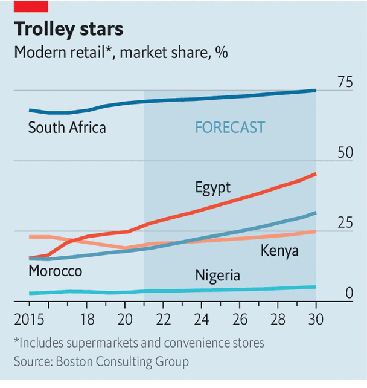image: The Economist
Analysts have long tried to measure Africa’s “middle class” by counting people within somewhat arbitrary income ranges. Newer analysis has incorporated data on ownership of bourgeois assets such as fridges. Last year Fraym, an analytics firm, estimated that there were 330m people in what it called Africa’s “consumer class”, roughly a quarter of the continent’s population of 1.3bn. Two-thirds were in just five countries (Egypt, Nigeria, South Africa, Morocco and Algeria); most of the other third were spread across a further 15 states, including Kenya.
Yet any analysis, however sophisticated, risks implying there are tens of millions of Africans able to pile their trolleys high. Even when adjusted for the different prices of goods in different places (so-called “purchasing-power parity”), average GDP per person in sub-Saharan Africa in 2022 was $4,400, according to the World Bank, almost half of India’s and about one-twelfth of Britain’s. Annualised food-price inflation in the region has been at least 10% since Russia’s invasion of Ukraine, squeezing household budgets. The average basket of goods bought at Quickmart is worth $6.
Twenty-four of Quickmart’s branches are open 24 hours a day, serving the Kenyans who work in informal trades with no fixed hours. It often locates branches on the left-hand side of the road leading out of the city, so that punters returning to swelling satellite towns can pop in on their way home. Shelves in downtown stores are replete with takeaways for Nairobi’s yuppies, who are marrying later, and living without kids in newly built flats
Kazyon capitalises on similar trends in Egypt. The discount retailer, founded in 2014, has about 1,000 shops. It competes with traditional markets for customers, targeting unfashionable parts of cities. Its loyalty scheme is the largest in any country in Africa, says Hassan Heikal, its founder.
Since it opened in 2015 in Nigeria, Africa’s most populous country, Marketsquare has expanded to nearly 30 stores. Ebele Enunwa, the CEO, saw a huge potential customer base among the 97% of Nigerians who shop at open-air markets. “These are not the nicest places to shop: dirty, untidy, disorganised, unsafe,” he argues. “People are screaming at you. It can literally give you a headache.”
“I had a bit of a nationalistic streak as well,” says Mr Enunwa. In 2021 Shoprite, a South African retailer, sold its outlets in Nigeria, a tacit admission that it had failed to crack the market. Its struggles had several causes, including a decision to sign leases priced in dollars, so the chain was stung when the naira depreciated. It also found it tricky to repatriate funds. Yet at root, argues Mr Enunwa, was a belief that what worked in South Africa would work in Nigeria. Its shops imported many South African items. “These were products that Nigerians did not know or care about.”
Marketsquare began in Yenagoa, the capital of Bayelsa State, the smallest of Nigeria’s 36 states, rather than Abuja, the federal capital, or Lagos, Nigeria’s sprawling commercial capital. “The Lagos consumer has become a diva,” explains Mr Enunwa. “They are spoiled for choice.” His decision to start in a secondary city speaks to an underappreciated trend. The urbanisation of Africa—the continent where cities are growing at the fastest rate—is often depicted as a story of megacities like Lagos. But more Africans (200m) live in towns with populations of between 30,000 and 300,000 than in cities of more than 3m (140m). And small-town Africa is underserved by formal retail.
Living in a material world
The size of this market has also encouraged Jumia, once dubbed the “Amazon of Africa”, to change tack. When it was founded in 2012 it sold investors on the prospect of delivering to the doors of millions of African online shoppers. They have proved elusive; Jumia’s share price has fallen by 90% in almost five years. “I’ve read a lot of articles about Jumia that say there is not enough demand in Africa,” says Francis Dufay, who became the CEO earlier this year. “The reality is much more complicated. The demand is scattered.” He says that it used to be the view of some in Abidjan, where he ran Jumia’s local operations, that Ivorians living outside the capital were “a bunch of peasants running naked who are never going to own a TV”.
Today Jumia gets almost half of its orders in Ivory Coast from “up country”. Popular items include weed-sprayers, shoes, blenders and other electrical goods. “We are literally bringing fridges to people for the first time,” says Mr Dufay. In small towns teams of “JForce agents” help shoppers order goods and collect them from bright orange pickup stations. In an ironic twist for one of Africa’s e-commerce giants, Jumia often prints catalogues for these customers, many of whom often pay for their goods in cash.
The quiet revolution in African retail has attracted investors’ attention. Quickmart, Marketsquare and Kazyon are all backed by private equity (PE). Venture capitalists and PE funds are also taking stakes in startups that modernise informal retailers’ payments systems and supply chains.
These investors are betting not only that there will be more Africans with money to spend in the future, but that shopping habits are changing now. “The notion of the ‘rise of the African middle class’ can give you distorted strategy,” argues Charles Mwebeiha, a Ugandan partner and co-founder of Sango Capital, a fund based in Johannesburg. “You can’t just look at what Africans have to spend—but how they spend it.” ■
Spain’s prime minister secures his job, at a high cost
An amnesty for separatists may calm some Catalans, but it infuriates other Spaniards
Listen to this story.Enjoy more audio and podcasts on iOS or Android.
A BUS MARKED “Sánchez traitor” driving past the Prado. Talk of a “coup” and a “dictatorship through the back door”. Boisterous protests every night in front of the Socialist party headquarters. Spain is seeing its biggest constitutional clash in years. And it is not likely to end soon.
The crisis has been gestating for months. In July’s general election, the conservative opposition People’s Party (PP) came first, but fell short of a majority even with support from the hard-right Vox party. But the Socialist party of the incumbent prime minister, Pedro Sánchez, fell even shorter, despite its alliance with Sumar, a farther-left party. Since then, however, Mr Sánchez has won support from five regional parties, including two Catalan separatist ones that held an illegal independence referendum in 2017. Junts per Catalunya (“Together for Catalonia”) held out for the biggest prize: an amnesty for hundreds of people prosecuted for the referendum. It would allow, most notably, its leader and Catalonia’s former president, Carles Puigdemont, to return from exile in Belgium.
The prospect of this amnesty has brought Spain’s politics, at an angry simmer at the best of times, to a raging boil. Mr Sánchez’s solid control over his party ensured that he won a vote in parliament on November 16th to reinstall him as prime minister. But the new term comes at a heavy cost.
Mr Sánchez had insisted before the election that any amnesty would be unconstitutional, a view shared by many other Socialists, including Felipe González, modern Spain’s longest-serving prime minister (1982-1996). Mr Sánchez refused to use the word for weeks while negotiating. When he finally broke the taboo, he presented it as a high-minded opportunity to turn the page on the Catalan conflict—while admitting he would not have done so if the parliamentary maths had turned out differently. But in a speech on November 15th he said more frankly than ever before: “The circumstances are what they are. It’s time to make a virtue of necessity.”
What are those virtues? The deal in question consists of two documents: a four-page political agreement between Junts and the Socialists, and the amnesty bill itself, released several days later, on November 13th. The Junts-Socialists deal reads as though written by Junts, even referring—as Catalan independence narratives invariably do—to an 18th-century defeat in which the region lost much of its self-governance. Coming to the present day, it says that a commission will investigate the use of politically motivated criminal prosecutions against separatists. This is a big concession to Junts, and earned a rare public rebuke from a clutch of judges’ organisations over fears that their independence would be subsumed.
But the prevailing view in Madrid—that the deal “was cut as though by a tailor” for Junts, in the words of one PP leader—is hardly universal in Catalonia. The documents make no mention of a Catalan “nation”, something the separatists crave (because it would, in their view, ground independence in international law). And the only mention of a future independence referendum is in fact a major concession by Junts: the agreement says Junts will seek another vote under Article 92 of the constitution—which only the prime minister may initiate, and in which “all citizens” (not just Catalans) could vote, in effect dooming it to failure.
That means, at least for now, a renunciation of unilateral action—a concession that has infuriated the pro-independence hard core. Clara Ponsatí, a separatist member of the European Parliament who went into exile with Mr Puigdemont, calls it an “insult to the people who trusted and protected him” and a “humiliation”. The Catalan National Assembly (ANC), the main grassroots organisation for the independence cause, says the deal “continues the [Catalan] submission to Spain”. The group’s president, Dolors Feliu, told before the agreement became public that the ANC may create a new independence party if the deal was insufficient—as it now says it is.
The amnesty bill includes an unprecedented 11-page prologue explaining its purpose. It makes repeated reference to the rule of law and the importance of the constitution (which guarantees the territorial integrity of Spain). In other words, it is intended to render the law bulletproof before a challenge at the constitutional court. More than 300 referendum supporters now facing trial will see their charges annulled, as will 70-odd police in trouble for their part in the government’s brutal breaking-up of the referendum in 2017.
The way Mr Sánchez has repeatedly trampled through red lines and gone back on categorical promises has gravely damaged the country’s , peaceful coexistence between people of different places and politics. But Mr Sánchez not only has a grip on his party that prevented anti-amnesty voices from prevailing; he has also populated other parts of the state with allies. This includes the constitutional court that will scrutinise the amnesty, and which now has a left-leaning majority. Mr Sánchez’s opponents seem to take it for granted that the court will wave the amnesty through. The PP controls the Senate but it can only delay, not block, the law.
Hence efforts to internationalise the dispute. The right wants the European Union to intervene; many take it for granted that the bloc will take disciplinary action as it has against Hungary and Poland for rule-of-law backsliding. But two European Commission spokesmen played down any such talk this week. Mr Sánchez has gambled and won before. He now hopes tempers will cool with time, as they have before. But each time he takes another unprecedented step, he makes that harder. ■
The country has Scandinavia’s highest rate of shootings and bombings
Listen to this story.Enjoy more audio and podcasts on iOS or Android.
ON OCTOBER 15TH thousands of followers of 5iftyy, a Swedish rapper, tuned into his Instagram channel for what he said would be an important livestream. They found themselves watching a bearded man brandish a gold-plated AK-47 while hurling insults at rival gang members, backed by three rifle-toting thugs in balaclavas. The man with the golden gun was Mustafa “Benzema” Aljiburi, a leading member of a Swedish narcotics network known as Foxtrot. Mr Aljiburi is believed to be living in Iraq. He staged the appearance to dispel rumours of his death and to threaten various enemies, including a Swedish prosecutor.
The livestream looked ridiculous, but the threats were serious. For years Sweden has suffered from high rates of gang-related violence, but for the past two years it has been relentless. In the first ten months of the year there were 324 shootings in Sweden, 48 of them fatal. The rate of gun crime is several times higher than that in neighbouring countries. Gangs have taken to attacking the homes of rivals with hand grenades and dynamite; there have been 139 explosions this year. The government is frantically toughening laws and raising its law-enforcement budget, but it is behind the curve. “We should have seen this coming and taken these measures at least ten years ago,” says Daniel Bergstrom, an adviser to Sweden’s justice minister.
The current wave of violence is largely driven by feuds involving Foxtrot. The gang draws its name from its leader, Rawa Majid, a 37-year-old Kurdish Swede. (“Rawa” sounds like , Swedish for fox.) Mr Majid immigrated from Iraq with his mother as a child and grew up in Uppsala, a city about 70km north of Stockholm. Over the past few years, police say, he has turned Foxtrot into the country’s biggest distributor of illegal narcotics, co-opting competitors or seizing their territory. He now directs these efforts from Turkey, where he moved after completing a prison stint on drug charges in Sweden in 2018.
Overall, Sweden remains a relatively safe country, and the areas where the conflicts play out hardly look like crime-ridden slums. Skarpnack, a suburb south of Stockholm that has seen several shootings and bombings, is a tidy neighbourhood of low-rise flats and gardens. At a recent town council meeting in the cosy (community centre), community activists pressed council members about mixed-income housing and pleaded for the preservation of a bat colony in a local park. But talk soon turned to security concerns. “We had several shootings at the beginning of 2022 that really woke us up,” says Monica Lovstrom, a city-council member. This year there have been three explosions in the district; one on August 19th blew up the stairwell of an apartment building.
Gangs often use bombings as a warning, and none of those in Skarpnack killed anyone. (The only bombing fatality in Sweden this year was a 25-year-old bystander.) But in early September a 13-year-old boy from one of the district’s richer and safer areas was found in a forest south of the city, shot in the head. Prosecutors have not released details, but say the murder was gang-related. Because the minimum age of criminal responsibility is 15, gangs are recruiting ever-younger teenagers as drug couriers and, occasionally, assassins.
Police say that some of the recruitment happens via chat apps. School-age children follow accounts that post lists of tasks and prices. Commonly, they deliver drugs; very rarely, they might be handed a gun and a description of a target. With no training, they are likely to miss.
Politically, the crime wave is difficult for the government. Ulf Kristersson, the centre-right prime minister, led his Moderate party to power in an election last year by blaming gang violence on the centre-left Social Democrats, who had been running things since 2014. Conservative voters expect a right-wing cabinet to tackle crime, the more so as it depends on support from the hard-right anti-immigrant Sweden Democrats.
The government has indeed lengthened criminal sentences, though many are still shorter than those in other northern European countries. Mr Kristersson says he wants to adopt “Danish penalties for Swedish crimes”, a nod to Denmark’s tougher rules (for example, doubling sentences for crimes committed as part of a gang). He is also giving the police more powers. A law that came into force on October 1st allows them to request electronic surveillance based on evidence that the target is involved in organised criminal activity; previously they had to be connected to a specific crime.
Some parties have been floating less practical ideas. The Sweden Democrats have suggested that children as young as 13 should face adult penalties for severe crimes, including life in prison, and that gang members with non-Swedish backgrounds be deported. The Social Democrats’ leader mooted the idea of using the army—though what it could do about adolescents joining gangs is not clear.
Others think the exclusive focus on enforcement is short-sighted. “We have to focus on fighting the deterioration of young people’s values,” says Jan Jonsson, a deputy mayor of Stockholm and a former school principal in a tough neighbourhood. He wants to teach civic morals systematically in schools, and to increase funding for the juvenile-detention centres where young criminals are held.
That may seem unlikely to bear fruit soon. But curtailing gang violence through law enforcement will be a tough slog too. Many of the criminal networks’ top figures are, like Mr Majid, not even in Sweden: in late October five people connected to Foxtrot, reportedly including 5iftyy, were arrested in Tunisia, and on October 31st another man reported to be a member of Foxtrot was killed in Sarajevo.
As police well know, in a drug war successes are usually temporary. In 2020 Dutch and French police cracked an encrypted network called Encrochat which drug networks had been using to communicate. Swedish prosecutors used the evidence to send dozens of figures from then-dominant gangs such as Bandidos and Satudarah to prison. The effect, according to Mr Sund, the detective, was to open up territory for someone new. A few years later Foxtrot was running the show. ■
Correction (November 16th 2023): An earlier version of this article said that the minimum age of criminal responsibility in Sweden is 16. It is, in fact, 15. Sorry.
As Ukrainian men head off to fight, women take up their jobs
Mining is one big example
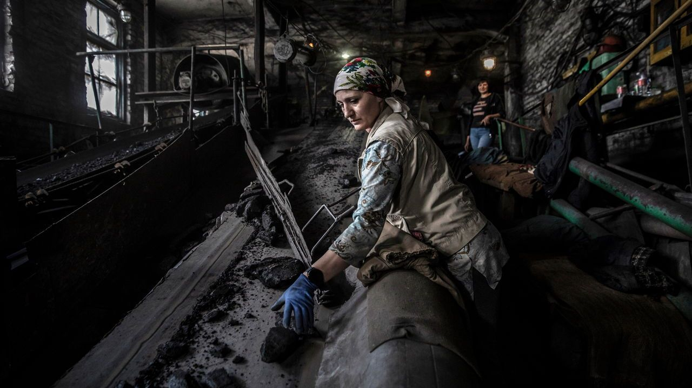
Listen to this story.Enjoy more audio and podcasts on iOS or Android.
OKSANA SAYS she has placed her life on hold. Covid-19 took her mother and her husband two years ago. Russian artillery took her father and her oldest son this spring. “I’ve immersed myself in my work,” she says, 480 metres under the outskirts of Ternivka, a town in eastern Ukraine. The whites of her eyes glow in the surrounding darkness. Back in Bakhmut, the site of one of the war’s most vicious battles, Oksana, aged 49, was a dance teacher at a boarding school for impoverished children. Today, with her former house and hometown destroyed, her school closed, and her closest relatives dead, she is a coal miner.
After the Russians invaded in February 2022, Oksana (her mine’s management asked that the surnames of its workers not be used) escaped to Poland, where she worked as a dishwasher and a cook at a restaurant. But she missed Ukraine. Friends told her the Ternivka mines were looking for new workers, and she signed up. Her new job pays better than most, Oksana says, and offers a good pension. The work also helps her block out the memories, she says, taking a break from shovelling coal. “I want to forget everything.”
The war has upended the lives of countless Ukrainians, as well as the country’s labour market. Some 4.8m people lost their jobs almost overnight when Russia attacked. Unemployment is estimated to have eased to 18.4% in October this year, from more than 30% in the spring of 2022, but remains well above pre-war levels. According to one survey, 17% of Ukrainian workers have changed professions since the start of the war. Hundreds of thousands have been conscripted. American officials estimate that at least 70,000 Ukrainian soldiers have died in the war, and that up to 120,000 more have been wounded. As more Ukrainians are called up, demand for workers in sectors traditionally dominated by men is growing.
Enter Ukraine’s women. War and occupation have made collecting good data impossible. But there are signs that women are increasingly powering Ukraine’s hobbled economy. Of the 36,000 small- and medium-sized companies registered in Ukraine so far this year, 51% are run by women, says Yulia Svyrydenko, the country’s economy minister. More women are starting to work in industry, construction, and mining. “We will see this on a larger scale once we start reconstruction,” she says.
In the coming years Ukraine will need an army of doctors and psychologists to look after its war veterans, including thousands of amputees and traumatised soldiers. Many if not most of those care-givers will be women. The energy, transport and defence sectors, which are expected to play an outsize role in the economy after the war, are also bound to attract more female workers.
At the mining complex near Ternivka the army has conscripted 600 men, about a tenth of its total workforce, says the director, Dmytro Zabielin. To make up for the shortage, about 300 women have joined. The mine had employed women before the war, but none worked underground. More than 100 of the new workers are now doing just that. Oksana operates and maintains a conveyor belt that carries coal to the surface. Other women are working as safety inspectors and electricians. More are coming on board. Olena, whose husband, a former miner, commands a platoon near Luhansk, is training to operate the trains that connect sections of the mine. Anna, who recently turned 18, will look after the cages that carry the miners between levels. Ternivka is well behind the front lines, but the area has been struck by Russian cruise missiles. “It’s very scary,” says Anna. “But as long as I’m underground I can’t hear it.”
Coal-mining is dangerous, backbreaking work. The war has made it even more so. During blackouts caused by Russian attacks on Ukrainian energy infrastructure last winter, the Ternivka miners had to walk as far as 7km, and then climb 680 metres using escape ladders, to resurface. Thanks to new generators, the mines can now keep the trains and the elevators running long enough to ensure a less harrowing exit.
Ukraine has a way to go when it comes to gender equality. The participation rate of women in the labour force has been in decline. It fell from 54% in 1990 to 48% on the eve of the invasion. Women are over-represented in education, domestic work, and tourism, professions in which salaries tend to be low. The gender pay gap has narrowed from 26% seven years ago to 18.6% today, but remains well above the EU average (12.7% in 2021). Until as late as 2017, when it was finally repealed, a law dating from the Soviet era had banned women from 450 professions, ranging from lorry driver to welder. The following year, Ukraine gave women in the armed forces the same rights as those of male soldiers. Around 43,000 women are currently serving in the armed forces, including 5,000 in combat positions.
Stereotypes persist. “Women should pursue their ambitions in other areas,” muses Mr Zabielin, the mine director, in his office. “A woman is the keeper of the home and the family.” But he concedes that the mine will probably have no choice but to hire more of them. Many men will never come back from the front, and Ukraine will have to maintain a large army even after the war ends. “Our neighbour,” he says, referring to Russia, “is not going anywhere.”
Oksana misses her former life and her old job, but she has no intention of leaving the new one. She has become used to the noise, the darkness, and the dust and to the long descent underground, she says. “It’s no longer as scary as war.” ■
The ancient Eleusinian mysteries get a new incarnation
Athens’s secret weapon reappears as festival
Listen to this story.Enjoy more audio and podcasts on iOS or Android.
In the perpetual rivalry between ancient Greek cities, one of the assets boasted by Athens was control of a numinous place called Eleusis, about 20km to its west. For centuries, seekers of illumination processed along the Sacred Way from the foot of the Acropolis to a seaside temple where they underwent a secret rite. It was forbidden on pain of death to disclose what happened. All that is known is that having fasted for three days, initiates would quaff a drink and then be presented with “things enacted, things shown, things said” that celebrated the return of the goddess Persephone from her abduction to the underworld.
For the past year, modern Greece’s mandarins have tried to turn the location, now called Elefsina, into a new intangible asset, hosting their own wondrous variety of happenings, from multi-media installations and dance displays to a conference of scholars, including psychedelic medicine buffs, who debated the Eleusinian mysteries. Elefsina has been one of three European “capitals of culture” during 2023.
The year-long festival’s focus was not merely on the under-visited archaeological site, but also the hardscrabble new town of some 30,000 blighted by steelworks, cement factories and oil refineries, as well as a graveyard for ships. This grim backdrop has not deterred bold experimentation. Katerina Gregos, the doyenne of Greece’s contemporary-art curators, invited creative types from nine countries to assemble a show that used underwater film clips, random industrial artefacts, gravestones and wrappings from munitions to comment on migrant labour, shipwrecks and arms factories.
Next month’s closing ceremony will be a beginning, not an end, insists Nana Spyropoulou, the festival’s administrator. The stress will be on the use of semi-ruined buildings which have been rehabbed. Buffing up the whole of the Sacred Way, part of it now a motorway, is not yet planned; but it should be.■
Fentanyl kills thousands every year in America. Will Europe be next?
The deadly drug may be coming to European shores
Listen to this story.Enjoy more audio and podcasts on iOS or Android.
On the northern edge of Paris, far from the brasseries and museums, lies a cautionary tale of what happens when humanity trips up. Beneath a slew of motorway interchanges near the Porte de la Chapelle, dozens of dead-eyed drug addicts aimlessly wade through a makeshift campsite of tents and trash. There is no hope left here, just the stench of excrement and despair. On a recent visit, your columnist was too reticent to ask the hollowed-out souls wandering by which poison had caused their fall; but the place is known as orcrack hill. Social workers come and go; the authorities otherwise turn a blind eye. Police have moved the encampment around over the years, better to keep the inconvenience of human misery away from gentrifying neighbourhoods nearby.
Many cities in Europe have pockets of such squalor. Yet for all the harm caused to society by drugs commonly scored on the streets of Paris, Berlin or Warsaw, none can match the ravages of fentanyl, a narcotic that has devastated swathes of America. As any recent visitor to downtown San Francisco might attest, the effects of this synthetic opioid, vastly more potent even than heroin, cannot be confined to small areas on the fringes of the city. Drugs of fentanyl’s ilk currently kill around 70,000 Americans a year, more than died in the wars in Vietnam, Iraq and Afghanistan combined. In Europe, that brand of junk never really took off: no more than 200 people are thought to overdose from it every year. Largely as a result of the fentanyl gap, Europe has less than a tenth as many drug deaths as America, despite its bigger population. The ravage that hasn’t happened is a quiet policymaking triumph for Europe. But governments fret that this may not be the case for long. Concern is mounting that the fentanyl onslaught may soon find its way across the Atlantic.
Why has fentanyl thus far spared Europe when it caused such devastation in America? Given the drug’s origins—it was synthesised in Belgium in 1959, as a legal painkiller—it might have been expected to be discovered by junkies there first. But it took American no-holds-barred capitalism to help turn it into a phenomenon. From the 1990s on, doctors there prescribed painkillers willy-nilly, incentivised by unscrupulous pharmaceutical firms. By 2015 some 227m prescriptions for opioids were made out every year in America, roughly one for every adult. A cohort of patients hooked on pills soon discovered they were available illicitly when prescriptions ran out. (Mexican cartels were eager to help, often using the requisite chemicals from China.) Europe, by contrast, broadly resisted, in part thanks to universal medical care. Unlike Americans, those with ailments could get the procedures they needed to alleviate pain, instead of turning to painkillers for a quick fix. What addiction there was could be tackled with opioid-substitution treatment schemes.
Alas, that may not be enough to keep Europe out of fentanyl’s deadly clutches. The authorities have two concerns. One is around heroin, which Europe’s 1m users of illicit opioids are most often hooked on. Nearly all of the stuff injected or snorted in Europe is derived from poppies grown in Afghanistan. The Taliban, since returning to power, have enforced production cuts of perhaps 95% this year, which is expected to severely curtail the availability of cheap heroin in Europe, come 2024. Facing a dearth of supply, drug gangs are expected either to mix fentanyl into what little heroin they have, to give it extra potency, or to peddle the synthetic drug as a wholesale replacement. A similar shortage of heroin after the last Taliban crackdown in the early 2000s caused fentanyl to take root in Estonia, so far the only part of Europe to have faced a durable outbreak of addiction. This replacement theory is now being tested in Ukraine, where the heroin supply has been disrupted by war but synthetic drugs remain relatively available.
The shortage of heroin might coincide with a glut in illegal fentanyl shipments to Europe. Unlike cocaine or heroin, which require elaborate manufacturing and smuggling operations, the drug is cheap to make and ship. Europol, the EU’s law enforcement arm, has warned that Mexican cartels are co-operating with criminal networks in Europe to expand the market for drugs including fentanyl. (What problems Europe currently has with synthetic opioids are overwhelmingly caused by pills made legally being misused.) Antony Blinken, America’s secretary of state, has warned his European counterparts that either they already have a problem with fentanyl-like drugs but don’t know it yet, or they will soon have one. The switch from one type of opioid to another can be sudden, and all but irreversible in the case of fentanyl, given the huge margins gangs can make from it: a single kilogram can generate over $1m in profits, much more than other drugs. Some factors that were once thought to have protected Europe may prove fleeting: Canada has state-funded health-care systems to rival any in Europe, yet it too has fallen prey to fentanyl.
The drugs do work, sadly
Europeans have one sizeable advantage in their fight against fentanyl, says Keith Humphreys, an addiction expert at Stanford University: they have seen the ravages opioids have caused in America, and know how important it is to keep the genie in the bottle. The authorities are monitoring wastewater for traces of the drug, the better to stamp out any outbreaks. What little fentanyl police come across is subject to rapid crackdowns. Doctors are careful about prescribing addictive painkillers unnecessarily. Treatment of fentanyl addiction is better understood, too.
Europe can allow itself a little crowing. The welfare state, maligned by many on the political right as having turned European economies sluggish, turns out to have upsides, too: it played its part in sparing its citizens the worst outcomes in life. Only a few have fallen between the cracks, in Paris and beyond. But ensuring that this remains the case will require vigilance and grit. ■
Read more from Charlemagne, our columnist on European politics:
The problems with the most powerful department in Whitehall
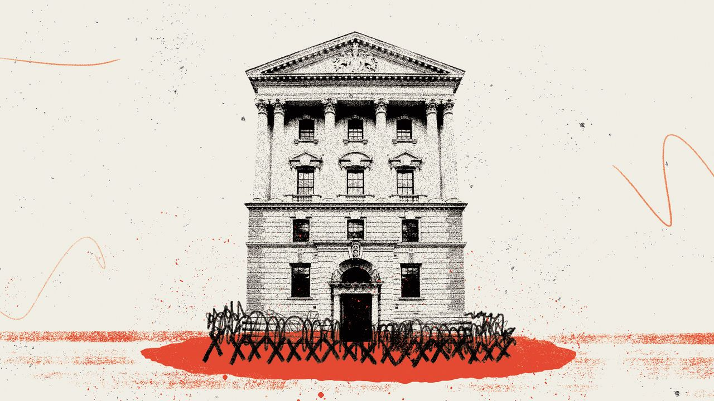
Listen to this story.Enjoy more audio and podcasts on iOS or Android.
On September 28th 1976 Denis Healey was at Heathrow airport waiting to fly to a meeting of the IMF when news reached him that the pound was tumbling. The chancellor rushed back to Whitehall to announce that he would ask the fund for a £1.9bn ($3.9bn) loan, around 5% of the government’s budget. Britain is bust, was the blunt verdict of . The Treasury was blamed for the loss of fiscal credibility that might have reassured the markets.
This was no isolated trauma. From devaluations to bank bail-outs, economic crises have helped shape the psyche of Britain’s finance ministry. “The disasters of 1967, 1976, 1992, 2008 and September 2022 are etched in the collective consciousness,” said Lord Macpherson, the department’s top official in 2005-16, last year.
It is the Treasury’s job to steer Britain from the rocks. Its officials obsess over designing ways to “save the government from itself”. In a lecture in 2014 that has become canon among officials, Lord Macpherson set down the tenets of the department’s “orthodoxy”. It includes support for markets and free trade and scepticism of government intervention. Above all is adherence to “sound money” (controlling inflation) and disciplined spending.
There is much to like about this set of beliefs. The last entry in Lord Macpherson’s list of “disasters” refers to Liz Truss’s brief and shambolic administration. Before becoming prime minister last year, Ms Truss railed against “failed Treasury orthodoxy” and its “abacus economics’‘, promising instead to “unleash growth”. It did not go well. Few doubt the department’s competence; its power attracts Whitehall’s brightest minds. Some who criticise it simply want higher spending and are too sanguine about ballooning debt. As Ms Truss proved, every government needs a department that says “no”.
But critics of the Treasury are not entirely wrong. The Treasury’s strengths are weaknesses, too. In Britain’s centralised system, the department wields huge power over the vast sweep of activities undertaken by the state. Its means of controlling spending can be penny-wise but pound-foolish. The department often cannot see the merits of schemes needed to raise long-run prosperity. Its officials grip the purse strings so tightly that other parts of government are infantilised.
Drum Court doctrine
The Treasury is 800 years old but owes its modern form to William Gladstone. During four spells as chancellor (sometimes combined with terms as prime minister), the Victorian statesman waged a war on debt, earning a reputation for “saving the candle-ends”. Pricey ships were the biggest worry then—Gladstone could bore the Commons for hours on naval-spending estimates. Public spending still accounted for less than a tenth of GDP.
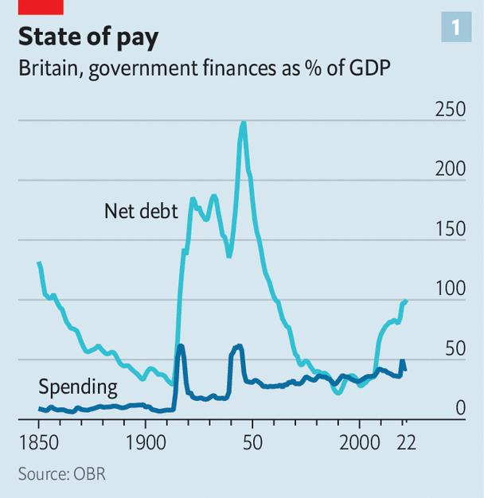image: The Economist
In the 20th century the role of the state—and of the Treasury—swelled (see chart 1). Children were to be taught, the sick treated, the elderly cared for. In many other countries, power was dispersed as the state expanded. Spending was devolved to regional tiers of government or managed by a budget office separate from the finance ministry. Some countries created the counterweight of an economics ministry, responsible for fostering long-term growth. In Britain, barring the odd short-lived challenge, the Treasury has reigned supreme. It controls the best part of £1trn-worth of public spending in Britain each year.
The Treasury organises itself around two annual set pieces—the spring budget and autumn statement—at which the chancellor announces tax-and-spending decisions. Jeremy Hunt will present the next autumn statement on November 22nd. As well as these events, triennial spending reviews are used to set departmental budgets. Since 1997 chancellors have embraced fiscal rules to signal their credibility to taxpayers and lenders. Although the precise words change, the rules typically target debt and the deficit falling as a share of GDP over a fixed period.
The Treasury’s adherence to disciplined spending looks particularly apposite now given strains on the public finances. Earlier this year public debt exceeded GDP for the first time since 1960. Treasury officials are fretting about rising servicing costs, says Torsten Bell of the Resolution Foundation, a think-tank. By 2026-27 those costs could exceed £108bn (or 4% of GDP), almost as much as Britain’s education budget.
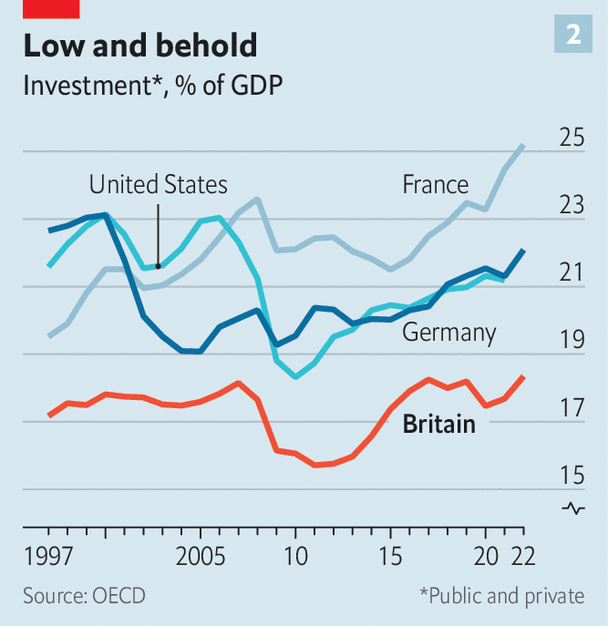image: The Economist
Yet the Treasury must grapple with another profound worry. Since 2008 Britain’s economy has grown at about 1% per year. Productivity has stalled, increasing by just 1.7% since 2007, compared with 27% in the previous 16 years. Investment is too low (see chart 2). Subdued growth means lower wages and tax receipts. The Treasury cannot be blamed for all of these problems. But its power means that its institutional flaws have a disproportionate effect. On three counts, the way the Treasury works makes Britain’s problems worse.
The first problem is that the Treasury puts too much value on short-term savings over long-term outcomes. Take infrastructure. In March Mr Hunt decided to delay by two years the Birmingham-to-Crewe leg and the last London bit of HS2, a high-speed rail project, as well as several road projects. In the Treasury’s calculus, that meant Mr Hunt could meet nearer-term spending limits and stick to his fiscal rules. In the real world, it pushed up the overall cost of the scheme and deferred the benefits. (The northern leg of HS2 was cancelled altogether in October.)
Other areas get similar treatment. In 2021 a target for raising public R&D spending was pushed back by two years, forcing projects to be abandoned. A core problem for the National Health Service is low capital investment. Britain has the fifth-lowest number of CT scanners and MRI units per person in the OECD, a club of 38 mostly rich countries. Leaky roofs sap morale and productivity in hospitals. Yet sharp cuts to capital spending are pencilled in for after the election. And even after capital budgets have been allocated, they are raided to plug gaps in day-to-day spending. A total of £4.3bn was siphoned off between 2015 and 2019; in the coming budget another £600m will be moved, reckons the . In theory that is banned; in practice the Treasury turns a blind eye.
A stopgap approach extends to tax policy. In their budget statements, chancellors like to “pull a rabbit out of the hat”. Capital allowances, an element of business taxation, have been changed on average every other year for the past four decades. In March Mr Hunt fiddled again, this time introducing “full expensing”, which allows businesses to deduct investments in machinery. That was welcome, except that the change was temporary (lasting only three years), negating much of the benefit.
Some argue that all of this can be blamed on the myopia of ministers. To a point. But such decisions also emerge from an institution geared around near-term spending targets. That is the rhythm to which the machine hums. Teams working on long-term goals, like improving public-sector productivity, get little say in budgets. The way to get promoted is to show that you can kill spending bids, says one official. Meeting the fiscal rules often involves unhelpful short-term wheezes.
Problems also arise from the way rules are applied. In 2018 Diane Coyle and Marianne Sensier, two economists, concluded that the Treasury’s “Green Book” process for evaluating projects resulted in a bias against some parts of the country. Using local land values and productivity measures skews expected benefits towards London and the south-east. Projects elsewhere with a relatively high benefit-cost ratio—like electrifying railways in Leeds or the Midlands—are less likely to get funding. The value of creating clusters by joining up transport networks is missed. The department reviewed the Green Book in 2020; Ms Coyle thinks little has changed.
Even in London and the south-east, the Treasury has long been sceptical of schemes that promise transformation. In the 1980s Treasury officials argued that the M25, the orbital motorway around London, only needed to be two lanes wide. In the 1990s they strenuously opposed the extension of the Jubilee Line, part of the London Underground, to Canary Wharf. They later acknowledged that they were mistaken on both counts.
Healthy scepticism about “spend-to-save” bids can bleed into an instinctive distrust of any preventive programmes. The public-health grant, which local authorities use for schemes focused on drug use, drinking and smoking, has been cut by a fifth in real terms since 2015, despite being three to four times cheaper than other interventions with the same health benefits. The department should care more about “save now, spend more later” decisions says Paul Kissack, a former official.
The second, connected problem is that the Treasury does not prioritise economic growth. Ms Truss was wrong to style the department as anti-growth (officials simply doubted her tax cuts would “unleash” much). Behind closed doors the Treasury argues for causes that could boost growth without costing money, like planning reform and a pragmatic relationship with the European Union, says Tim Leunig, a former adviser to two chancellors. But the Treasury treats its role as an economics ministry as subordinate to its finance one.
Several chancellors have tried to tilt the balance. But over the past 15 years, it is hard to point to a strong record of pro-growth policies. George Osborne, who took charge in 2010, hoped to be a radical pro-growth chancellor but that aim was undermined by his “fiscal machismo” in cutting budgets more steeply than was needed, says Paul Johnson, who heads the Institute for Fiscal Studies, a think-tank. The Treasury was also slow to acknowledge that low public and private investment would be disastrous for productivity. “With hindsight, we probably could have borrowed more and invested more,“ Lord Macpherson said in October.
This would all matter less if not for the third problem: how jealously the Treasury guards its power. Its grip on Whitehall owes much to Gordon Brown, who ruled it as chancellor for a decade from 1997. The department “lost one empire” through his decision to cede operational control of monetary policy to the Bank of England, Mr Brown wrote in his memoir. But it assumed an “even bigger” one, extending its tentacles across government.
Mr Osborne handed responsibility for forecasting to the Office for Budget Responsibility, an independent watchdog, and declared that “the micromanagement would stop”. Few think it has. The Treasury’s 2,000-or-so officials exert huge influence over an array of complex activities. However bright, many lack experience. A third are under 30, and a quarter leave their jobs each year. Departments complain of old hands being bossed around by recent graduates in the Treasury.
Overzealous control manifests itself in several ways. Once spending is allocated, approval is needed for “novel” and “contentious” changes. Moving as little as £5m between programmes can require lengthy negotiations. In one case during the pandemic, the Department for the Environment, Food and Rural Affairs needed Treasury approval to roll over a subsidy programme to help abattoirs slaughter pigs. The scheme was worth less than £1m.
Despite saying it wants to let go, the Treasury always tends to “snap back to the old Gladstonian model of ‘we’ll give you thruppence and see how you get on’”, says Ms Coyle. Such bureaucracy is not only a huge waste of time. It limits departments’ ability to deal with actual problems.
And not just departments. The Treasury is slowly moving towards block grants for some devolved authorities in English cities, which then get to decide how to spend the cash. But the default remains a begging-bowl culture in which councils submit lengthy bids for tiny sums of money. In the past seven years English councils have been asked to compete for 36 separate pots for pedestrian and cycling schemes. Other departments also micromanage funding as it moves down the chain, but the Treasury sets the culture. A review of research funding found that it insists on stifling levels of bureaucracy, putting British innovators at a disadvantage.
Trusting individual departments to make decisions works better, according to an OECD study. Dutch ministries, for example, follow a rigorous collective process for agreeing on budgets and setting goals. They then have more freedom to decide how to meet those goals, with an in-house finance function keeping track. Elsewhere in Europe, the cabinet often gets more say on fiscal decisions than in Britain.
The easy answer to these three problems is to break the mighty department up. That would bring Britain into line with other countries, and is an idea that has advocates on the left and the right. In a forthcoming review of the civil service, Lord Maude, a Tory grandee, suggests moving control over spending to the Cabinet Office, a department he once ran.
Yet it is not obvious that countries with other models do any better. Mergers and splits tend to absorb an absurd amount of attention in Whitehall, and often don’t last. Labour, which has a comfortable lead of around 20 points in the polls, in any case appears uninterested in such a radical break. Rachel Reeves, the shadow chancellor, is pushing an agenda of supply-side and public-service reform while retaining “iron discipline” on spending.
Money and bunnies
However, to raise Britain’s economic-growth rate, which she wants to be the fastest in the G7, Ms Reeves would need to change the institution she aspires to lead. Several ideas come to mind. First, chancellors could accept more constraints on their power, in order to give taxpayers and investors more certainty. The consensus on funding HS2 survived 15 years before it was unceremoniously shredded in October. Changes to the scope and budget of big projects could require parliamentary approval, says JP Spencer, a former Treasury official who advises Labour.
Capital budgets could be set for the whole five-year parliament, and properly ring-fenced. Plans could be changed—for example, if managing the business cycle required more active fiscal policy. But vital investment would not be raided every time things got tough. Nor is there a good reason for chancellors to tinker with the tax system at every spring budget and autumn statement. They could set out a tax strategy at the start of each parliament, with changes scheduled only once a year, and taxes could be automatically indexed to inflation. Britain needs fewer rabbits.
image: Nate Kitch
Second, the Treasury could relax its grip on spending. Britain owes much to Gladstone’s efforts to establish control. But departments, agencies and councils—not only bright graduates in the Treasury—should be able to manage programmes. Once a budget and outcomes are agreed, ministries should take more decisions.
Third, the Treasury needs to change the way it assesses proposals. David Gauke, who served as chief secretary to the Treasury in Theresa May’s government, suggests creating a new independent body, alongside the OBR, to evaluate the likely impact of policies on long-term goals like reducing demand for public services or boosting growth. Scrutiny would happen on an annual basis before a decision is made, with policies scored from one to five. Currently no external body does this. Studies have found the standard of evaluation by departments and the Treasury to be poor.
Andy Haldane and Jim O’Neill, two economists courted by Tory and Labour politicians, have separately argued that adherence to today’s rules is unhelpfully constraining investment and growth. Although borrowing is already high, Lord O’Neill says there is a case for carve-outs from the fiscal rules for investments proven to have the biggest effect on long-run growth. This approach could go alongside tighter control of current spending.
The Treasury prides itself on stopping bad things from happening—“God’s work”, as a former official calls it. It has often protected Britain from disaster. It also needs to set a course for long-term prosperity. ■
The Supreme Court rules against Britain’s Rwanda plan. What now?
The Tories’ flagship immigration policy is blocked
Listen to this story.Enjoy more audio and podcasts on iOS or Android.
IT WOULD NEVER have “stopped the boats”. But the Supreme Court’s ruling on November 15th that the government’s plan to fly asylum-seekers to Rwanda was unlawful is still a hefty blow to Rishi Sunak. The prime minister has pledged to tackle the problem of illegal migrants crossing the English Channel in small boats. The court’s decision puts a big hole in the Illegal Migration Act, which allows for asylum-seekers who have entered Britain via another safe country to be detained and deported.
The prime minister is not giving up. Shortly after Britain’s highest court ruled unanimously against the scheme on the ground that Rwanda was an unsafe destination for asylum-seekers, Mr Sunak said he would pass an “emergency” law asserting that it was in fact safe. He also said that he would not allow a “foreign court” to block the scheme. Tough talk may cheer hardliners, but it is hard to see how any planes will take off for Kigali soon.
The scheme always had an obvious logistical flaw. The British government claimed it was “uncapped”, but its counterpart in Rwanda said it could take only a few hundred people a year. Since security was stepped up on ferry and tunnel Channel crossings, the number of small-boat migrants has surged. In 2022 it reached a record 46,000, up from 299 in 2018.
The bigger problem was legal. Many of those who enter Britain in this way are granted asylum: Afghans and Syrians have grant rates above 95%. In June the Court of Appeals said the risk of refoulement—sending asylum-seekers back to unsafe countries—meant the Rwanda plan breached the European Convention on Human Rights (ECHR). The European Court of Human Rights, which upholds that convention, had been the first court to block the government’s scheme in 2022.
In its verdict this week the Supreme Court cited several cases, documented by the UN High Commissioner for Refugees, of asylum-seekers from decidedly unsafe countries, including Afghanistan and Syria, being sent home from Kigali. The rule against refoulement, it said, was contained in several laws ratified by Britain, not just the ECHR.
That is a problem not just for Mr Sunak but also for his opponents on the right of the Tory party. In a furious letter to Mr Sunak shortly after she was sacked as home secretary on November 13th, Suella Braverman said the prime minister had betrayed his promise to “stop the boats” by rejecting calls to leave the ECHR. Claims that the convention prevents decisions that are Britain’s to make are less persuasive when the Rwanda plan breaches other laws, too.
What now? Britain has already paid £140m ($175m) to the government in Kigali, though observers note the money has not been spent on improving its asylum processes. As well as legislation, Mr Sunak also said he would publish a new treaty with Rwanda giving “assurances” that when “we send someone to Rwanda they won’t be incorrectly returned to their own country”. Mr Sunak is pushing for reforms to “rule 39 orders”, too—interim injunctions issued by the echr. Yet it is unclear whether any treaty would satisfy the courts, whether any law would get through the Lords or how exactly the echr could be stopped from blocking things.
Beyond such theatrics, the government will look for other safe third countries for asylum-seekers to be sent to. None of the court judgments that ruled against the Rwanda scheme found that the idea itself was illegal; only that Rwanda was an unsuitable destination. There was “clearly” an appetite for the concept in other European countries, said James Cleverly, the new home secretary.
Mr Sunak can point to some progress elsewhere. So far this year the number of small-boat migrants is markedly down on last year’s. That is largely because of a deal the government struck with Albania to return Albanian citizens who come illegally. Sunder Katwala of British Future, a think-tank, says it should seek to make similar deals with those countries whose citizens have asylum grant rates of, say, below 60%. Stopping the boats will not depend on one big policy, but a number of small ones. ■
The British government is not paying dementia enough attention
And it is not ready for the projected rise in case numbers
Listen to this story.Enjoy more audio and podcasts on iOS or Android.
ACCORDING TO THE Office for National Statistics, dementia was the leading cause of death in England and Wales last year, accounting for 65,967 deaths, or 11.4% of the total, up from 10.4% in 2021. The National Health Service reckons that 940,000 people in Britain are living with the condition. Many need care, either in their own homes or in residential facilities. Graham Stokes, director of dementia care at HC-One, a care-home provider, says 75% of its beds are filled by people with dementia. Yet to the frustration of many, the issue seems to have sunk down the government’s list of priorities.
It may feel that the problem is less acute than once feared. New drugs are offering hope for those with Alzheimer’s, the most common cause of dementia, that the incurable disease’s progress can at least be slowed. Evidence is mounting that the risk of developing dementia can be sharply reduced by lifestyle changes that are being encouraged anyway—giving up smoking and excessive drinking, exercising, eating and sleeping well, and so on.
International evidence suggests that the age-related incidence of dementia has been falling quite rapidly. A study published in 2020, for example, of 50,000 people in America and Europe between 1988 and 2015 found that the risk of developing dementia had declined by an average of about 13% a decade. It went from about a one-in-four chance for a 75-year-old in 1995 to less than one in five by 2015.
But optimism about Britain’s ability to cope with the rising numbers of people with dementia was scarce at two recent gatherings of professionals and charities. A dementia summit in London in October and the 17th UK Dementia Congress in Birmingham in November, organised by the , were animated more by a mood of beleaguerment—a sense that Britain’s care sector is undervalued and that, in Mr Stokes’s words, “dementia has lost its place in the sun”.
This is one rare corner where David Cameron’s term as prime minister is remembered as something of a golden age. In 2012 he launched a dementia “challenge”, building on a “national dementia strategy” from 2009. Scotland still has one, but England’s has lapsed, subsumed, with cancer and other diseases, into a “Major Conditions Strategy” published in August. Suzanne Mumford, head of nursing at Care UK, another residential-care provider, regrets the change: “It does matter because it doesn’t give the right sort of focus.” Dementia, she points out, is unusual in that people can live with it for decades. Care homes, she says, have become the specialist centres for dealing with it.
A recent study has meanwhile cast doubt on the notion that rates of dementia in Britain are indeed in long-term decline. Published in , it found that its incidence, allowing for age and sex, fell sharply in 2002-08, in line with what had been happening in other rich countries, such as America, France and the Netherlands. But the trend reversed itself abruptly in England and Wales in 2008-16, with an increase in the incidence of dementia in that period of 25%. If that rate were to persist, the number of people with dementia in Britain would rise to 1.7m by 2040; the figure would be 1.3m if the long-term trend prevailed and 1m if the improvement in 2002-08 endured.
That is a huge range of outcomes. But all imply a level of demand for care services that will be hard to meet. It will rely on the continued efforts of underpaid care-workers, charities and, most of all, unpaid carers, usually family members, usually women. One promising idea that has spread from the Netherlands is for dementia “meeting centres”, of which 70-odd, each catering to a few dozen people, have opened in Britain so far. They offer just that—a place for people with dementia to meet regularly and be supported while they live at home. It is a cheap intervention that is very effective in slowing cognitive decline. Yet, says Shirley Evans, director of the Association for Dementia Studies at Worcester University, which is leading the initiative, it receives no central-government support. That seems a shame. ■
But a government consultation may signal a crackdown
Listen to this story.Enjoy more audio and podcasts on iOS or Android.
Even after Britain’s ban on indoor smoking came into force in 2007, the smell of cigarette smoke was never far away. It wafted across pub gardens and lingered outside workplaces. Today you are almost as likely to inhale the scent of blue razz lemonade or the “refreshing, mellow tones” of watermelon.
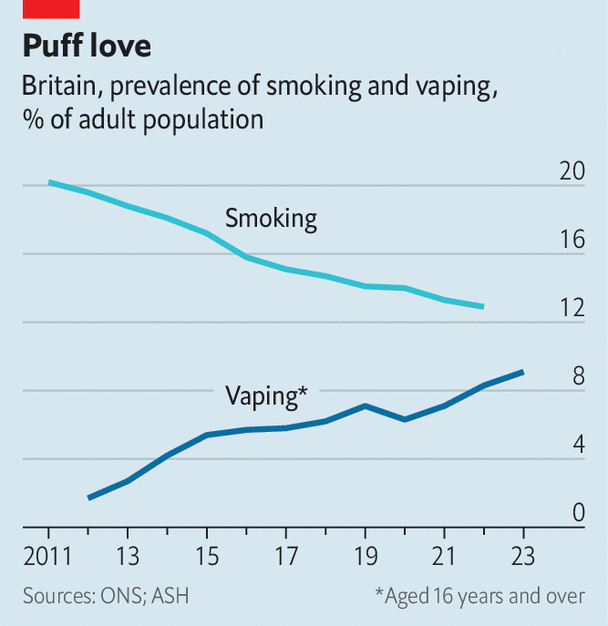image: The Economist
Almost one in ten Britons is now a regular or occasional user of electronic cigarettes. On current trends (see chart) vaping is set to become more common than smoking by the mid-2020s. But many in the industry fear that a government consultation, due to conclude in December, will be followed by a regulatory clampdown.
Catering to Britain’s 4.7m vapers is increasingly big business. A report for the industry, carried out by the Centre for Business and Economic Research, a think-tank, put the industry’s turnover at £2.8bn ($3.4bn) in 2021 and calculated that it supported almost 18,000 jobs. The number of vapers has risen by almost a third since.
The country has almost 3,500 specialist vape shops, according to the Local Data Company, a research firm. The largest chain, VPZ, was founded in Leith, in Edinburgh, in 2012 and now has more than 150 stores across Britain. The firm began manufacturing its own liquids in Scotland in 2016. It reported turnover of £36m in 2022, up by almost 60% over five years.
The industry’s rapid growth partially reflects a supportive stance from public-health authorities. Although many governments have sounded cautious on the potential health benefits of inhaling nicotine by breathing in a vapour rather than tobacco smoke, the National Health Service has consistently made the case for switching. In April the government announced a “swap to stop”’ scheme that will give free vape starter-sets to up to 1m smokers, the first scheme of its type globally.
In recent years the industry has also been one of few direct beneficiaries of Britain’s cost-of-living squeeze. An average packet of 20 cigarettes now costs £14.57, compared with around £5 for roughly the same number of puffs from a disposable vape and half that for the equivalent amount of nicotine in a refillable device. More and more cost-conscious smokers have been making the switch.
But clouds loom. Just six months after announcing the giveaway of vaping kits, the government unveiled a consultation on vaping regulation that appears to herald a much tougher line. The change in attitude has been driven by two related issues—rising use of disposable devices and concerns over under-age vaping.
Material Focus, a charity, thinks that sales of single-use devices have doubled since 2022 and are running at 360m a year. Rex Zhang, the strategy director at China-based Smoore International, the world’s largest vape manufacturer, reckons that Britain accounts for about 40% of the European disposables market. Supermarkets, convenience stores, petrol stations and launderettes all stock them.
Both the Local Government Association and the Scottish government have called for a total ban on disposables. That’s partly because most of them wind up in landfill. It’s also because youngsters can get hold of them easily. Although sales to under-18s are already illegal, enforcement is patchy. Responses to freedom-of-information requests covering ten London boroughs and the 11 largest provincial cities revealed that between 2018 and 2021 there were only 21 successful prosecutions for illicit vape sales and the total value of all fines was a minuscule £2,188.
Incumbents are open to more regulation. Douglas Mutter, a director at VPZ, says that sales of disposable devices account for less than 15% of its revenue. The industry is calling for a licensing scheme, similar to that required to sell alcohol, and automatic fines of up to £10,000 for breaches.
What it does not want is for the government to follow Australia and some American states by banning flavours to reduce the appeal of vaping to young people. Even ex-smokers tend to prefer flavours. “Just because kids are buying alcohol doesn’t mean we should only be allowed methylated spirits to drink,” is how one attendee at a vaping-industry bash in London put it this week. According to Mr Zhang, Britain is a global leader on vaping regulation. International manufacturers will be watching to see if the industry’s prospects smell as sweet as the vapours it produces. ■
What David Cameron’s return says about British politics
A man who caused many of Britain’s problems is now offering to fix them
Listen to this story.Enjoy more audio and podcasts on iOS or Android.
David Cameron always looked the part. Even the most powerful man on Earth was taken aback by the ease with which the jacketless, tieless British prime minister behaved. Barack Obama, a former American president, noted that Mr Cameron “possessed an impressive command of the issues, a facility with language and the easy confidence of someone who’d never been pressed too hard by life”. Mr Cameron had the attributes to be an excellent prime minister: intelligence, diligence, a quick wit and a smooth manner. Instead, he managed to be one of the worst.
Seven years after Lord Cameron left office in 2016, in the wake of losing the Brexit referendum, the former prime minister has returned to front-line politics as foreign secretary. (He has been hurriedly ennobled, to do the job from the House of Lords.) The decision of Rishi Sunak, the prime minister, to fire Suella Braverman, a hard-line home secretary, cleared the way. James Cleverly, a barrel-chested reservist, was shunted to take Ms Braverman’s spot, leaving a vacancy as the country’s top diplomat. And so, on the morning of November 13th, the familiar figure of Mr Cameron wandered through the door of 10 Downing Street again.
Mr Cameron’s return is a peculiar one, given his record. A man who bungled British foreign policy will help shape it once more. A government struggling to figure out how to repair public services has appointed the man who, more than any other, caused their current difficulties. A man who deserted his office is now painted as an example of duty. In British politics, the appearance of competence is more important than the evidence of it. Aesthetics trump achievement. Nothing demonstrates this more than the renaissance of Mr Cameron.
A plausible manner hides many of Mr Cameron’s flaws. In foreign policy his errors were numerous. For half a millennium Britain aimed to ensure Europe did not unite against it; as a result of the referendum he promised to call in 2013, Mr Cameron managed it in three short years. He was too doveish on China. Chinese firms were cajoled into investing in British infrastructure, from telecoms to nuclear power stations—investment that has now largely had to be scraped away like an unwanted Artex ceiling. When Vladimir Putin invaded Crimea in 2014, Britain was supposedly one of Ukraine’s security guarantors; yet Mr Cameron allowed France and Germany to take the lead on negotiating a peace.
Liberals cling to a distorted vision of Mr Cameron’s politics, hailing him as a bulwark against populism. Centrists rejoice that Ms Braverman has departed, but it was he who first promised the impossible on immigration. His government pledged to bring the numbers of newcomers down to fewer than 100,000 per year while also staying in the EU, which demanded free movement of people. Between the government’s promise to cut immigration and Britain’s membership of the club, something had to give. That thing was Britain’s membership of the EU.
Mr Cameron’s image is one of a successful political strategist brought low by one error: the Brexit referendum. In fact Mr Cameron’s philosophy of fiscal conservatism combined with social liberalism was never a popular vision. In 2010 Mr Cameron could not win an outright majority even after a gargantuan recession. In 2015 it required a tantrum in Britain’s Celtic fringe—when south-west England deserted the Liberal Democrats and Scotland ditched Labour—for Mr Cameron to scrape the smallest winning majority since the 1970s. Mr Cameron won significantly smaller vote shares than either Theresa May or Boris Johnson. There are not many Cameroons in Britain. Outside some newspaper op-ed pages, there never were.
After the chaotic experimentation of Liz Truss’s government, Mr Cameron’s own economic policy might be painted as cautious conservatism. It was anything but. Austerity was a radical experiment, and it largely failed. The size of the state was not sustainably reduced; his tax cuts have been unpicked; years of underinvestment, which began under him, have resulted in decrepit schools and hospitals. Only by comparison does he look cautious.
Old allies have praised Mr Cameron’s sense of duty in returning to government. But he did not have to disappear from public life in the wake of Brexit. Mr Cameron once chided a prospective MP for cheekily asking whether he might be made a minister. “You will find that being a backbench Member of Parliament is the greatest honour you can have in life,” said Mr Cameron. “When I cease to be prime minister I will return with great pride to the backbenches as Member of Parliament for Witney, for the rest of my life.” In reality, Mr Cameron served for eight weeks on the backbenches before leaving. When he would have been most useful, during the years of screeching over Brexit between 2016 and 2019, he deserted his post. Now he is bored with private life, he has returned.
Manners maketh the mandarin
After the clownshow of Mr Johnson’s tenure as prime minister, Westminster wallahs project a dignified air onto Mr Cameron. Yet he embarrassed himself out of office. Practically every senior British politician attempts to fill their boots once they have left Parliament, but most do so quietly and effectively. In contrast Mr Cameron lobbied on behalf of Greensill Capital, a failed supply-chain payments company, in simpering text messages to cabinet ministers at the height of the pandemic (“I know you are manically busy—and doing a great job, by the way”).
This kind of record is clearly no obstacle to high office. Mr Cameron has returned largely because Mr Sunak is desperate. He may reassure some wavering southern Conservative voters, who provided the former prime minister’s narrow base. Mercifully, he will do less damage as foreign secretary than he did as prime minister. But the fact is that Mr Cameron maintains a good reputation in certain quarters because of how he comes across rather than what he actually did. It still helps to look the part. ■
Read more from Bagehot, our columnist on British politics:
From Gaza to Ukraine, wars and crises are piling up
How diplomats and generals are running out of bandwidth
Listen to this story.Enjoy more audio and podcasts on iOS or Android.
An Israel-Hamas war in Gaza threatens to spread across the Middle East, with America and Iran facing off in the background. The Ukraine war, Europe’s largest since 1945, shows no sign of ending. Chinese jets and warships now menace Taiwan in growing numbers and with increasing frequency. Looming elections on the island are likely to bring more tension. Civil conflict in Mali, Myanmar and Sudan has worsened in recent weeks, too.
Such a concatenation of crises is hardly unprecedented. Sergey Radchenko, a historian, points to the examples of the Soviet invasion of Hungary and the Suez crisis overlapping in 1956, crises in Lebanon and the Taiwan Strait in 1958 and the tumultuous years of 1978-79, with the Chinese invasion of Vietnam, the Islamic revolution in Iran and the Soviet Union’s invasion of Afghanistan. In 1999, India and Pakistan, newly armed with nuclear missiles, waged a war over Kashmir while NATO bombed Serbian forces in Yugoslavia.
But America and its allies cannot intervene in today’s crises as easily or cheaply as they once did. Adversaries such as China and Russia are more assertive, and working more and more together. So too are non-aligned powers, including India and Turkey, which have growing clout to shape distant events and believe that a new and more favourable order is emerging. And the possibility of a war directly between major powers hangs over the world, forcing countries to keep one eye on the future even as they fight fires today. The mix is stretching the capacity of Western diplomats, generals and leaders to its limits.
The large powers are becoming more polarised on issues where they might once have pushed in the same direction. In the Middle East, for instance, Russia has moved closer to Hamas, tearing up years of careful diplomacy with Israel. China, which in past wars issued bland statements urging de-escalation, has exploited the crisis to criticise America’s role in the region. Few Western countries talk to Russia any longer. And even dialogue with China is strained, despite the need to tackle joint problems like climate change—notwithstanding the fanfare which accompanied a meeting between Joe Biden and Xi Jinping in California on November 15th.
Another shift is growing convergence between America’s adversaries. “There really is an axis that is emerging between Russia, China, North Korea and Iran, which rejects their version of the American-led international order,” says Stephen Hadley. He sat on America’s National Security Council in the 1970s and the Pentagon in the 1980s before becoming national security adviser to George W. Bush in 2005. The war in Ukraine has cemented the partnership between Russia and China (although they are not formal allies). Iran and North Korea have both supplied Russia with weaponry in return for military technology. The result is greater entanglement. A crisis involving one enemy is increasingly likely to draw in another.
Massively multiplayer game
Moreover, each crisis not only involves more enemies, but also more players in general. The leaders of Australia, Japan, New Zealand and South Korea have all attended the past two NATO summits in Europe. Ukraine’s counter-offensive this year could not have happened without an infusion of South Korean shells. Turkey has established itself as an important arms supplier throughout the region, reshaping conflicts in Libya, Syria and Azerbaijan with its military technology and advisers. European countries are planning more intensively how they might respond to a crisis over Taiwan. Crises thus have more moving parts to them.
That reflects a broader shift in the distribution of economic and political power. The idea of “multipolarity”, which refers to a world in which power is concentrated not in two places, as in the cold war, or in one, as in the American-dominated 1990s, but in several, has entered the diplomatic mainstream. In September, Subrahmanyam Jaishankar, India’s influential foreign minister, noted that America, facing the “long-term consequences of Iraq and Afghanistan”—a nod to two failed wars—and relative economic decline, “is adjusting to a multipolar world”. The argument is debatable. In a recent essay, Jake Sullivan, America’s national security adviser, argued that his country is actually in a stronger position now than it was while mired in those wars. But America’s image has undoubtedly suffered.
The dial tone
A poll conducted in February by the European Council on Foreign Relations, a think-tank, found that more than 61% of Russians and Chinese, 51% of Turks and 48% of Indians expect a world defined by either multipolarity or Chinese dominance. In his final state-of-the-union speech in January 2016, Barack Obama, then America’s president, insisted that on “every important international issue, people of the world do not look to Beijing or Moscow to lead—they call us.” Seven years on, things are less clear-cut.
The result of all this is a sense of disorder. America and its allies see growing threats. Russia and China see opportunities. Middle powers, courted by larger ones but concerned by the growing dysfunction of institutions like the World Trade Organisation and the United Nations, see both. “A kind of anarchy is creeping into international relations,” wrote Shivshankar Menon, who served as India’s foreign secretary and national security adviser, in an essay published last year. It was “not anarchy in the strict sense of the term”, he explained, “but rather the absence of a central organising principle or hegemon.”
That tendency has been compounded by several other trends. One is the climate crisis, which increases the risk of conflict in many parts of the world and, through the green transition, is creating new sources of competition, such as that for critical materials crucial for wind turbines and electric vehicles. The other is the pace of technological change, notably the advance of artificial intelligence at a breathtaking rate, with unpredictable consequences. A third is globalisation, which knits crises together in new ways. A war over Taiwan, for instance, would cause acute disruption to the semiconductor industry and thus to the world economy.
The fourth is a rising tide of nationalism and populism, which infects attempts to solve all of these global problems. In a book published in 2021 Colin Kahl, who recently stepped down as the Pentagon’s policy chief, and Thomas Wright, a senior official in Mr Biden’s National Security Council, noted that international co-operation seized up during the covid-19 pandemic as countries rushed to close borders and shield themselves. “For all practical purposes the G7 ceased to exist,” they noted. “Pandemic politics ultimately dealt the final blow to the old international order.”
The new world disorder is putting the institutional capacity of America and its allies under stress while stretching their military capabilities. Start by considering the institutional pressure. The cold war, Mr Hadley argues, was an “organised world”. There were global challenges, he acknowledges, but many were subsets of the larger superpower struggle. “For post-cold-war national security advisers,” he says, “it’s more like cooking on an eight-burner stove with every burner having a pot, and every pot just about to boil over.”
A world in which more crises occur together poses two sorts of challenges to those tasked with managing them. One is the tactical problem of fighting several fires at once. Crises tend to have a centralising effect, says a former senior British diplomat, with prime ministers or presidents taking personal charge of issues that might otherwise be scattered among foreign and defence ministries. Even in powerful states, bureaucratic bandwidth can be surprisingly limited.
Diplomats, immersed in crises, often perceive that their own times are unusually chaotic. Catherine Ashton, who was the European Union’s de facto foreign minister from 2009 to 2014, points out that she was dealing with the Arab spring, Iran’s nuclear programme and the Serbia-Kosovo dispute at the same time. “I can remember very clearly, when the Ukraine crisis began,” she says, referring to a revolution in Kyiv in 2014, “that I just didn’t know if we would have the bandwidth for all of this.”
One change is that competition has turned to conflict. The war in Ukraine has been especially debilitating for diplomacy. Baroness Ashton recalls that when the Ukraine crisis began in 2014, her negotiating team for nuclear talks with Iran in Vienna included Russia’s deputy foreign minister. She would travel to Kyiv to condemn Russia’s meddling and he to Moscow to condemn the European Union. “Then we’d fly back and all sit down and carry on with the Iran talks.” Such fleet-footed compartmentalisation would now be impossible.
image: Fede Yankelevich
America’s National Security Council is a bare-bones operation, in part because Congress is loth to fund White House staff. In an essay published in 2016, Julianne Smith, now America’s envoy to NATO, recalled her time as deputy national security adviser to Mr Biden when he was vice-president. “A typical day would often involve four to six hours of back-to-back meetings on anything from Syria to cybersecurity to North Korea,” followed by 150-500 emails per day. “My ability to plan, think beyond the next day in the office, or significantly deepen my knowledge of any single issue was virtually non-existent.”
The expectation that top officials represent their country in a crisis often puts enormous pressure on a handful of people. Antony Blinken, America’s secretary of state, has spent almost every waking hour shuttling between Middle Eastern capitals over the past six weeks. He recently flew from the Middle East to Tokyo, for a meeting of G7 foreign ministers, then to India, and on to San Francisco. Mr Sullivan is also spread thinly.
Even if diplomats can successfully spin multiple plates, the concurrence of crises presents a larger, strategic problem when it comes to military power. The current crisis in the Middle East shows that military power is a scarce resource, much like diplomatic bandwidth. Even in recent years, Pentagon officials would boast that they were finally rebalancing naval power from the Middle East to Asia, after two decades of counterinsurgency in Afghanistan and Iraq. Now, under the pressure of events, the trend is reversing.
When the and its escorts entered the Red Sea on November 4th it was the first time an American aircraft-carrier had operated in the Middle East for two years. The exercises it conducted earlier with the marked an unusually large show of force. If the war in Gaza drags on or widens, American naval forces may need to choose between sticking around, creating gaps in other parts of the world, including Asia, and emboldening Iran.
Meanwhile, Western officials increasingly think the war in Ukraine could drag on for another five years, with neither Russia nor Ukraine prepared to give in, but neither capable of breaking the stalemate. As the 2020s roll on, the red lights begin to flash. Many American intelligence officials, and some Asian ones, believe that the risk of a Chinese attack on Taiwan is greatest in a window at the end of this decade. Earlier, China will not be ready. Later, China will face the prospect of demographic decline and a new generation of Western military technology.
Shelling out
Even without a war, the West’s military capacity will come under enormous pressure in the coming years. The conflict in Ukraine has been a reminder of both just how much ammunition is consumed in big wars, but also how meagre Western armouries—and their means of replenishment—really are. America is dramatically upping its production of 155mm artillery shells. Even then, its output in 2025 is likely to be lower than that of Russia in 2024.
The violence in Ukraine and Gaza illustrates these stresses. Israel and Ukraine are fighting two different sorts of war. Ukraine needs long-range missiles to strike Crimea, armoured vehicles to allow infantry to advance in the face of shrapnel, and demining gear to punch through vast minefields. Israel wants air-dropped smart bombs, including bunker-busters, and interceptors for its Iron Dome air-defence system, which are being fired at a prodigious rate. But there is overlap, too.
Last year America dipped into its stockpile of shells in Israel to arm Ukraine. In October it had to divert some Ukraine-bound shells to Israel. Both countries also use the Patriot missile-defence system, which takes out planes and larger missiles. So do other allies in the Middle East: on October 19th Saudi Arabia used a Patriot battery to intercept Israel-bound missiles launched from Yemen. Ukraine’s consumption of interceptors is likely to rise sharply over the winter as Russia, having stockpiled missiles for months, unleashes barrages against Ukraine’s power grid.
America can probably satisfy both of its friends for the moment. In recent weeks France and Germany have both pledged to increase assistance to Ukraine. But if either war—or both—drags on, there will be a pinch. “As time goes on, there will be trade-offs as certain key systems are diverted to Israel,” writes Mark Cancian of the Centre for Strategic and International Studies, a think-tank in Washington. “A few systems that Ukraine needs for its counter-offensive may not be available in the numbers that Ukraine would like.”
The bigger problem is that, realistically, America could not arm itself and its allies at the same time. “If US production lines are already struggling to keep pace with the exigencies of arming Ukraine,” notes Iskander Rehman of Johns Hopkins University in Baltimore in a recent paper on protracted wars, “they would be completely overwhelmed in the event of an actual protracted, peer-to-peer conflict with an adversary such as China.”
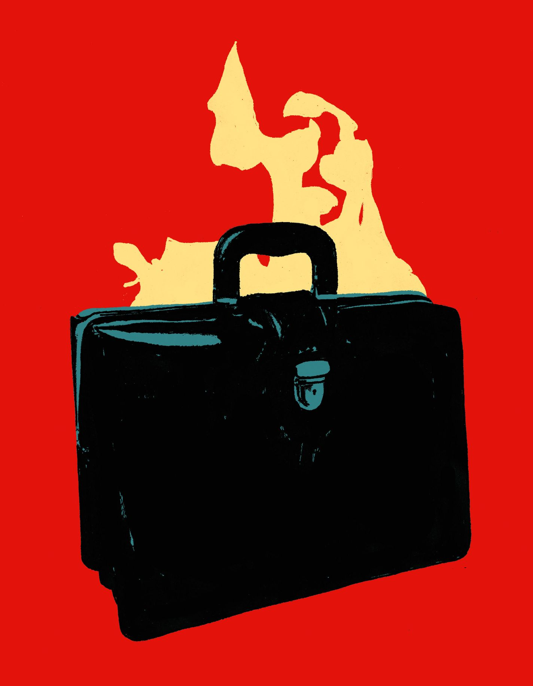image: Fede Yankelevich
These challenges point to deeper tensions in American defence strategy. From 1992 American military planners held to what was known as the “two-war” standard. America’s armed forces had to be ready to fight two simultaneous medium-sized wars against regional powers—think Iraq or Iran—rather than simply a single big war. In 2018 the Trump administration changed this to a “one-war” standard: in practice, a commitment to be able to fight either a war in Europe or in Asia, but not both at the same time. Mr Biden’s administration stuck with this approach.
The aim was to instil discipline in the Pentagon and to bring ends into line with means: America’s defence budget is virtually flat in real terms, while Chinese defence spending has soared. But the risk, argued critics, was that the one-war standard would tempt enemies to open a second front—which could then force America to either back down or resort to unappealing options, like nuclear threats.
What risks do America and its allies run by being so stretched across diplomatic and military realms? If the war in Ukraine stays an open sore in Europe and the Middle East remains ablaze, the West will struggle gravely should another serious crisis erupt. One risk is that adversaries simply capitalise on chaos elsewhere for their own ends. If America were bogged down in a Pacific war, for instance, Iran would surely feel more confident of getting away with a dash for nuclear weapons.
Even more worrying is the prospect of active collusion. European military planners give weight to the possibility that Russia might conduct menacing manoeuvres during a crisis over Taiwan in order to divert American attention and tie down its allies, preventing them from lending a hand in Asia. As in the cold war, each crisis, no matter how parochial or trivial, might come to be seen as a test of American or Chinese power, drawing each country in.
Then there are the surprises. Western intelligence agencies have their hands full watching China and Russia. Few expected Hamas to throw the Middle East back into turmoil as it did on October 7th. Civil wars and insurgencies in the Democratic Republic of Congo, Mali, Myanmar, Somalia and Sudan have all been neglected, diplomatically, even as Russian influence in the Sahel continues to grow. Meanwhile on November 10th dozens of Chinese ships circled Philippine vessels, blasting one with water cannon, as the latter attempted to resupply an outpost on Second Thomas Shoal in the South China Sea, which China claims as its own. If the confrontations worsen, the terms of America’s defence treaty with the Philippines may eventually oblige it to intervene.
Dexterity needed
Amid disorder, strategists talk about the importance of “walking and chewing gum”. It is a uniquely American metaphor that once referred to performing two trivial activities at once, and now explains the importance of geopolitical multi-tasking. Others are available. In his forthcoming book, “To Run the World”, Mr Radchenko, the historian, quotes Zhou Enlai, China’s premier, identifying America’s predicament in 1964: “If there were just a few more Congos in Africa, a few more Vietnams in Asia, a few more Cubas in Latin America, then America would have to spread ten fingers to ten more places…we can chop them off one by one.” ■
Can the Mediterranean become Europe’s energy powerhouse?
Inside the push to make the sunny south a “green” hydrogen hotbed
Listen to this story.Enjoy more audio and podcasts on iOS or Android.
Tourists on Mallorca might now marvel at a new attraction on the Mediterranean island: a miniature economy entirely energised by “green” hydrogen. At its heart, two solar plants power an electrolyser, which splits water into oxygen and hydrogen, creating carbon-free fuel. The hydrogen can then propel buses, be injected into the island’s gas grid, and power fuel cells at hotels and the port. “The project shows what is possible,” says Belén Linares, head of innovation at Acciona Energía, a renewable-energy firm that is one of the project’s investors.
There is one snag: the hydrogen has yet to materialise. Because of a design flaw, the electrolyser, which is made by Cummins, an American firm, has been recalled. Importing green hydrogen, which is derived from renewable sources, is impractical. Buses and fuel cells stand unused. A newly elected local government also appears less interested. The previous administration talked “a lot of hot air”, according to a quote in the local press by the new mayor of Palma, the island’s capital.
Boundless possibilities, or hot air? The same question also hangs over a wider green-hydrogen economy, which European governments hope to see emerge in the Mediterranean basin, turning the region into a sun-fuelled counterpart to a wind-driven northern dynamo already taking shape around the North Sea. The prize is large. If plans for Europe’s southern powerhouse go well they will give the continent access to plenty of cheap renewable energy and allow it to clean up its carbon-spewing heavy industry.
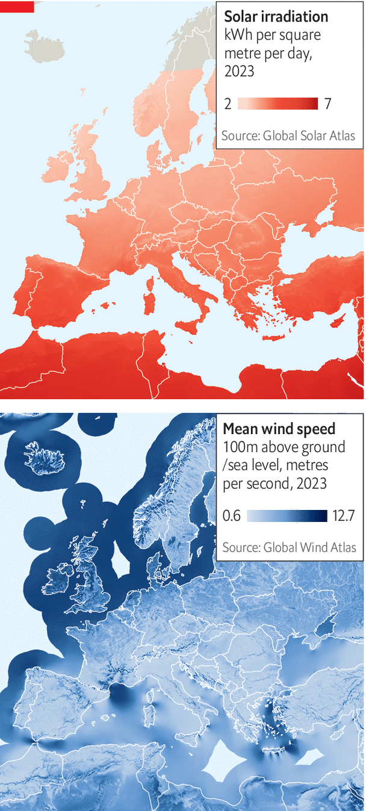image: The Economist
The Mediterranean has always been a conduit for energy. From the days of Roman dominance to the 19th century it was manpower in the form of slaves. Today it is mostly natural gas. Half-a-dozen pipelines connect Europe to Africa and the Middle East. The EU depends on the region for over a third of its natural-gas imports. In the age of renewable energy, countries on the Med boast some of the best conditions on Earth for harvesting natural forces.
Solar capacity shows vast potential (see map). Spain basks in a daily average of 4.6 kilowatt-hours (kWh) of sunlight per square metre and Morocco in 5.6kWh, double what Germany can expect. Sparse populations mean that Spain and Portugal have ample land for such plants, as do the deserts of north Africa and the Middle East. In parts of Morocco and Mauritania both sun and wind are abundant, forming rare sweet spots where electrolysers can run virtually non-stop. “There are only ten such locations around the world,” explains Benedikt Ortmann, who runs the solar business of BayWa, a German energy and construction company.
Tapping this reservoir of renewable energy is not a new idea. In the early 2000s an association backed by dozens of corporations, mostly German, came up with the idea of plastering the Sahara with giant solar plants. But support for Desertec, incorporated in 2009, quickly evaporated mainly because of the cost of the technology. The development of better and cheaper means of harvesting the sun’s rays is behind a revival of the idea. According to the International Renewable Energy Agency, the average cost of electricity from utility-scale solar plants declined from $0.45 per kWh in 2010 to $0.05 last year.
Transporting the energy north, to where it is needed, is now also more feasible. Desertec’s plan involved undersea cables, which have limited capacity. But now cheap and efficient electrolysers can convert electricity into hydrogen at source. This can then be transported as a gas or a derivative, such as liquid ammonia. Analysts expect that in a few years green hydrogen from north Africa will cost under $1.50 per kilogram, probably making it cheaper than “blue” hydrogen, which is derived from natural gas and requires the resulting carbon to be captured and stored.
Demand for energy from the south is much more likely to materialise than in the days of Desertec, too. Hydrogen and its derivatives will be badly needed as carbon-free feedstocks for Europe’s steel and chemicals industries. Of the 20m tonnes that the eu has set as a consumption target by 2030, much will come from its southern fringe and north Africa.
The Mediterranean’s position as Europe’s southern powerhouse is not, however, a given. Europe has to jump-start a market for a new source of energy and do so in a deregulated arena with many competing players. “It’s a chicken-and-egg problem,” says Kirsten Westphal of the German Association of Energy and Water Industries, a lobby group. Simultaneously ramping up demand and supply is a delicate balancing act. Companies are hesitant to commit themselves to signing long-term offtake agreements if they are unsure about the future availability and pricing of hydrogen. This, in turn, discourages producers from making crucial investment decisions. It does not help that political instability in north Africa increases risks and thus the cost of capital.
Yet the biggest problem is linking both sides of the market, which starts with establishing physical connections. Most of the hydrogen will first need to be transported by ship, probably in the form of ammonia (liquid hydrogen, which has to be kept at -253°C, is tricky to move around). But shipping capacity is limited. James Kneebone of the Florence School of Regulation estimates that, even if it were technically possible, repurposing the entire existing global fleet of vessels able to transport liquefied natural gas could only deliver some 6.5m tonnes per year. That leaves a reliance on pipelines.
Pipe dreams
Experts are divided over whether existing gas networks can be upgraded for hydrogen, and building new pipelines is expensive. Geopolitical turmoil may deter investments in pipelines as well as hydrogen production. All three corridors identified by the eu through which hydrogen could flow in the Mediterranean basin cross troublesome territory. Hydrogen piped from Mauritania would ideally go through Western Sahara but Morocco’s control of the region is disputed. An alternative under consideration is an offshore route via the Canary Islands.
Once built, pipelines are vulnerable to political interference. In November 2021 Algeria’s rocky relations with Morocco led to a cutting off of diplomatic relations and an interruption of gas flows through the Maghreb-Europe pipeline, which connects Algeria’s gasfields with Spain, via its neighbour’s territory.
Closer to home, things are no less complicated. An agreement for an underwater pipeline connecting Barcelona to Marseille, whence hydrogen could be transported from Spain through existing infrastructure via France to Germany, could still get caught up in a spat between Germany and France over whether nuclear power should be considered “green”. Moreover, Air Liquide, a French firm that is the world’s largest producer of industrial gases, is lobbying hard against a project that would devalue its own network of hydrogen pipelines.
Europe has no choice but to confront the myriad problems if it wants to meet its ambitious targets to reduce carbon emissions. Steps already taken include the European Commission’s launch of half a dozen initiatives from a “hydrogen accelerator” to spread the use of the gas to a “European hydrogen bank” to jump-start trade. More important, the commission has allowed subsidies to flow by relaxing state-aid rules, so member countries can support firms in their efforts to decarbonise. Funds have also been earmarked for hydrogen pipelines, such as a 3,300km link from Algeria and Tunisia to Austria and Germany. Hydrogen projects in north Africa will benefit from investment from institutions such as the European Bank for Reconstruction and Development.
Some member states want to move faster. Spain and Portugal have embarked on ambitious national strategies aiming to transform the Iberian peninsula into a green-hydrogen hub. But it is Germany, which will have to import up to 70% of the hydrogen needed to decarbonise its mighty heavy industry, that is keenest. Germany has set aside over €8bn ($8.6bn) to help its firms go green and on November 14th its government announced further subsidies for building a network of hydrogen pipelines. In a show of zeal a couple of years ago, the country’s foreign office embarked on “hydrogen diplomacy”, complete with half a dozen “hydrogen embassies” in key countries. More recently, the ministry of economic affairs became the first provider of funds to H2Global, a platform for trading hydrogen.
Most important, Germany seems to acknowledge that it needs to give in order to get. It appears not just happy to see the installation of solar plants and electrolyser farms in Africa, but is ready to help create local jobs, upgrade grids and build desalination plants (electrolysers need a lot of pure water). In time Germany may even accept that parts of its heavy industry could migrate to where the hydrogen is produced. “The industrial map always follows the energy map,” observes Simone Tagliapietra of Bruegel, a think-tank.
Such schemes are vital if Germany is to avert a dependency on unpredictable authoritarian regimes for energy, as it did with Russia and gas. “To avoid a repeat with hydrogen, Germany needs to build true partnerships,” says Andreas Goldthau of Erfurt University. If all goes to plan and Europe’s southern dynamo gets up to speed, places like Mallorca will be buzzing not just because of its beaches and nightlife, but with the energy sparked by hydrogen electrolysers. ■
Whether the summit ends in breakdown or breakthrough depends on one man
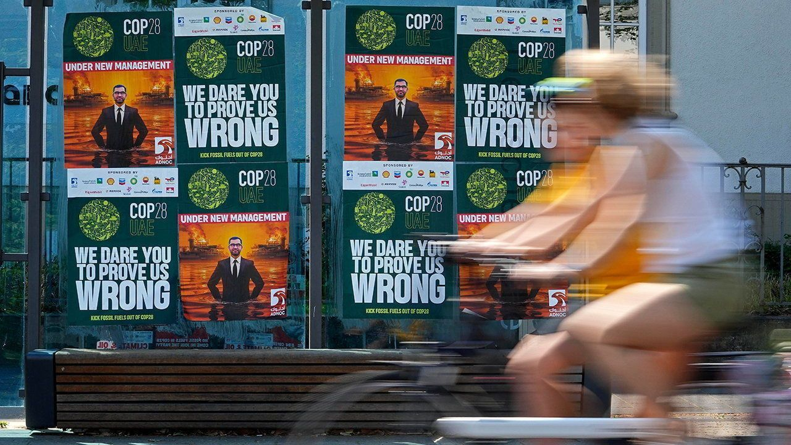
Listen to this story.Enjoy more audio and podcasts on iOS or Android.
The United Arab Emirates, venue for cop28, the latest climate summit convened by the United Nations, is a controversial choice. Some 70,000 climate advocates, diplomats and other hangers-on will attend an event that begins on November 30th in Dubai, one of the gleaming cities built on wealth that fossil fuels have brought to the region. The fact that the world’s most important climate gathering will be hosted by a leading oil producer has sparked outrage among environmentalists. That the summit’s president, Sultan Al Jaber, runs adnoc, the uae’s national oil company (noc), is proof, whisper conspiracists, that the fix is in on behalf of Big Oil.
Yet from Abu Dhabi on the Persian Gulf, the shipping route to global markets for the world’s greatest concentration of oil reserves, to Fujairah on the Gulf of Oman, an entrepot abuzz with tankers carrying Russian oil evading Western sanctions, comes a sense of vulnerability to climate change. The region is short on water and home-grown food. The rising heat of summer is becoming inhumane. The cities built on these desert sands are at risk from a rising sea level. That the uae shares the threat from increasing global temperatures makes the gathering no less fraught.
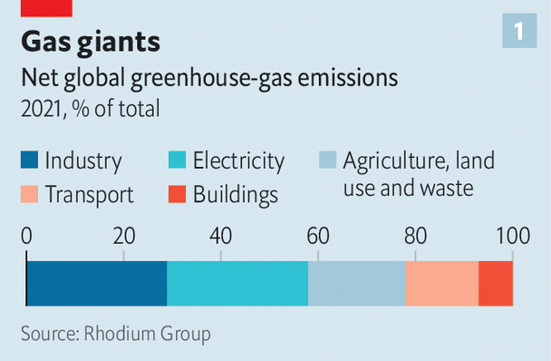image: The Economist
So low is trust among many delegates that the talks may break down. That would be alarming. A un report analysing the national climate-action plans of the 198 parties to the cop found them woefully inadequate for tackling emissions (see chart 1) and hence achieving the goal of limiting the global temperature rise called for in the Paris agreement of cop21 in 2015. In short, the stakes are high. Amid the summit’s myriad technical and procedural goals, three big topics cry out for action.
The first is the task of cracking down on emissions of methane, an overlooked greenhouse gas (ghg). The second is the need to fill massive shortfalls in climate finance. And the third is an ideological battle over how and how fast to end the use of fossil fuels. The outlook for meaningful progress can be summed up as good, bad and ugly, respectively.
The good news surrounds methane, a ghg that is much shorter-lived in the atmosphere than carbon dioxide but causes at least a quarter of atmospheric warming. Fred Krupp, head of edf, an environmental group, insists that addressing methane “is the single fastest opportunity available to slow the rate of global warming”.
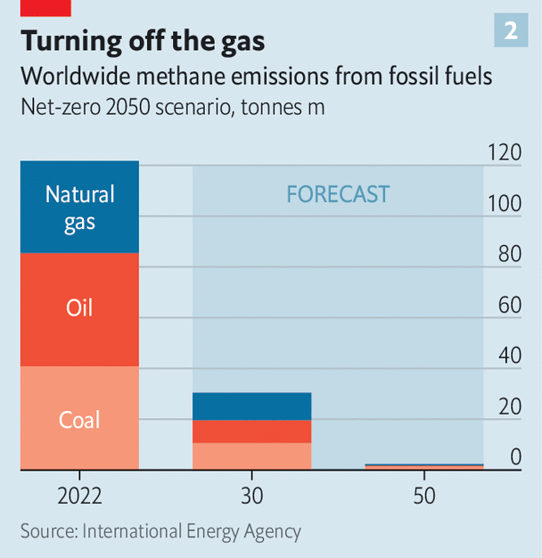image: The Economist
As methane is the main component of natural gas, tackling emissions from the energy industry would have a significant impact (see chart 2). And often the payback is quick since methane neither vented nor flared during gas extraction can be sold, says Bjorn Sverdup of the Oil and Gas Climate Initiative (ogci), a consortium of a dozen leading oil and gas firms. Its members have reduced their methane emissions roughly by half since 2017, from a leakage rate of 0.3% of total marketed gas to 0.15% in 2022, using technologies that monitor leaks and improve operations. They have pledged to keep that level below 0.2%.
Rumours suggest that many nocs are resistant but Mr Sverdup reports that “momentum is building for action at cop” even among those companies. As part of a deal struck this week with America, China (the world’s largest methane emitter) says it will, for the first time, include the gas in its national climate plan. The eu has also just agreed strict curbs on methane emissions from fossil fuels, including imports. A credible side deal involving many big oil companies “would mean more than an ambitiously worded diplomatic communiqué” from official proceedings, reckons Mr Krupp. Mr Al Jaber has been pressing big oil and gas firms hard in private to commit to slash methane emissions.
The prospects for improved climate finance are gloomier. Emerging economies will complain about the failure of the rich world to keep its promises. The $100bn that was due to have been provided by 2020 by rich countries has yet to turn up in full. At cop27 in Egypt last year a “loss and damage” fund was agreed in principle, to compensate vulnerable countries (which often contribute the least emissions). After an acrimonious process, negotiators recently agreed to give the World Bank a temporary role in hosting this new facility but failed to agree to fund it. The eu may announce some funding for it at cop28.
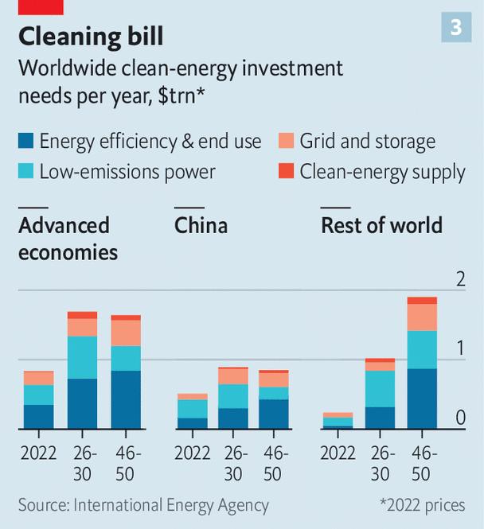image: The Economist
Armond Cohen, head of catf, an environmental group, calls $100bn “the tip of the iceberg” compared with the trillions of dollars needed annually by 2030 and beyond to transform energy systems, mostly in energy-hungry economies of the developing world (see chart 3). Carlos Pascual of S&P Global, a financial-data firm, insists “those trillions of dollars will not come from the public sector, so we have to leverage the private sector.” Rumours suggest that the uae wants to play a catalytic role by launching a $25bn global climate-finance fund seeded with its own oil riches.
The third arena of battle is the ugliest. Much blood will be spilt over the question of whether fossil fuels should be “phased down” or “phased out” and whether the use of “abatement” technologies (which enable the capture and storage of ghg emissions from energy use) should permit the continued use of fossil fuels.
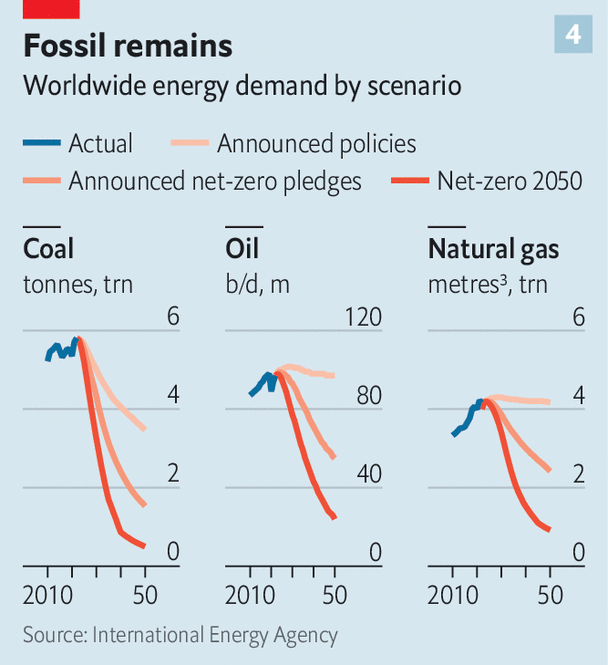image: The Economist
A deal is hard to reach because the legitimate climate ambition of a rapid end to burning fossil fuel runs into the equally legitimate reality of fossil dependence (see chart 4). As Mr Cohen observes, “You can wish fossil fuels away, but they still comprise 80% of world energy supply and are growing.” A new scenario from the iea, a global forecaster, for achieving net-zero emissions envisions a significant amount of fossil-fuel use even in 2050 (albeit at much lower levels than today), making a mockery of talk of rapid phase-out.
At least the direction of travel is clear if not the pace, with fossil fuels likely to peak and decline in coming decades as efficiency, renewables and alternative clean fuels take off. But when it comes to technologies for abatement of emissions like carbon capture and sequestration (ccs), scepticism runs deep in some quarters, including countries that want a fast end to fossil fuel and which think this will be a “get-out-of-jail-free card” for dirty energy.
If negotiators can agree to allow well-monitored use of abatement, it would permit a managed end to fossil-fuel use that spares consumers painful supply shocks. The ipcc, the un’s official climate-science body, makes clear that technologies for “negative” emissions could well be needed at massive scale in the second half of the century, which means nascent abatement technologies need a big push now.
The uae wants to play a leading role on climate innovation, too. It has been investing heavily in decarbonisation. A big ccs project capable of removing ghgs equivalent to the annual emissions of half a million petrol-powered cars was unveiled in September. adnoc recently brought forward its net-zero ghg target for its operations by five years to 2045. It stopped routine methane venting and flaring long before its peers. The company is spending nearly $4bn on undersea cables to ship carbon-free electricity to offshore rigs to replace burning natural gas.
Huge solar farms run by Masdar produce the world’s cheapest renewable energy. This Emirati clean-energy giant, in which adnoc has a stake, is the world’s second-biggest developer of clean energy. It has committed to installing 100 gigawatts of renewable-energy capacity globally by 2030, up from 15 gigawatts in 2021. How did this green behemoth emerge in a land flush with oil riches? It was started back in 2006, before the solar revolution took off and climate tech became fashionable—by Mr Al Jaber. ■
Listen to this story.Enjoy more audio and podcasts on iOS or Android.
In January 1944 the Office of Strategic Services, an American wartime intelligence agency, issued a short document. The “Simple Sabotage Field Manual” offered advice on how ordinary citizens in occupied Europe could disrupt the German war machine.
To cause physical damage, the guide tells the “citizen-saboteur” to use everyday items like salt, nails, pebbles and candles as weapons. This bit of the guide is a window into historical derring-do: dried-up sponges that can expand to plug sewer systems, jammed locks on unguarded buildings, various references to emery dust.
But the guide also outlines a less direct sort of sabotage, which is alarmingly familiar to anyone who works in an office today. This form of obstruction involves behaviour that confuses, demoralises and delays. Manager-saboteurs should ensure that three people have to approve things when one would do. Employees should spread disturbing rumours. Everyone should “give lengthy and incomprehensible explanations when questioned”. At some point a wartime effort to hurt the Nazis appears to have been mistaken for a serious guide on how to run the modern workplace.
No bit of the manual is more recognisable than its advice on how to turn meetings into weapons of mass distraction. Hold them when there is more important work to be done, it urges. Talk as often as possible and at immense length. Reopen questions that have already been decided. Bring up irrelevant issues whenever you can.
It’s hard not to read all this and ponder if your own organisation is being targeted by an enemy. And once that thought enters your mind, you also start to wonder whether all sorts of behaviour reflect instructions in a revised edition.
Call hybrid meetings whenever possible to maximise inefficiency. If you are in the room together, initiate side conversations to sow confusion among remote attendees.
If you are on Zoom, unmute yourself slowly or not at all. Pretend not to be able to hear anything even when you can. Look baffled. Put on eight different pairs of headphones. Shrug theatrically. Entire geological eras can pass in this way.
Alternatively, dial into the meeting on your phone, unmute yourself and put the phone in your pocket. Go for a long walk. If this is done right, a single person can force tens of others to abandon a meeting.
Always turn up to meetings a few minutes late. This is especially important if you hold a senior role. Nothing will happen until you get there except for some awkward interchanges about weekend plans. If discussions have started, ask for a quick recap. If you have co-conspirators, stagger your arrival times so that you are constantly going back to the beginning.
Don’t have an agenda. Just turn up and look expectant. If there is pre-reading, don’t do it. Never agree on action items or take minutes.
If there is an agenda, take advantage of “the law of triviality”, a rule of thumb coined in 1957 by Cyril Northcote Parkinson. This refers to an imaginary committee whose members are asked to decide on proposals for a nuclear power plant and a new bike shed. Lacking expertise in nuclear power, the committee nods the plant through. Where everyone is an authority, like the bike shed, endless debate ensues. Whatever your version of the bike shed is—coffee machines, Oxford commas—bring it up early.
If you are giving a presentation after someone else, take an absolute age to find it. Faff around in the wrong folder. Act as if you can’t see the slide-show button until someone else points it out.
Say things like “there are no bad ideas”, so that everyone offers up their own bad ideas. At the end ask “does anyone have anything else?” and wait for as long as it takes for someone to fill the silence. Hopefully, it will be about the coffee machine and everything will kick off again. Conclude by saying that you think it has been a very useful meeting but don’t specify in what way.
If you are behaving like this inadvertently, listen to the latest episode of Boss Class, our management podcast, to find out how to run a meeting better. If you are trying to cause disruption, your cover is blown.
Read more from Bartleby, our columnist on management and work:
Listen to this story.Enjoy more audio and podcasts on iOS or Android.
“His eyes were very strong. Strong, shining eyes.” So Son Masayoshi explained his decision back in 2000 to invest $20m in a Chinese e-commerce startup founded by Jack Ma. By the time SoftBank, Mr Son’s investment group, finished selling most of its stake in Alibaba earlier this year, it had made $65bn from the gamble. Less successful was the Japanese billionaire’s bet on Adam Neumann, the charismatic founder of WeWork, an office-rental firm that declared bankruptcy on November 6th. SoftBank is estimated to have torched around $14bn backing it.
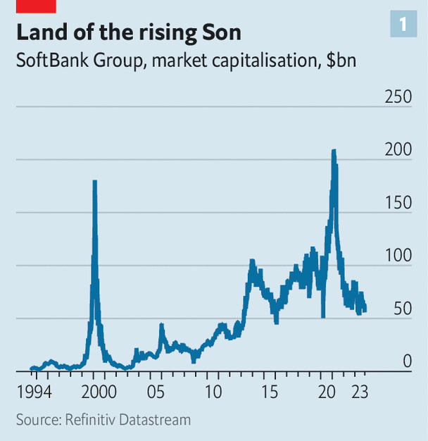image: The Economist
Mr Son’s career has been a tale of soaring highs and crushing lows that have followed the hype cycles in tech. A strategy of doling out big cheques to buzzy firms has served SoftBank well in the upswings but poorly in the downswings. Now, after a bruising year, the indefatigable Mr Son is jumping on tech’s latest craze for all things artificial intelligence (AI). It promises to be a wild ride.
SoftBank, which began life as a software distributor in Japan, reinvented itself amid the dotcom boom of the 1990s as an investment vehicle, buying stakes in hundreds of startups, including Yahoo, a once-popular search engine. At the height of dotcom mania, Mr Son was briefly the richest man in the world. After the bubble burst, he reoriented SoftBank around mobile internet, launching a telecoms business in Japan in 2005, buying a majority stake in Sprint, an American carrier, in 2013, and acquiring Arm, a British designer of smartphone chips, in 2016.
A year later Mr Son launched SoftBank’s Vision Fund, a $100bn war chest bankrolled in part by Saudi Arabia’s sovereign-wealth fund, and began pouring capital into loss-making startups. Despite some notable flops, including WeWork, by the summer of 2021 the investment binge looked like a resounding triumph, with the Vision Fund and its successors having made a cumulative gain of $66bn. Since then, a collapse in tech valuations has flipped that into a $6bn loss (see chart).
SoftBank is doubly exposed to higher interest rates, which decrease the value of startups whose profits lie mostly in the future and increase the cost of debt, of which the investment group has plenty. In May S&P Global, a rating agency, downgraded SoftBank’s credit deeper into junk territory. To ease jittery investors, it has sold assets and expanded its cash pile from $25bn two years ago to $34bn, equal to a quarter of its interest-bearing debt. The initial public offering of Arm, in which SoftBank retains a 90% stake, has also made its portfolio more liquid.
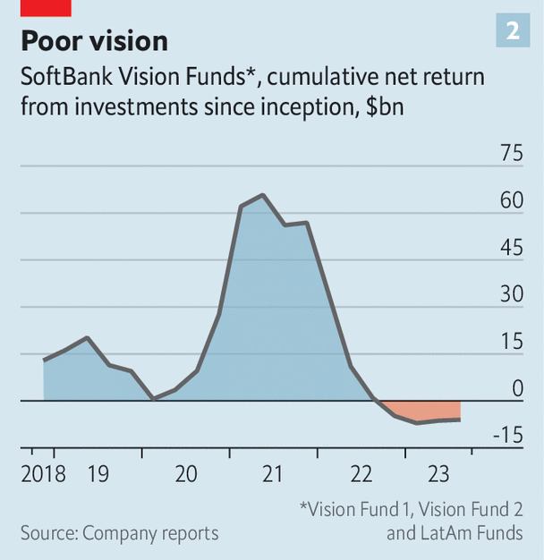image: The Economist
Mr Son is now itching to start writing cheques again, having declared SoftBank ready to switch back into “offence mode”. The firm has done only 23 deals so far this year, compared with 125 last year and 251 in 2021, according to PitchBook, a data provider. Mr Son has his eyes on AI, which he predicts will “surpass the total intelligence of humankind by ten times in ten years”.
The danger is that the investment giant is entering the market at its frothiest. Valuations of AI companies have rocketed in recent months as investors have piled into competitive fundraising processes. As a result, SoftBank is also looking to carve out novel investment opportunities for itself, says Alex Clavel, co-head of the group’s Vision Funds.
He gives the example of GreenBox, a new joint venture between SoftBank and Symbotic, a robotics company, that will develop and rent out automated warehouses. In September SoftBank was also reported to be in discussions with OpenAI, the startup behind ChatGPT, and Jony Ive, a designer of the iPhone, to fund the development of an AI device powered by Arm’s chips.
Yet other elements of SoftBank’s approach to investment will remain. “We usually put our eggs in fewer baskets,” says Mr Clavel, a pattern he expects to continue. Mr Son’s willingness to trust his gut is also unlikely to change.
In a decade’s time, when Mr Son’s prognostications on AI have been tested, he will be 76, pointing to another question hanging over SoftBank: succession. Mr Son, who hopes the business will endure for at least 300 years, began talking publicly of handing over the reins in 2015. A string of potential successors have since left and SoftBank continues to revolve around its enigmatic founder. If it is to last, Mr Son must ready it for a future without him. ■
A celebrity golf tournament could tee up something bigger
Listen to this story.Enjoy more audio and podcasts on iOS or Android.
From Korean horror to Palestinian romance, Netflix covers every genre—almost. Among tens of thousands of hours of video on its servers, the world’s largest streaming platform has long ignored the category that draws bigger audiences to television than anything else: live sport.
That changed at 3pm on November 14th in Las Vegas with the Netflix Cup, a celebrity golf tournament which was streamed live to the company’s 250m subscribers. The unconventional show, featuring teams made up of professional golfers and Formula One racing drivers, was billed as a one-off. It may turn out to be a warm-up for something bigger.
Netflix says the purpose of the cup was to promote “Full Swing” and “Drive to Survive”, its successful docu-series about golf and racing. Lately the company has been active in a niche that it calls sports shoulder-programming, commissioning factual series such as “Break Point” (following professional tennis players) and “Unchained” (tracking the Tour de France), as well as profiles of stars such as David Beckham.
Showing sport itself has not tempted the streaming giant. Rights are wildly expensive—America’s National Football League (nfl) earns more than $10bn a year from its media deals—as well as low margin: the more value broadcasters get out of the games, the more the leagues demand when the rights come up for renewal. Last year Ted Sarandos, Netflix’s co-chief executive, said the company was “not anti-sports, we’re just pro-profit”.
That wording left the door open to a different approach—and the Netflix Cup suggests one. By owning the tournament, Netflix will keep any upside. “If they create value, they will enjoy the fruits of that, as opposed to creating value for another sports league who might turn around and ask them for an increase,” says Brandon Ross of LightShed Partners, a research firm. Netflix has reportedly explored buying small sporting outfits such as the World Surf League on this basis.
The bigger question is whether the company might one day bid for rights to established leagues. Analysts increasingly believe that it will, though they disagree on when. “Netflix’s next frontier has to be more sports rights,” says Michael Nathanson of MoffettNathanson, another research company, who sees the golf cup as a test of sport’s ability to attract viewers to the platform, and of Netflix’s ability to execute live programming. He sees rights to America’s National Basketball Association, which come due for renewal in 2025, as a possible future target. Mr Ross thinks that is too soon.
Netflix downplays all such talk. But it has more reason than in the past to bid for sports. Since its subscriber growth stalled early last year, leading to a plunge in its share price, Netflix’s executives have racked their brains for new ways to expand. Last year the company introduced advertising, which it had previously dismissed. This year it has cracked down on users sharing passwords, which it once encouraged. Sport could help to attract new subscribers, particularly in foreign markets where the streamer has struggled to break through. Cricket turbocharged the early growth of Disney+ in India—though it proved so expensive that Disney eventually dropped it.
Netflix’s newish ad business also makes sport more attractive. Sport appeals to advertisers, who say that it engages audiences like nothing else, while being reliably brand-safe (some clients balk at showing off their products alongside, say, the bloody drama of “Squid Game”). Live action means commercial breaks can’t be skipped; fans are loth to slip out to put the kettle on for fear of missing the action. And sport offers advertisers unmatched scale, with nfl games reliably drawing more than 20m concurrent viewers in America on Sunday nights.
If Netflix were to take to the field it could be game-changing. Sports-rights holders have cashed in following interest from deep-pocketed streamers such as Apple, Amazon and Google (which last year bought nfl rights for YouTube). But they are nervous that old-media bidders are tightening their belts. Disney (which owns espn, a giant sports network) and Warner Bros Discovery are both aggressively economising as their legacy cable networks shrink. “The entire [sports] content world right now…is hoping that Netflix gets involved in bidding for sports rights,” says Mr Ross. “And all of the traditional media buyers are praying that Netflix doesn’t.”
Netflix, meanwhile, is simply praying that its live-streaming technology holds up. Its first live show, a comedy special with Chris Rock in March, went well. But in April a live episode of “Love is Blind”, a dating contest, was a technical fiasco. The Netflix Cup again demonstrated that live television is tricky to pull off. Presenters struggled to explain the complicated format of the tournament, microphones malfunctioned and within the show’s first ten minutes an animal-rights protester burst onto the course, before being wrestled out of shot. Whether or not Netflix can do sport, it can certainly do drama.■
The mega-rich are taking to the waves like never before
Listen to this story.Enjoy more audio and podcasts on iOS or Android.
Even oligarchs, tech barons and other super-rich folk might have been expected to reconsider spending hundreds of millions of dollars on a superyacht amid gathering global turmoil. In 2020, as covid-19 spread, “I spent my days doing worst-case scenarios and drawing up the budgets to go with them,” says Giovanna Vitelli, chairwoman of Azimut Benetti, the world’s biggest maker of such craft. Then Western sanctions on Russia after its invasion of Ukraine lost her a tenth of her customers.
Rather than sinking, the makers of superyachts are riding a wave. Recent events, says Ms Vitelli, are “unexpected”. Her firm’s turnover has surged by around 20% since the start of 2022, as has that of the entire sector. A recent survey by Fortune Business Insights, a market-research firm, found that “Most, if not all, yacht-brokerage firms are reporting record sales at the world’s leading shipyards.” Future Market Insights, another market-researcher, expects the industry’s annual revenues to more than double over the next ten years, to $19.9bn.
In the past surging sales have been the result of ever more would-be mariners joining the ranks of the mega-rich. Yet this year the number of the world’s billionaires dropped to 2,640 from 2,668 in 2022, according to magazine. A yearning for the lonely sea and the sky could be another explanation. The pandemic first hit sales but has since fostered what Fortune Business Insights terms an “increase in the desire for seclusion and social distancing among affluent individuals”. Ms Vitelli detects a deeper psychological effect of the pandemic: “a realisation that life is short and that it can give us surprises”.
The latest designs reflect that introspective mood. There is less emphasis on ostentation and more on customising vessels to suit the tastes and enthusiasms of owners and their families. Owners are also considering their outsized environmental impact. Solar panels, wind turbines and hybrid-propulsion systems are increasingly common on luxury yachts.
Jeff Bezos, the boss of Amazon, may be setting a new trend. He took delivery in April of , the world’s largest sailing yacht at 127 metres. There is a drawback to relying on wind power. is followed everywhere by a diesel-engined support vessel carrying extra supplies and even a helicopter pad. At 75 metres it almost qualifies as a mega-yacht, too.■
Listen to this story.Enjoy more audio and podcasts on iOS or Android.
Forgive yourself if you have forgotten that Google, owned by Alphabet, is on its third month in the dock during the biggest anti-monopoly trial since America’s Department of Justice (DoJ) won a conviction against Microsoft, another tech giant, a quarter of a century ago. Though some in antitrust circles hoped it would be the “trial of the century”, so far the proceedings, which are expected to wrap up shortly, have had little of the of the historic Microsoft showdown. The excitement may increase when the verdict is announced next year. For now, no one can confidently predict the outcome because Amit Mehta, the judge, keeps his cards close to his chest. But in the meantime, Schumpeter spoke to someone once lionised by , a magazine, as “The Man Who Ate Microsoft”. How does David Boies, the government’s lead trial lawyer in the Microsoft case, see the similarities and differences between the two antitrust battles?
Mr Boies makes clear that he has not been present in the District of Columbia courtroom to witness the Google trial. At 82, he is still busy, including serving as counsel on two pending cases against Google (which suggests he may not be an impartial observer). Yet he says media coverage of the trial is sufficient to form some opinions, and two things stand out. First, like Microsoft, Google came to court with a history of innovation and consumer success, effectively saying “Trust us, we know what’s best for consumers.” Second, the DoJ may not have challenged that trustworthiness forcefully enough. “During the Microsoft case, even if you were a casual observer, you were constantly confronted with attacks on Microsoft’s credibility. I haven’t seen that in the press,” he says. He is not alone. Broadly, the feeling is that the DoJ has not yet dealt Google a spectacular knockout blow.
Mr Boies has had some setbacks in an otherwise illustrious career, including representing The Weinstein Company, co-founded by Harvey Weinstein, a former Hollywood producer jailed for rape. But when it comes to antitrust, he has played starring roles in two trials that have helped shape the tech landscape for 50 years. He first led IBM’s successful defence against an antitrust case in the 1960s. Though the personal-computer giant won, it was so rattled by years of investigations, he says, that it gave Microsoft, then an upstart, to sell its Windows software widely, rather than insisting on exclusivity. Microsoft subsequently leapfrogged IBM. Mr Boies’ role in the IBM case drew the attention of the DoJ’s prosecutors, who recruited him years later to take the lead in their anti-monopoly battle against Microsoft. The government’s victory in that case may have so distracted Microsoft that it helped Google steal a march in the internet-search business.
Whether Google is similarly hobbled in the future will depend, above all, on an issue that is at the crux of the DoJ’s case. That is the annual payments that Google provides to Apple, maker of the iPhone, other smartphone-makers such as Samsung, who use Alphabet’s Android operating system, and providers of browsers such as Mozilla, to ensure it is their default search engine. The amounts are staggering. During the trial it emerged that Google’s payments were as high as $26bn in 2021. The reported that $18bn of that went to Apple. This week, an economist testifying in Google’s defence disclosed that Google pays Apple 36% of the revenues it earns from search advertising via Apple’s Safari browser, suggesting it generates advertising revenues of $50bn from Safari alone. The DoJ argues that these payments prevent competitors from challenging Google, and that because they are generated from digital-advertising revenues that Google shares with the recipients, the latter have less incentive to offer competing search products. It likens the deals to Microsoft’s practice in the 1990s of bundling its Internet Explorer browser with its Windows operating system, making rival browsers such as Netscape harder to install. Mr Boies, who zeroed in on bundling in the Microsoft case, says it is not only harmful to competitors. It hurts consumers, because it deprives them of choice.
Google rejects that claim. It says that default search engines can be changed with a couple of clicks. They are not sticky. For instance, the top search globally on Microsoft’s Bing, a rival, is “Google”, suggesting users willingly switch to their preferred platform. Nor are they exclusive; Bing, too, pays Apple for space on Safari. Google argues that its default payments help lower the cost of phones and other devices to consumers. It says its success in search comes from innovation, not from an illegal monopoly.
Will that narrative prevail? Mr Boies says an antitrust trial is part “morality play”, in which the successful prosecutor should seek to destroy the defendant’s credibility. At the start of the Google trial, the DoJ’s lead lawyer, Kenneth Dintzer, raised the trustworthiness question, accusing Google of trying to conceal documents under attorney-client privilege and turning off the history function on group chats. But on the witness stand weeks later, Sundar Pichai, Alphabet’s boss, proved unflappable. He demonstrated none of the brittle defensiveness Bill Gates, then the boss of Microsoft, had showed during his depositions.
Search and destroy
So the verdict will come down to how Judge Mehta views the default payments. His decision may rest on whether he buys the DoJ’s argument that they foreclose competition, or Google’s defence that they benefit consumers by improving the product. Defeat will cost both sides a lot. If Google loses few believe it would be broken up, but the status of default payments would be thrown into doubt. If deprived of Google’s cash, Apple might build a rival search engine. A loss for the DoJ would be yet another setback for the Biden administration’s efforts to move antitrust cases beyond a focus on consumer welfare. It might try to console itself that a loss would prompt Congress to write new laws to rein in big tech. But given the woeful state of bipartisanship, dream on.■
Read more from Schumpeter, our columnist on global business:
Markets have dealt them a bad hand. They could be playing it better
Listen to this story.Enjoy more audio and podcasts on iOS or Android.
Young investors, as well as everyone starting to save, have no shortage of lessons to learn. The main ones are classics. Begin early to give the magic of compounding time to work. Cut costs to stop that magic from being undone. Diversify. Do not try to time the market unless it is your job to do so. Stick to your strategy even when prices plummet and the sky seems to be falling in. Do not ruin it by chasing hot assets when the market is soaring, others are getting rich and you are getting jealous.
To this time-worn list, add an altogether more dispiriting lesson specific to today’s youngsters: you will not enjoy anything like the returns your parents made. Even accounting for the global financial crisis of 2007-09, the four decades to 2021 were a golden age for investors. A broad index of global shares posted an annualised real return of 7.4%. Not only was this well above the figure of 4.3% for the preceding eight decades, but it was accompanied by a blistering run in the bond market. Over the same period, global bonds posted annualised real returns of 6.3%—a vastly better result than the 0% of the preceding 80 years.
That golden age is now almost certainly over. It was brought about in the first place by globalisation, quiescent inflation and, most of all, a long decline in interest rates. Each of these trends has now kicked into reverse. As a consequence, youngsters must confront a more difficult set of investment choices—on how much to save, how to make the most out of markets that offer less and how to square their moral values with the search for returns. So far, many are choosing badly.
The constant refrain of the asset-management industry—that past performance is no guarantee of future returns—has rarely been more apt. Should market returns revert to longer-run averages, the difference for today’s young investors (defined as under-40s) would be huge. Including both the lacklustre years before the 1980s and the bumper ones thereafter, these long-run averages are 5% and 1.7% a year for stocks and bonds respectively. After 40 years of such returns, the real value of $1 invested in stocks would be $7.04, and in bonds $1.96. For those investing across the 40 years to 2021, the equivalent figures were $17.38 and $11.52.
This creates two sources of danger for investors now starting out. The first is that they look at recent history and conclude markets are likely to contribute far more to their wealth than a longer view would suggest. A corollary is that they end up saving too little for retirement, assuming that investment returns will make up the rest. The second is even more demoralising: that years of unusually juicy returns have not merely given investors unrealistically high hopes, but have made it more likely that low returns lie ahead.
Antti Ilmanen of AQR, a hedge fund, sets out this case in “Investing Amid Low Expected Returns”, a book published last year. It is most easily understood by considering the long decline in bond yields that began in the 1980s. Since prices move inversely to yields, this decline led to large capital gains for bondholders—the source of the high returns they enjoyed over this period. Yet the closer yields came to zero, the less scope there was for capital gains in the future. In recent years, and especially recent months, yields have climbed sharply, with the nominal ten-year American Treasury yield rising from 0.5% in 2020 to 4.5% today. This still leaves nowhere near as much room for future capital gains as the close-to-16% yield of the early 1980s.
The same logic applies to stocks, where dividend and earnings yields (the main sources of equity returns) fell alongside interest rates. Again, one result was the windfall valuation gains enjoyed by shareholders. Also again, these gains came, in essence, from bringing forward future returns—raising prices and thereby lowering the yields later investors could expect from dividend payouts and corporate profits. The cost was therefore more modest prospects for the next generation.
As the prices of virtually every asset class fell last year, one silver lining appeared to be that the resulting rise in yields would improve these prospects. This is true for the swathe of government bonds where real yields moved from negative to positive. It is also true for investors in corporate bonds and other forms of debt, subject to the caveat that rising borrowing costs raise the risk of companies defaulting. “If you can earn 12%, maybe 13%, on a really good day in senior secured bank debt, what else do you want to do in life?” Steve Schwarzman, boss of Blackstone, a private-investment firm, recently asked.
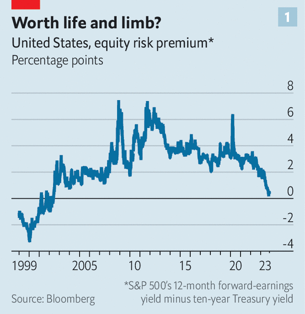image: The Economist
Even so, the long-term outlook for stocks, which have historically been the main source of investors’ returns, remains dim. Although prices dropped last year, they have spent most of this one staging a strong recovery. The result is a renewed squeeze on earnings yields, and hence on expected returns. For America’s S&P 500 index of large stocks, this squeeze is painfully tight. The equity risk premium, or the expected reward for investing in risky stocks over “safe” government bonds, has fallen to its lowest level in decades (see chart 1). Without improbably high and sustained earnings growth, the only possible outcomes are a significant crash in prices or years of disappointing returns.
All this makes it unusually important for young savers to make sensible investment decisions. Faced with an unenviable set of market conditions, they have a stronger imperative than ever to make the most of what little is on offer. The good news is that today’s youngsters have better access to financial information, easy-to-use investment platforms and low-cost index funds than any generation before them. The bad news is that too many are falling victim to traps that will crimp their already meagre expected returns.
A little flush
The first trap—holding too much cash—is an old one. Yet youngsters are particularly vulnerable. Analysis of 7m retail accounts by Vanguard, an asset-management giant, at the end of 2022 found that younger generations allocate more to cash than older ones (see chart 2). The average portfolio for Generation Z (born after 1996) was 29% cash, compared with baby-boomers’ 19%.
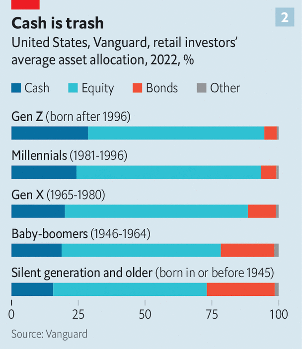image: The Economist
It could be that, at the end of a year during which asset prices dropped across the board, young investors were more likely to have taken shelter in cash. They may also have been tempted by months of headlines about central bankers raising interest rates—which, for those with longer memories, were less of a novelty. Andy Reed of Vanguard offers another possibility: that youngsters changing jobs and rolling their pension savings into a new account tend to have their portfolios switched into cash as a default option. Then, through inertia or forgetfulness, the vast majority never end up switching back to investments likely to earn them more in the long run.
Whatever its motivation, young investors’ preference for cash leaves them exposed to inflation and the opportunity cost of missing out on returns elsewhere. The months following Vanguard’s survey at the end of 2022 provide a case in point. Share prices surged, making gains that those who had sold up would have missed. More broadly, the long-run real return on Treasury bills (short-term government debt yielding similar rates to cash) since 1900 has been only 0.4% per year. In spite of central banks’ rate rises, for cash held on modern investment platforms the typical return is even lower than that on bills. Cash will struggle to maintain investors’ purchasing power, let alone increase it.
The second trap is the mirror image of the first: a reluctance to own bonds, the other “safe” asset class after cash. They make up just 5% of the typical Gen Z portfolio, compared with 20% for baby-boomers, and each generation is less likely to invest in them than the previous one. Combined with young investors’ cash holdings, this gives rise to a striking difference in the ratio between the two asset classes in generations’ portfolios. Whereas baby-boomers hold more bonds than cash, the ratio between the two in the typical millennial’s portfolio is 1:4. For Gen Z it is 1:6.
Given the markets with which younger investors grew up, this may not be surprising. For years after the global financial crisis, government bonds across much of the rich world yielded little or even less than nothing. Then, as interest rates shot up last year, they took losses far too great to be considered properly “safe” assets.
But even if disdain for bonds is understandable, it is not wise. They now offer higher yields than in the 2010s. More important, they have a tendency to outpace inflation that cash does not. The long-run real return on American bonds since 1900 has been 1.7% a year—not much compared with equities, but a lot more than cash.
The name of the third trap depends on who is describing it. To the asset-management industry, it is “thematic investing”. Less politely, it is the practice of drumming up business by selling customised products in order to capture the latest market fad and flatter investors that they are canny enough to beat the market.
Today’s specialised bets are largely placed via exchange-traded funds (ETFs), which have seen their assets under management soar to more than $10trn globally. There are ETFs betting on volatility, cannabis stocks and against the positions taken by Jim Cramer, an American television personality. More respectably, there are those seeking to profit from mega-themes that might actually drive returns, such as ageing populations and artificial intelligence. An enormous subcategory comprises strategies investing according to environmental, social and governance (ESG) factors.
Niche strategies are nothing new, and nor are their deficiencies. Investors who use them face more volatility, less liquidity and chunky fees. Compared with those focused on the overall market, they take a greater risk that fashions will change. Even those who pick sensible themes are competing with professional money managers.
However the ease with which ETFs can be customised, advertised and sold with a few taps on a phone screen is something that previous generations of investors did not have to reckon with. So is the appeal to morality accompanying their marketing. ESG vehicles are presented to youngsters as the ethically neutral option. If there are investments that will save society and the planet while growing your savings at the same time, what kind of monster would buy the ordinary, dirty kind?
This both overstates the difference between ESG and “normal” funds, and papers over their impact on costs and returns. According to a recent study by the Harvard Business School, funds investing along ESG criteria charged substantially higher fees than the non-ESG kind. Moreover, the ESG funds had 68% of their assets invested in exactly the same holdings as the non-ESG ones, despite charging higher fees across their portfolios. Such funds also shun “dirty” assets, including fossil-fuel miners, whose profits are likely to generate higher investment yields if this shunning forces down their prices.
Next to the vast difference between the investment prospects of today’s youngsters and those of their parents, the benefits to be gained by avoiding these traps may seem small. In fact, it is precisely because markets look so unappealing that young investors must harvest returns. Meanwhile, the investment habits they are forming may well last for some time. Vanguard’s Mr Reed points to evidence that investors’ early experiences of markets shape their allocations over many years.
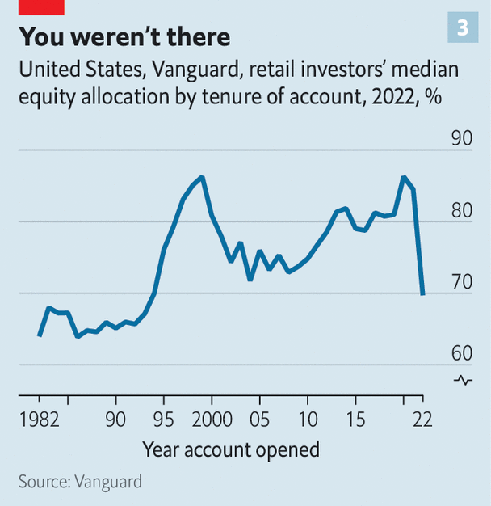image: The Economist
Ordering the portfolios of Vanguard’s retail investors by the year their accounts were opened, his team has calculated the median equity allocation for each vintage (see chart 3). The results show that investors who opened accounts during a boom retain significantly higher equity allocations even decades later. The median investor who started out in 1999, as the dotcom bubble swelled, still held 86% of their portfolio in stocks in 2022. For those who began in 2004, when memories of the bubble bursting were still fresh, the equivalent figure was just 72%.
Therefore it is very possible today’s young investors are choosing strategies they will follow for decades to come. Mr Ilmanen’s treatise on low expected returns opens with the “serenity prayer”, which asks for “the serenity to accept the things I cannot change, the courage to change the things I can, and the wisdom to know the difference”. It might be the best investment advice out there. ■
What can inflation-strugglers learn from inflation-killers?
Why America, Australia, Britain and Canada are lagging behind
Listen to this story.Enjoy more audio and podcasts on iOS or Android.
Could the nightmare be over? Across the oecd club of rich countries, consumer-price inflation fell from a peak of 10.7% in October 2022 to 6.2% in September. The latest data from America and Britain offer more encouragement. And wage growth is slowing. As a consequence, share prices are rising. Investors hope that the world has turned a corner, and that central bankers will soon cut interest rates.
Yet they may be getting ahead of themselves. Last year calculated a measure of “inflation entrenchment”. We found that the disease, symptoms of which first appeared in America, was infecting the whole rich world. We have repeated the analysis, looking at core inflation, unit labour costs, “inflation dispersion”, inflation expectations and Google-search behaviour. We rank ten countries on each indicator, then combine the rankings to form an “inflation-entrenchment” score.
Overall, the data show that inflation is entrenched, maybe more so than in 2022. The country with the worst score then, Canada, would have been only third-worst now. Things are not looking good in the Anglosphere, even after recent improvements. But there are bright spots, such as Italy and Spain. In Japan and South Korea the war might be nearly over. What can strugglers learn from the inflation-killers?
Start with the problem countries. In Australia, our worst performer, the jobs market is on fire. Over the past year labour costs, measured by how much employers pay workers to produce a unit of output, have risen by a chunky 7.1%—faster than in any other country sampled. Nor does anywhere else have more “inflation dispersion”, which we define as the share of consumer prices across the economy that are rising by more than 2% year on year.
Other Anglophone countries have different problems. Data from researchers at the Federal Reserve Bank of Cleveland, Morning Consult, a data firm, and Raphael Schoenle of Brandeis University provide a cross-country gauge of what people expect to happen with prices. Canadians think that consumer prices will rise by 5.7% over the next year, the most of any country in our sample. Canadians are also googling terms related to inflation most often. America does not do very badly on any measure. Equally, it does not do very well.
Inflation’s stickiness may reflect the fact that fiscal stimulus across Anglophone countries in 2020-21 was about 40% more generous than in other rich places. It was also more focused on handouts such as stimulus cheques than on measures to keep businesses alive, which may have further stoked demand. Indeed, a new paper by Robert Barro of Harvard University and Francesco Bianchi of Johns Hopkins University finds evidence for a link between fiscal expansion during the covid-19 pandemic and subsequent inflation.
Monetary policy is another factor at work. When covid struck, central banks in America, Australia, Britain and Canada reduced interest rates by one percentage point on average, twice as big a cut as in other countries in the rich world. This extra stimulus may have pushed up inflation. In the past year or so English-speaking countries have also received lots of migrants, which in the short term can be inflationary, because new arrivals compete for housing, driving up rents. Estimates by Goldman Sachs, a bank, imply that Australia’s current annualised net-migration rate of 500,000 people is raising inflation by around half a percentage point.
So why are countries elsewhere doing better? Japanese people expect prices to rise by just 1.5% over the next year; South Koreans have better things to do online than to search for information about inflation. Recent history could play a role in explaining this. Before covid, rich Asian countries had lived with low inflation for so long that it may have seemed a natural state of affairs. Therefore, following a jump in inflation in 2021-22, behaviour may have shifted in a disinflationary direction more quickly. By contrast, in places like Britain, which experienced inflation surges in 2008, 2011 and 2017, people may have developed a more inflationary mindset.
In Europe inflation expectations have fallen a long way from their peak. The picture is particularly rosy in parts of the continent. Owing to a combination of policy and luck, energy-price rises were not as sharp last year in Italy and Spain as in other countries, which may have prevented people from anticipating further inflation.
France, with a perkier economy, is somewhere between the Anglosphere and Asia. Germany is a different story. Once, its workers were known for their pay restraint. Now, with an uber-tight jobs market, unit labour costs are rising by over 7% a year. Price dispersion is also unusually high. In what will be a source of satisfaction in many European capitals, German economists are increasingly looking at southern European countries with envy. ■
Ray Dalio is a monster, suggests a new book. Is it fair?
The founder of the world’s largest hedge fund comes under scrutiny
Listen to this story.Enjoy more audio and podcasts on iOS or Android.
The tome opens with Ray Dalio laying into an employee he apparently knew to be pregnant. He calls her an “idiot” over and over, until she runs from the room sobbing. The founder of Bridgewater Associates, the world’s largest hedge fund, was supposedly “delighted”. His “probing” of this woman was evidence of his commitment to “truth-seeking” at any cost. The meltdown, which had been recorded, was uploaded to a library of firm meetings. He had it edited into a clip to be shown to future employees.
This is just the first of many damaging titbits in “The Fund”, a new book about Mr Dalio by Rob Copeland, a reporter at the The book’s narrative builds to two points. One is that Mr Dalio’s “principles”, a philosophy he described as being centred on “radical transparency”, are really little more than time-wasting tools which he uses to bully employees. The system requires meetings to be recorded, for employees to rank one another and for them to upload complaints onto a platform. This is supposed to foster an “ideas meritocracy” but instead leads, at best, to petty gripes about how the peas in the cafeteria are too “wrinkled” and, at worst, to a culture of fear. Mr Dalio is supposed to have manipulated this system so that his opinion always mattered most.
The second is that there is “no secret” to Bridgewater’s success. Mr Dalio’s hundreds of research staff write reports he does not even read. Mr Copeland claims Mr Dalio made all the investing decisions himself, or with some input from lieutenants. Far from having a codified set of rules, as he tells clients, he uses hunches and simple “if then” statements such as: if interest rates fall in a country then you should sell its currency. These worked, the story goes, for a while, but the rise of high-frequency traders and quantitative funds, which often follow market “momentum”, eroded his edge. Returns for Bridgewater’s flagship “Pure Alpha” fund have been pretty paltry for the past 10 or 15 years.
The conclusions of the two intertwine: the cult of Bridgewater is pointless. Bridgewater’s employees have time to waste on nonsense because the investing process is simple, really. Mr Dalio might have been a gifted investor—since 1991 he has earned $58bn for those who have bought into his funds—but his efforts to codify investment rules and culture were a waste of time. His legacy will fade.
Mr Copeland’s deep reporting unearthed damning tales, but they seem to have been told so as to place Mr Dalio in the worst possible light. Take, for example, a passage where Mr Dalio invites Niall Ferguson, a celebrated historian, to Bridgewater. Mr Dalio supplied Mr Ferguson with a copy of his book, which offers a sweeping theory of economic history and a model of “the economic machine”—only for Mr Ferguson to tell the assembled staff that there was no way of modelling history since models could not account for the “caprices of decision-makers”. Mr Dalio began shouting at Mr Ferguson, who soon left. Mr Copeland writes that Mr Dalio then sent round a poll asking who won the debate (Mr Dalio triumphed).
It is one of many anecdotes that are supposed to reveal that Mr Dalio is unprincipled. Far from listening to unfiltered criticism he uses his power to silence others. But apparently Mr Dalio later solicited advice asking whether he had behaved inappropriately. His employees implored him not to invite people to Bridgewater just to shout at them—advice to which he is said to have listened. Mr Dalio’s radical transparency might be strange and misguided, but perhaps he is not a hypocrite.
The book’s arguments about Mr Dalio’s investment process are harder still to swallow. Macro funds that follow trends are a dime a dozen, and few come close to touching Bridgewater’s record. As for the erosion of his edge, the earliest momentum funds were established in the 1980s, before Bridgewater set up its first funds. They grew in the 1990s and 2000s, when his edge was as sharp as ever. How Mr Dalio achieved what he did is something of a mystery. Perhaps some of the magic could have been codified or captured. It was worth trying, anyway.
Mr Dalio dismisses Mr Copeland’s book out of hand. He has written that it is “another one of those sensational and inaccurate tabloid books written to sell books to people who like gossip”. The hagiography of Mr Dalio already exists: he penned his own tale in 2017. Mr Copeland seems to have written its foil, which can find only the ill in Bridgewater’s founder. The book is worth a read—but only with that in mind.■
Read more from Buttonwood, our columnist on financial markets:
Listen to this story.Enjoy more audio and podcasts on iOS or Android.
At the annual Asia-Pacific Economic Co-operation summit in San Francisco, all eyes were on the meeting between Xi Jinping and Joe Biden. But when it comes to competition between the two great powers in Asia, the most consequential decisions were to be made—or rather not made—behind the scenes.
Trade negotiators had hoped the summit would yield an announcement on the Indo-Pacific Economic Framework (ipef), America’s offering on trade to 13 regional economies, intended as its main weapon in the battle for economic influence in Asia. Instead, a decision by the Biden administration to halt discussions on digital trade has frozen an important part of an already limited agreement. There will be no announcement on the trade portion of ipef, one of the deal’s four pillars. With American elections now just a year away, further progress will be difficult.
Digital trade is a large and growing category, covering online services, cross-border flows of data and e-commerce. In 2017, when Donald Trump withdrew from the Trans-Pacific Partnership (tpp)—a more comprehensive agreement than ipef—Asian countries had little hope of greater access to American markets. Support for opening up digital commerce was one of America’s last claims to international openness. Indeed, the usmca agreement with Canada and Mexico, signed by Mr Trump in 2018, prohibited both customs on digital products and data localisation (the practice of forcing companies to store data in the country where it is collected).
But concerns about the sway of America’s tech giants have made Democrats, including Elizabeth Warren, a left-wing senator, sceptical about looser digital-trade rules. Those on both sides of the aisle want to ensure they are not restricted when regulating artificial intelligence (ai), says Sam Lowe of Flint Global, a consultancy. Mr Biden’s change of heart reflects these shifts.
For liberal economies in the region, this is only the latest disappointment. In 2020 Chile, New Zealand and Singapore signed a pact covering issues from paperless trade certification to co-operation on future areas of interest, such as ai and fintech. Just as the tpp grew out of a deal between New Zealand and Singapore in 2000, participants hoped to tempt America into broader agreements by getting the ball rolling themselves. That now looks unlikely.
In the wake of America’s retreat, data localisation may follow. India and Indonesia recently passed privacy laws without strict localisation requirements. That was in no small part due to American advocacy, says Nigel Cory of the Information Technology and Innovation Foundation, a think-tank. Without such pressure, countries will be more likely to take a nationalistic path.
American policy in Asia is now focused on limited bilateral deals that support Mr Biden’s industrial policy, which seeks to boost domestic manufacturing. The visit by Joko Widodo, Indonesia’s president, to Washington this week is an early step in negotiations over minerals for batteries (Indonesia accounts for almost half the nickel that was mined globally last year). And the government of the Philippines is pushing for a similar agreement.
At the same time as America is withdrawing from multilateral deals, China is throwing its hat into the ring. The Asian superpower has little chance of joining the Comprehensive and Progressive Trans-Pacific Partnership, which succeeded the tpp. But the Regional Comprehensive Economic Partnership, a 14-member trade deal that came into effect last year, will bind Asian economies more tightly to it.
In the contest between America and China for influence over Asian trade, only one side is making progress. Few Asian governments started out with great hopes for the ipef, which even its most ardent supporters conceded was no equivalent to the formal trade deals once pursued by American negotiators. Yet the agreement, whenever it comes, will now fall short of the low bar it faced. ■
What will artificial intelligence mean for your pay?
A dispatch from industries on the front line of economic transformation
Listen to this story.Enjoy more audio and podcasts on iOS or Android.
Around a decade ago Carl Benedikt Frey and Michael Osborne, two economists, published a paper that went viral. It argued that 47% of American jobs were at risk of automation. A deluge of research followed, which suggested the poorest and least-educated workers were most vulnerable to the coming revolution. Such fears have intensified as artificial-intelligence (ai) capabilities have leapt ahead. On November 2nd, speaking after Britain’s ai summit, Elon Musk predicted: “There will come a point where no job is needed.”
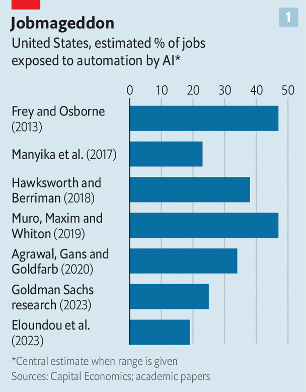image: The Economist
Yet at the same time, economists have become more optimistic. Recent studies have found that fewer workers are exposed to automation than Messrs Frey and Osborne supposed (see chart 1). In 2019 Michael Webb, then of Stanford University, showed that ai patents are more targeted at skilled jobs than those for software and robots. New ai seems better at coding and creativity than anything in the physical world, suggesting low-skilled jobs may be insulated. In March Shakked Noy and Whitney Zhang, both of the Massachusetts Institute of Technology (mit), published an experiment showing that Chatgpt boosted the productivity when writing of lower-ability workers more than that of higher-ability workers.
Although ai is still in its infancy, some industries have been eager adopters. A close look at three of these—translation, customer service and sales—is broadly supportive of the optimistic shift among economists, though not without complications. In translation, perhaps the first industry to be heavily affected by language modelling, workers have become copy editors, tidying a first draft undertaken by ai, which eases the path of newbies into the industry. In customer service, ai has helped raise the performance of stragglers. But in sales, top performers use the tech to find leads and take notes, pulling away from their peers. Will ai boost the incomes of superstars more than those of stragglers, much as the internet revolution did? Or will it be a “great equaliser”, raising the incomes of the worst off but not those of high flyers? The answer may depend on the type of employment in question.
Roll the dice
Roland Hall has been translating board games and marketing material from French to English for 27 years. He recalls that even in the 1990s software was used to render specific words from one language to another. Today the tools are more advanced, meaning the types of job available have split in two. One type includes texts where fluency is less important. An example might be a several-thousand-page manual for an aircraft, says Mr Hall, where readers simply need to know “what part to look for” and “do you turn it left or right”. The other type includes literary translations, where the finest details matter.
The first type has been most affected by ai. Many workers now edit translations that have gone through a machine similar to that underlying Google’s translation service. They are paid at a steep discount per word, but more work is available. Lucia Ratikova, a Slovakian who specialises in construction and legal translations, reckons that such work now makes up more than half of listings on job sites, up from a tenth a few years ago. A larger pool of businesses, many eager to expand into global markets, are taking advantage of the drop in price.
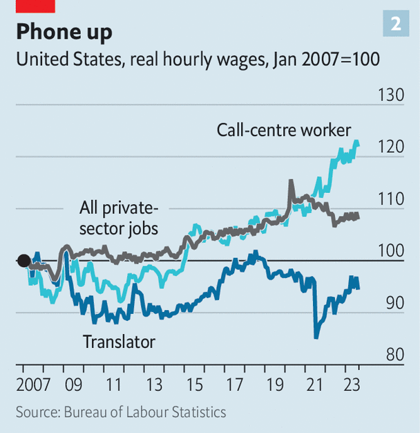image: The Economist
If machines are able to do what humans do more cheaply, employers will turn to computers. But as prices fall, overall demand for a service may rise, and possibly by enough to offset the increased use of machines. There is no law to determine which effect will dominate. So far in America the number of translators has grown, yet their real wages have fallen slightly (see chart 2)—probably because the profession now requires rather less skill.
Customer service offers more difficult terrain for ai. Firms have been trying to automate it for years. Thus far they have mostly just annoyed customers. Who doesn’t try to game the chatbot in order to speak to an actual human? The American Customer Satisfaction Index has been falling since 2018, and workers also appear fed up. Turnover in American “contact centres” hit a record high of 38% last year.
But there may be consolation: the workforce is becoming more welcoming to the low-skilled. Erik Brynjolfsson of Stanford, as well as Danielle Li and Lindsey Raymond of mit, studied the roll-out of an ai assistant to more than 5,000 customer-support agents earlier this year. The assistant offered real-time suggestions to workers. This lifted the productivity of the least-skilled agents by 35%, while the most-skilled ones saw little change.
It would be reasonable to assume that the impact on salespeople would be fairly similar to the one on customer-service workers. But that is not the case. Marc Bernstein of Balto, a firm that creates ai software for both sales teams and call centres, notes that “style points” (ie, charisma and the ability to develop a relationship) matter much more in sales than in customer service, where the important thing is getting the right answer quickly.
ai might even create sales superstars. Skylar Werneth has been in the industry for eight years and is now at Nooks, a startup that automates sales. Software analyses his calls, identifying which tactics work best. It also helps him call many people at once. Most customers do not pick up; dialling in parallel ensures Mr Werneth is talking more and listening to dial-tones less. He reckons the tools Nooks offers makes him three times more productive, earning him a solid amount more than before.
What does this mean for labour markets? Sales representatives are given bonuses based on the number of clients they bring in over a threshold. When productivity grows across a firm, bosses tend to raise the threshold. Because not everyone is able to meet it, low performers are pushed out of the workforce, since demand for products does not grow in parallel with sales performance, as would be necessary to justify retaining them. The result is a shrinking set of highly productive salespeople. At least, given high turnover in the industry, the shift to this state of affairs might mean hiring fewer people, not mass firings.
AI caramba
If ai eventually becomes superhuman, as many attendees at Britain’s recent summit believed possible, all bets are off. Even if ai advances in a less epochal fashion, labour markets will see profound change. A study by Xiang Hui and Oren Reshef of Washington University in St Louis and Luofeng Zhou of New York University, published in August, found that earnings for writing, proofreading and copy-editing on Upwork, a freelancing platform, fell by 5% after Chatgpt was launched last November, compared with roles less affected by ai. A survey of 400 call-centre managers by Balto found that the share using at least some ai grew from 59% in April to 90% by October. Mr Bernstein thinks that although “today ai is not capable of replacing a human [in call centres]…in ten years, quite possibly five, it will be there.”
The flipside of ai disruption is new jobs elsewhere. Modelling in 2019 by Daron Acemoglu of mit and Pascual Restrepo of Boston University suggests that the impact of automation is worst for workers when productivity gains are small. Such “so-so” automation creates little surplus wealth to increase the demand for workers in other parts of the economy. Our investigation of industries at the front line of ai change suggests that the new tech has a shot at leading to much greater efficiency. The picture on inequality remains murkier. Better to be a superstar than a straggler, then, even if only to be safe. ■
Modern industrial policy has a tension at its heart
Listen to this story.Enjoy more audio and podcasts on iOS or Android.
“When I think climate, I think jobs—good-paying, union jobs,” proclaims Joe Biden, America’s president. Ursula von der Leyen, the head of the European Commission, says that her “Green Deal” offers a “healthy planet” for future generations, as well as “decent jobs and a solemn promise to leave no one behind”. Sir Keir Starmer, Britain’s probable next prime minister, promises to back “a new energy company that will harness clean British power for good British jobs”. The state will intervene. The planet will be saved. Jobs will come. And they will be good.
Politicians across the rich world agree that industrial policy—wheezes which aim to alter the structure of the economy by boosting particular sectors—deserves to make a comeback. Just about all agree that it should focus on climate change. But is there actually any logic to combining the two? Industrial policy seeks prosperity in the form of economic growth and jobs; climate policy seeks lower emissions and the prevention of global warming. Marrying two aims often means neither is done well. As politicians pour trillions of dollars into green industrial policy, they will increasingly have to choose between the two objectives.
The argument in favour of any climate-change measure starts with externalities (those costs or benefits not borne by producers). There is a missing market for pollution, since emitting greenhouse gas is free. It is thus oversupplied, despite the fact that it hurts others. One way to tackle this is by putting a price on carbon, as many countries are doing. Yet doing only this might encourage investment in making dirty technologies more efficient, and as a result allow fossil fuels to extend their lead over clean tech.
Hence the need to combine carbon prices with subsidies for clean-tech research. In a paper published in 2016, Daron Acemoglu of the Massachusetts Institute of Technology and colleagues argue that, under such a regime, subsidies would do most of the work in redirecting technological progress towards clean energy. Only after alternatives to polluting tech had become better and cheaper would carbon pricing take over by encouraging their uptake.
Would such a regime, prudent though it may be, satisfy the political desire for green jobs? Consider the lithium-ion battery, which powers electric vehicles. In 2019 the chemistry Nobel prize went to three scientists for developing it: John Goodenough, then at the University of Oxford, a British university; Stanley Whittingham of ExxonMobil, an American oil firm; and Yoshino Akira of Asahi Kasei, a Japanese chemical firm. Yet none of these countries dominates production of such batteries. China does. Research produces its own set of externalities (positive ones), since knowledge tends to be shared. As companies would rather not give competitors a leg-up, that makes it undersupplied.
The most efficient climate-change policy—taxing carbon and subsidising research—is unselfish. As Dani Rodrik of Harvard University, an advocate of industrial policy, has noted, not only is the social return from investing in green research higher than the private one, so is the international return higher than the national one—meaning that both companies and governments tend to underinvest in it. The greenest policies may therefore not create many jobs. By contrast, greenish policies that create jobs may at least have the merit of making climate action acceptable to voters leery of spending on things that benefit other countries.
But as the rich world proceeds along this path, difficulties will emerge. Economists have traditionally criticised industrial policy on the grounds that governments are bad at it. Their ineptitude comes in two forms. First, politicians struggle to “pick winners”. They lack the ability to identify which tech will win out. Although in the late 2000s the American government offered a loan guarantee to Tesla, which eventually emerged as a successful electric-vehicle maker, it also offered support to Solyndra, a solar-power firm that went bankrupt. This lack of knowledge among politicians contributes to the second problem: rent-seeking. Industrial policy offers a way for companies to capture public funds via lobbying. Governments fail to cut off weak businesses, since doing so means admitting that they wasted public money in the first place.
The new economics of industrial policy, as put forward by Reka Juhasz of the University of British Columbia, Nathan Lane of the University of Oxford and Mr Rodrik in a paper this year, rests on the idea that such problems can either be solved or have been exaggerated. A disciplined government that cuts off bad investment can avoid waste. Clarity and transparency when it comes to goals will help politicians jettison failing companies.
Striking a blow
Maybe. But this is where climate and industrial policy become uncomfortable bedfellows. A firm could deliver good jobs while not being any greener than its competitors. Is that a failure or a success? Is an investment that cuts emissions while displacing workers a worthwhile one? Moreover, it is unclear whether, say, guaranteeing a loan to a loss-making clean-tech firm, such as the bail-out for Siemens Gamesa, a German wind-turbine maker, which was confirmed on November 14th, is throwing good money after bad or investing in the climate. Recent strikes by American carmakers were partly motivated by the idea that manufacturing cleaner electric vehicles will mean fewer jobs than assembling their petrol-powered counterparts—a difficult situation for a government committed to green industrial policy. Such policy seeks to improve international competitiveness, deliver high-paying work, make the economy grow, revitalise poorer regions and cut emissions at the same time. In reality, these goals are often opposed.
The more ambitious industrial policy becomes, the more difficult it will be for politicians to exercise the control advocates say is required. Many governments, including America’s, also want industrial policy to bolster national security. Taken together, such aims risk an almighty mess. ■
Read more from Free exchange, our column on economics:
New ways to pay for research could boost scientific progress
A new field hopes to apply science’s methods to science itself
Listen to this story.Enjoy more audio and podcasts on iOS or Android.
How might science be done on an alien planet? Since the laws of nature are the same everywhere, the aliens would make the same discoveries as humans have—that matter is made of atoms, say, or that life develops via evolution. But while the results might be the same, aliens would be unlikely to have come up with the same methods for arriving at them. It would be remarkable if the little green men had invented universities, funding committees, a tenure system and all the other accoutrements of modern academic life.
This thought experiment, dreamed up by Michael Nielsen, a physicist, and Kanjun Qiu, an entrepreneur, was not merely a flight of fancy. It was part of an essay published last year pointing out that the way modern science is organised is not the only way it could be done, and perhaps not even the best way. Experimenting with different sorts of institutions, or novel ways to hand out research money, might help fix what the authors say is a “discovery ecosystem in a state of near stasis”.
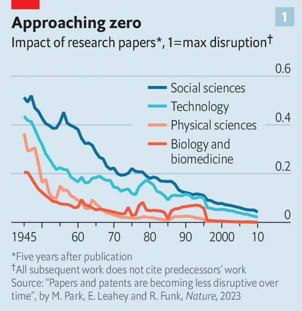image: The Economist
Dr Nielsen and Ms Qiu are among a band of researchers concerned that scientific progress is slowing. A paper published in 2020 by economists from the Massachusetts Institute of Technology (MIT) and Stanford University concluded that American research productivity was falling, with more effort required to produce smaller gains in knowledge. A second paper, published in January this year, argued that the “disruptiveness” of both scientific papers and patents, as measured by citation patterns, fell by over 90% for papers, and more than 80% for patents, between 1945 and 2010 (see chart 1).
“The main thing I’d like to see is far more diversity in how we fund and organise research,” says Dr Nielsen. There are plenty of ideas around. Some researchers advocate giving out research grants via lotteries, or expanding the system of competitive scientific or technological prizes. Others prefer to found entirely new types of institutions, displacing the universities that dominate scientific research today. And many see a chance to run a grand scientific experiment, turning science’s methods inwards to work out how science itself might be improved.
Following the Benjamin Franklins
The modern system of science funding—at least in America, the world’s leading scientific power—is relatively recent. The Royal Society in Britain, the world’s oldest national scientific academy, was founded in 1660 but limited its funding to an elite group of fellows. Before the second world war a good deal of American science was paid for by rich industrialists and corporate laboratories. The modern system in America owes much to the Rockefeller Foundation, a charity, in particular. It disbursed its money as grants for specific, well-defined projects, such as investigating the cause of yellow fever. As government funding rose after the second world war (see chart 2), America’s government adopted a similar system.
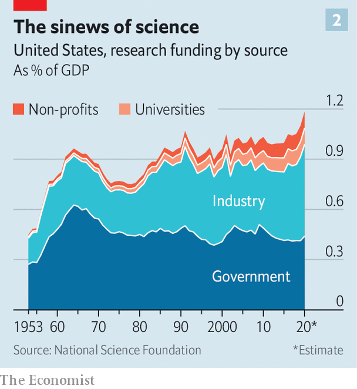image: The Economist
These days, over half the funding given to universities by the National Institutes of Health (NIH)—which, with its budget of nearly $50bn, is the world’s biggest funder of medical science—is given out as fixed-term grants. Around 70% of the $8.6bn distributed in 2022 by the National Science Foundation (NSF) was structured the same way. A scientist applying for this money must write a grant proposal, perhaps 15 pages long, and ideally including some early results to prove her project’s worthiness. The proposal is given a score by other researchers; this, in turn, helps a committee decide whether to fund it. Some 80% of NIH funding, and 90% of NSF grants, go through such peer review.
Silvana Konermann, a biochemist at Stanford University, notes that, with its mix of short timelines and small grants, the system leaves researchers “constantly thinking” about where their next cheque is coming from. But skill at raising money is not necessarily correlated with the usefulness of one’s research. In October Katalin Karikó won a Nobel prize for discoveries that led to mRNA vaccines. She had been demoted early in her career by the University of Pennsylvania because of her failure to bring in sufficient money.
And grants are becoming harder to win. Between 2003 and 2015 the likelihood that a researcher would be funded by the NIH at least once over a five-year window fell from 43% to 31%. One study estimated that researchers applying for grants from the National Health and Medical Research Council in Australia cumulatively spent 614 years writing them in 2014. One prominent biologist quips that if success rates keep falling, more money will be lost in wasted researcher time than the value of the grants themselves.
There are plenty of ideas for how to do things better. One criticism of having committees decide where money goes is that the need for consensus will suppress unorthodox ideas. Sethuraman Panchanathan, the director of the NSF, is keen to try a proposal called the “golden ticket”. Reviewers would be able to back a few risky ideas despite disagreement from their colleagues.
A more radical solution is to abandon committees altogether and hand out money by lottery. Some organisations are already experimenting along such lines. In 2013 the Health Research Council of New Zealand began giving out around 2% of its annual funding at random—though proposals had to first clear a minimum quality bar. The Novo Nordisk foundation, in Denmark, is testing a hybrid system that rejects projects assessed as being of poor quality, gives money to good ones, and randomly hands cash to some of those judged middling. The Volkswagen Foundation in Germany, the British Academy and the National Science Foundation in Switzerland are all running similar trials.
Rather than reforming existing institutions, another idea is to create new ones. In his essay Dr Nielsen suggested an “Institute for Travelling Scientists”. Inspired by Craig Venter, a biologist and entrepreneur who has done much good science from the deck of his yacht, the institute would be based on a boat that would travel around the world, picking up and dropping off scientists with the aim of offering a relaxing atmosphere in which to master a new discipline or meet unusual collaborators.
A more hard-headed, if less relaxing, source of inspiration is the Defence Advanced Research Agency (DARPA), an American military funding agency originally founded in 1958 that has had a hand in developing everything from the internet to GPS and voice interfaces for computers. DARPA‘s $4bn budget sits outside the rest of America’s military-research bureaucracy. Around 100 programme managers—described by Adam Russell, formerly one of their number, as “aliens” on account of their often unconventional backgrounds—can fund ambitious research problems however they see fit. At its best, it acts as a “force multiplier” on entirely new fields of research, says Dr Russell.
In America, the idea has given birth to organisations such as IARPA, which applies the same model to America’s spy agencies rather than its armies, and ARPA E, which pays for research into novel energy technologies. calculates that the total amount of cash handed out by such entities rose from about $4bn in 2021 to nearly $6bn in 2022. The most recent addition to the family, founded in 2022, is ARPA-H, which covers health care. Britain, Germany and Japan have all tried to copy the model outside America in recent years, setting up ARIA, SPRIN-D and Moonshot R&D, respectively.
But how well the ARPA model can be replicated is unclear. One former employee notes that DARPA “no longer attracts the same talent as it used to” and says there is “little interest” in studying cases of failure to figure out how to improve. The model may be less successful outside military research, suggests a book chapter written by Pierre Azoulay and Danielle Li, a pair of economists at MIT, published in 2022. America’s armed forces are the end-users of the technologies DARPA develops, and have a good understanding of what they need. End-users in other fields, such as energy or health care, are less single-minded.
Prizes, which offer a jackpot to anyone who can meet a scientific or engineering goal, can also push research in new directions. The Clay Mathematics Institute’s $1m Millennium Prize Problems exist to focus attention on unsolved problems in mathematics. So-called XPrizes have boosted research into everything from rainforest preservation to space flight. The biggest, for removing carbon dioxide from the atmosphere, has a total pot of $100m, paid for by Elon Musk, an entrepreneur. A study in 2021 found that research topics that were associated with prizes gained 40% more papers and 37% more new scientists than fields that were not.
Prizes also have the advantage of being tightly focused. Adam Marblestone and Sam Rodriques, a physicist and a biologist respectively, have been thinking along similar lines. They have proposed setting up a series of “focused-research organisations” (FROs). Each FRO would have well-specified goals and limited lifetimes, a bit like the Human Genome Project, which began in 1990 and then shut down in 2003 after the first draft of a human genome had been published. The hope is that this would prevent them from sliding into bureaucratic complacency over time. Money could come from governments or philanthropists, for whom the prospect of bold, time-limited funding may prove attractive.
Mr Marblestone’s organisation, Convergent Research, has helped launch six FROs. One is trying to map neural circuits in mammalian brains. On November 1st Mr Rodriques launched a FRO-like non-profit called Future House that aims to create a semi-autonomous “AI scientist” within ten years. It is backed by Eric Schmidt, a former boss of Google. Mr Rodriques expects it to spend $20m next year. In March Rishi Sunak, Britain’s prime minister, announced his intention to set up several such organisations—though exactly what they will study remains unclear.
And then there is the idea of funding people rather than projects. In theory, that would give researchers freedom to follow their noses, pursue ideas that may not have an obvious pay-off, and change course when something doesn’t work. The idea is not new: the most famous example is the Howard Hughes Medical Institute (HHMI), founded in 1953 in Maryland. Researchers are generously funded for seven or more years, compared with four for the typical NIH grant. Between them they have won over 30 Nobel prizes, as many as Russia and the Soviet Union combined.
There is other evidence to suggest the approach works well. Dr Azoulay has compared the HHMI with the NIH’s standard funding programme. HHMI researchers produced nearly twice as much highly cited work, as well as a third more flops, suggesting a willingness to take more risks. Inspired, in 2021 Dr Konermann of Stanford (an HHMI fellow herself) started the Arc Institute, which is run on similar lines.
The science of science
No one knows how fruitful any of these ideas will prove. Dr Russell argues it is vital to try many things, “collect data” and build “feedback loops” to improve the system. Kyle Myers, an economist at Harvard Business School, thinks funders should appoint chief economists to keep track of how each approach is working.
This turning of science’s methods back on itself has been dubbed “meta-science”. It is a growing field of study, says Ilan Gur, ARIA’s boss. Dr Myers calculates that since 2015 there have been an average of nearly 60 randomised experiments studying the scientific process. Two decades ago that number would have been in the single digits. More are coming: on September 28th the NSF announced a partnership with the Institute for Progress, a science-and-technology think-tank, to conduct metascientific experiments.
Using science to decide how best to do science is an idea with a pleasing symmetry. Yet Dr Nielsen cautions that finding out which funding method gives the best bang for each buck may take a long time. In the meantime, says James Wilsdon, who runs the Research on Research Institute at University College London, a diverse ecosystem of funders would bring its own benefits. “If you can’t get funded one way, you have another,” he says. That might help prevent others falling through the cracks in the way Dr Karikó did. ■
Was an ancient bacterium awakened by an industrial accident?
What lies beneath a Louisiana lake
Listen to this story.Enjoy more audio and podcasts on iOS or Android.
New species are generally found rather than awakened. And they are typically discovered in remote places like rainforests or Antarctic plateaus. But not so a species of bacterium described in a paper just published in . As Russell Vreeland and Heng-Lin Chui, the paper’s authors, point out, the bug is new to science. But it is not new to Earth. In fact the microbe may have been slumbering for millions of years before being awakened by an industrial disaster.
The bacterium in question lives below Lake Peigneur in southern Louisiana. The ground beneath the lake is rich in natural resources. In 1980 it boasted a mine producing rock salt, while a drilling rig run by Texaco was moving about on the surface looking for oil. But on November 20th, the two operations came together accidentally—and spectacularly. The oil rig’s drill penetrated the third level of the salt mine, creating a drain in the lake’s floor.
Over the next few days the resulting man-made sinkhole swallowed up the oil rig, 11 barges, a tugboat, 35 hectares of land and part of a house. A canal that drained the lake into the Gulf of Mexico began flowing backwards as the water level fell, briefly creating the tallest waterfall in Louisiana, while muddy geysers erupted from mine shafts. Somehow, all 50 people working in the mine managed to get out ahead of the rising floodwaters.
An official report could not determine whether the oil rig had been drilling in the wrong place, or whether the maps of the mine were inaccurate. Either way, the disaster created an entirely new environment. The water that flowed into the mine contained less than 2% salt. But rock salt dissolves readily in water. When Dr Vreeland, then at the University of New Orleans, was granted access to part of the flooded mine in 1987, he found the water within contained 32% salt, about nine times more than seawater.
For most creatures, that much salt would be lethal. But Dr Vreeland found a species of bacteria, one of a salt-loving group called , in his samples. The bug grew best in water containing 18% salt—and died when concentrations fell below 10%. Since the bacterium could not have survived in the lake, how did it get into the water in the mine?
Having access to only a small lab, and with comparatively few resources, Dr Vreeland decided to shelve the mystery and move on to other projects. During a visit to China in 2016, though, he met Dr Chui, another expert in salt-loving microbes, and decided to return to his cold case.
In the intervening years, scientists have found that some bacteria possess exceptional powers of self-preservation. When times are hard they can enter a form of stasis, shutting down all biological activity until things improve. The salt beneath Lake Peigneur was formed by the evaporation of a previous body of salty water. Some of the salt is 125m years old, meaning it was laid down during the heyday of the dinosaurs. The new species, the researchers suggest, is therefore antediluvian both literally and metaphorically. It was there before the mine was flooded, trapped in water pockets within the salt crystals—and it may have been there for millions of years.
Exactly how long bacteria can remain in suspended animation is difficult to test, because experiments cannot reasonably run for more than a few decades. But Dr Vreeland claimed in in 2000 that he and his colleagues had succeeded in reviving another salt-loving bacterium that was 250m years old. A study published last year argued that, in some circumstances, a particularly resilient species called might be able to manage 300m years in stasis.
And Dr Vreeland points out that the conditions in the salt mine might have helped this latest species while away the aeons in relative safety. One problem faced by a somnolent organism is the gradual accumulation of damage to its DNA. Oxygen is one source of such damage. But the element does not exist inside rock-salt crystals, and is only very slightly soluble in brine. Ultraviolet light is another danger, but none penetrates below the ground.
Background radiation can also damage genomes. But the only radioactive atom found in brine is potassium-40. With a half-life of over a billion years, it is only mildly radioactive. And bacteria that live in harsh environments, including , contain plenty of DNA-protecting proteins to prevent damage. Now, thanks to a human mistake, Dr Vreeland’s bacterium has been given an entire mine in which to live, where it can finally reap the rewards of its prodigious patience. ■
Some scientists think so. Others doubt the cells even exist
Listen to this story.Enjoy more audio and podcasts on iOS or Android.
ONE OF THE first signs of Alzheimer’s disease is confusion. Most people can park their car in a different space every morning and find it again in the evening. Those with Alzheimer’s find this type of problem much harder. Memories of things they do often, like eating or taking medication, become tangled in their minds.
The ability to distinguish between similar memories depends on a tiny strip of brain tissue called the dentate gyrus. Studies in mice have shown that the dentate gyrus is one of the few bits of the brain to generate new neurons even in adulthood. Those new neurons are thought to help keep similar memories distinct.
Whether something similar happens in humans is less clear. But a clutch of new results described this week at the Society for Neuroscience’s conference in Washington, DC, suggest that it might. And if it does, then encouraging the process might offer a new treatment for Alzheimer’s disease.
Until the 1960s scientists thought adult brains did not produce new neurons. Then evidence began to emerge of young neurons in the brains of adult rats and mice,—specifically in the olfactory bulb, which processes smell, and the dentate gyrus. These new neurons had developed from neural progenitor cells, a type of undifferentiated neuron akin to a stem cell, in a process scientists call neurogenesis.
And there seems to be a link, at least in mice, between these new neurons and Alzheimer’s disease. Mice genetically engineered to have Alzheimer’s-like symptoms also have fewer young neurons in their brains. Two studies published in 2021 and 2022 showed that encouraging neurogenesis could improve memory in such animals. And a paper published in April this year found that boosting neurogenesis also caused other cells known as microglia to begin cleaning up tangles of protein, called amyloid-beta plaques, that are characteristic of Alzheimer’s disease.
So far so promising—if you are a mouse. But studying neurogenesis in humans is tricky. MRI scanners cannot watch the growth of individual neurons. Scientists must take samples of brain tissue from cadavers and either stain them with chemicals that bind only to young neurons, or measure the genes that have been expressed within brain cells to look for the hallmarks of youth.
Dozens of such papers have been published. But for every one that has found evidence of neurogenesis, another has failed to do so. The pro-neurogenesis camp thinks the null results are down to poor-quality brain tissue or crude preservation techniques. The antis argue that either humans do not grow these neurons in the dentate gyrus, or if they do, there are too few of them to be useful.
The research presented in Washington strengthens the case for human neurogenesis. Maura Boldrini of Columbia University, María Llorens-Martín of the University of Madrid, Orly Lazarov at the University of Illinois at Chicago and Hongjun Song of the University of Pennsylvania presented evidence of young neurons in the dentate gyruses of humans—though most of their findings have not yet been peer reviewed.
Three of these researchers also studied the brains of healthy older people or people with Alzheimer’s disease. Their results suggested that the production of the supposed new neurons slows with age, and falls precipitously in Alzheimer’s disease. Previous studies by two of the groups also found that Alzheimer’s patients with more of these neurons had better memories.
But while the new research strengthens the case for human neurogenesis, it is not yet definitive. One group of researchers from Yale University questioned whether the staining technique used in one of the studies was accidentally tagging other brain cells such as astrocytes. They are also concerned that the studies tend to find very few progenitor cells. “Where are all the mothers of these baby neurons?” asked Jon Arellano, one of the sceptics.
There are other wrinkles. Dr Song found a different set of genes expressed in the supposedly young human neurons from those seen in neurons from other animals. And the few young neurons that both Dr Song and Dr Lazarov found in the brains of Alzheimer’s patients looked very different from the same neurons in healthy brains. If the new cells are somehow defective, increasing their number may not help.
But although not all the scientists at the conference were convinced, some drug-makers appear to be. In April, Biomed Industries, a pharmaceutical firm based in California, said that results from an early clinical trial suggested that a new drug that the firm claims increases neurogenesis in mice improved memory in people with moderate Alzheimer’s. If subsequent trials prove to be equally encouraging, that could be further evidence that the neurogenesis theory of Alzheimer’s may indeed have something to it. ■
That hardly matters. It will change how history is seen anyway
Listen to this story.Enjoy more audio and podcasts on iOS or Android.
Few series have had the ability to irritate audiences as reliably as Netflix’s “The Crown”, whose sixth and final season was released on November 16th. There has been affection, too: at least 73m viewers worldwide, critical acclaim, a glitter of awards and whatnot. But irritation reigns. The series has been criticised for its portrayal of Prince Charles (too scheming),the Queen Mother (too nasty) and the Duke of Windsor (too Nazi). It has been called “crude”, “cruel”, “intrusive”, “impertinent” and several sorts of nonsense, including “pure nonsense”, “nonsense on stilts”, and “a barrel-load of nonsense”. News that this season would feature Princess Diana’s ghost led one historian to call it “farcical—just a sick joke”.
There are two ways to look at “The Crown”. One is as soap opera with added sceptres, a royally expensive royal drama. (It was rumoured to be Netflix’s costliest show yet.) The other is to see it as an excellent if impromptu education in what history is and what it is not—a historiographical triumph if not a historical one. Millions who hitherto might never have wondered how the sausage of history is formed from the raw meat of the past are, with each successive season, turned into amateur historical analysts, as they Google primary sources, fact-check phrases and scrutinise photographs. Again and again, the same question is asked: is this history?
It is not asked without cause. A great deal of “The Crown”—even before you get to the ghastly cameo by Princess Diana’s ghost—is manifest historical bunkum. Prince Philip did not, as was claimed in the second season, inadvertently cause his sister to be killed in a plane crash (a fact that he found so offensive he reportedly considered suing). Prince Charles did not hint to John Major, the then prime minister, that Queen Elizabeth II should abdicate. The short answer to the question of whether or not “The Crown” is history is clear: no. It is not.
The longer answer is more complicated. History might be problematic for “The Crown”, but it is also part of the appeal. Many viewers’ interest is not just in the drama but in its historical backdrop. People have found themselves fascinated by forgotten facts, including the finer details of the Suez crisis, the severity of the Great Smog of 1952 and the (to many astounding) fact that the late queen had, once upon a time, been young.
In its defence, “The Crown” does not claim to be history. On the contrary, as its new disclaimer explains, it is merely a “fictional dramatisation” that was “inspired by real events”. In doing so it is following in a grand dramatic tradition of playing fast and loose with the facts. Had Shakespeare had to slap a disclaimer on “Richard III” he would have had to opt for something stronger even than that, like “highly fictional dramatisation”, says Emma Smith, a professor of Shakespeare studies at Oxford University. To get cross with “The Crown” for not being history is, on this reading, a simple category error: it never said it was.
Though it is not quite so simple as that. For one thing, the “is it history?” question assumes there is something that is “history” that is true and beyond reproach and something separate and all made-up that is “drama”. In fact, there is “a porous line between history and historical fiction”, says Dan Jones, a historian and author. Not for nothing was Herodotus, “the father of history”, also called “the father of lies”. When Thucydides, another Greek historian, wanted to quote a speech whose text he did not have, he simply made it up and had “the speakers say what was in my opinion demanded of them by the various occasions”. History has a long and august history of blending fiction and truth.
Modern historians are more careful and do not—or should not—make things up. But it is foolish to imagine that sleight of hand and imagination are not involved in writing history. One of the most essential aspects of that art is also the least visible, namely what historians choose not to include. Leaving things out is essential: there is a lot of past out there. As the historian Gregory of Tours glumly observed: “A great many things keep happening, some of them good, some of them bad.” That was in the sixth century; a whole lot more has happened since then.
History is therefore as much about what is unwritten as what is written. The creator and writer of “The Crown”, Peter Morgan, has complained that he is criticised for what he included but not praised for what he tactfully omitted: “Speculation about paternity, affairs, this, that. It’s unbelievable, all we could have written.”
Moreover, historical facts are tricky things. It is not necessary to endorse the “your truth” truthiness of Oprah Winfrey’s infamous interview with Meghan Markle to know that more than one historical narrative can be correct at the same time. Just as a mountain might appear “to take on different shapes from different angles of vision”, so a simple historical “fact” can appear differently to different people, wrote the historian E.H. Carr. That does not mean that there are no facts but—as the royals themselves might say—“recollections may vary.” Newspaper fact-checks of the series (and there are many) often start by harrumphing but tail into ho-humming. So much is debatable.
History does not sit preserved from the pollution of fiction, like an insect in amber. History and drama interact. There is, wrote Carr, a “two-way traffic between past and present”. When Edward VIII abdicated, Winston Churchill turned to Shakespeare’s “Richard II” to see how to draft the instrument of abdication; when Queen Elizabeth II was crowned, the man chosen to narrate the footage was not an august elder statesman but Laurence Olivier, an actor. Those close to the royals admit that the family has watched “The Crown” and been affected by it. The series reportedly led the late queen to think about how she had treated her sister, Margaret.
The debate over whether or not “The Crown” is history or not might be fraught. It is also largely irrelevant. To write history, as one philosopher observed, “is the only way of making it”. Historians might complain that Shakespeare’s “Richard III” is incorrect, or that “The Crown” takes creative liberties, but both have something more powerful than accuracy: popularity.
In Shakespeare’s day, people were already complaining that there were those who learn their history not from the chronicles but “from the play-books”. This series continues that tradition. “The Crown” might not be true history in the technical, academic sense of the term. However, that is immaterial. It will change how history is seen nonetheless. ■
A global history of gaming is educational and filled with practical tips
Listen to this story.Enjoy more audio and podcasts on iOS or Android.
Around the World in 80 Games. By Marcus du Sautoy.
WHICH ARE the best properties to buy when playing Monopoly, and how many houses should you build on them? Which continent should you aim to take over first in Risk? And what is the best strategy when using the doubling cube in backgammon? These are some of the questions considered and answered by Marcus du Sautoy, a British mathematician and Oxford professor, in his sprightly, light-hearted history of games and gaming.
The narrative is organised geographically as a trip around the world, starting with ancient games from the Middle East—backgammon, the Royal Game of Ur, the Egyptian game of senet—and ending up in Europe with modern games such as Pandemic and Dobble. Along the way the author considers many old favourites (Cluedo, Scrabble, Risk), recent arrivals (Wordle, Settlers of Catan) and less familiar games from a wide range of cultures and historical periods, such as the African game of mancala and the Indian card game of ganjifa, whose rules change at night.
The list is not exhaustive or comprehensive but reflects his own collection. It includes a handful of video games (Prince of Persia, Game of Life) and one sport (the Mayan ball game of pitz).
All this is, of course, really an opportunity for Mr du Sautoy to sprinkle in plenty of mathematical explanations, to provide what he calls “a celebration of the mathematics that swims seductively just below the surface of many of the games I love”. Playing games, he writes, “overlaps with what I enjoy about mathematics”: the challenge of solving a problem within a set of rules, the need to overcome obstacles and the victorious “aha” moment when a solution is found.
As well as forays into probability and game theory, he explains dice rolls in Monopoly using Markov chains; the torus-shaped playing field of video games like Spacewar!; and how the geometries of finite projective planes underpin the deceptively simple game of Dobble. And in many cases these explanations provide concrete advice to players.
In Monopoly, says Mr du Sautoy, the best properties to buy are the orange ones, followed by the red ones (and build three houses on them). In Risk, control of North America has the best risk-reward ratio, generating a good supply of bonus armies while being easy to defend. In backgammon, accept a double if you think you have more than a 20% chance of winning; offer one if you think you have more than an 80% chance of winning. Oh, and “TALES” is the best starting word in Wordle.
The hybrid history-travelogue approach is clunky at times, and some of the entries are not games at all, but mini-essays on game-related topics, from biography to psychology. And despite its high-concept framing, the book can be read in pretty much any order; indeed, the author suggests a game to randomise the order of the chapters. (In an appendix, he then works out how many possible options there are, which doubles as an illustration of the technique of proof by induction.)
Fun, unexpected, operating within fixed but arbitrary rules, producing a range of complex outcomes and offering insights that can be applied to everyday life—a good game combines all these elements. The same can also be said of this book. ■
“Vintage Crime”, a new history, looks at “Winegate” and other scandals
Listen to this story.Enjoy more audio and podcasts on iOS or Android.
Vintage Crime. By Rebecca Gibb.
To make a 1945 Mouton Rothschild, mix two parts Château Cos d’Estornel to one part Château Palmer and California cabernet. That was the strategy of Rudy Kurniawan, a wine fraudster, who poured his mixture of wines into old bottles with fake labels and sold them to gullible collectors. In 2014 he was sentenced to ten years in an American prison and ordered to forfeit $20m and to pay another $28m to victims.
Deported to his native Indonesia in 2021, Mr Kurniawan is now back in business. At fancy dinner parties, clients ask him to create fake fine wines to taste and compare with the real thing. Many tasters reportedly prefer his concoctions. “Mr Rudy Kurniawan is a vinous genius,” one fawned. If a phoney bottle fulfils its purpose—to give pleasure—does it matter that it is not what it claims to be?
Mr Kurniawan is one of the high-profile scammers whose exploits are recounted in “Vintage Crime”, a history of wine fraud by Rebecca Gibb, a wine journalist and master of wine. The wine world shares similarities with the art world. It relies on the opinions of experts, whose belief in the authenticity of a Château Lafite (or a Rembrandt) can dramatically alter its value. But experts can be duped. Many wine connoisseurs have vouched for dubious bottles. General consumers do not question the labels on their wines. A study involving more than 6,000 blind tastings found that non-expert drinkers actually preferred cheaper wines. Another study found tasters perceived expensive wines to be higher quality only when the prices were revealed.
Ms Gibb’s history begins in Roman times, when winemakers and vendors adjusted wines with herbs and spices to make them taste better. Only the rich could afford wines that did not require adulteration. Soldiers drank a blend of vinegary wine and water, while slaves’ wine was made from the skins of already-trodden grapes. Pliny the Elder insisted that these drinks “cannot rightly be styled wines”.
Most additives were innocent, but not all. In the 1690s monks in Ulm, Germany, began keeling over. A physician discovered that a dodgy merchant had been sweetening sour wines with lead monoxide. A new law criminalised this practice, but drinkers continued to imbibe toxic wine. Some biographers have suggested that Beethoven, a heavy wine-drinker, may have gone deaf due to lead poisoning.
Labels can be deceptive. When vineyards in Burgundy were ravaged by the phylloxeraparasite in the 1880s, French winemakers began importing wine from elsewhere and sold it as Burgundy. In 1889 France passed the which defined wine as fermented fresh grapes (and restricted producers from watering it down or including additives).
However, the law did not prevent merchants from buying low-quality grapes and turning them into wines labelled “champagne”. Between 1907 and 1911 nearly half of all champagne bottles sold in France were not genuine. Pressure from wine groups eventually led to the creation of the appellation system, which drew borders around regions to ensure that only wine from there could be labelled as such. (The system relies on the concept of , a specific piece of land giving wine a taste that cannot be replicated elsewhere.)
Naturally, scammers have continued to flout the rules. In a case in 1974 that Ms Gibb dubs “Winegate”, merchants were discovered selling cheap wines from the Languedoc region as pricey Bordeaux. When Austrian grapes failed to ripen in 1985, winemakers added diethylene glycol to sweeten their wine.
China is now the primary purveyor of knock-off wines, which often bear visibly fake labels (for example, saying the producer is “Benfolds” instead of “Penfolds”). One survey found that more than a quarter of outlets across 13 provinces sell fraudulent bottles. No wonder some winemakers demand to see their finest bottles smashed after drinking when they do tastings in China. An empty bottle bearing a coveted label is a fraudster’s dream. ■
A new book looks at the legacy of Japan’s war-crimes tribunal
Listen to this story.Enjoy more audio and podcasts on iOS or Android.
Judgment at Tokyo. By Gary Bass.
THE WORLD IS still haunted by 20th-century crimes so grave that any attempt to bring the perpetrators to justice seems feeble. The trials at Nuremberg in 1945-46 did little to salve wounds left by the Holocaust. And the Tokyo trials of alleged Japanese war criminals, which lasted two and a half years from 1946-48, have not stopped outpourings of anger across Asia whenever, for example, a senior Japanese politician visits Yasukuni, a Tokyo shrine to the war-dead, including convicted war criminals.
The aftermath of wars has taken on fresh significance with conflicts raging in Israel, Sudan and Ukraine. In much of Asia, the second world war, which was followed by tribunals that tried to dispense justice, is still unfinished business. Japan’s trials concluded 75 years ago. In a meticulously researched history, Gary Bass, a professor at Princeton (and former journalist for ), looks at why attempts to produce a shared sense of justice failed.
Like Nuremberg, Japan’s tribunal was for the most serious war criminals, those guilty not just of breaking the laws of war but, in addition, of “crimes against peace” (ie, planning the war). This was controversial then and remains so. For America the greatest crime was the attack on Pearl Harbour in Hawaii and elsewhere in December 1941. But, as aggressors always do—think Vladimir Putin in Ukraine—the accused pleaded that they and Japan acted in self-defence. Even some of the 11 judges from different Allied countries disputed whether Japan’s aggression was actually a crime. Radhabinod Pal from India, for example, argued the law lets each country decide what counts as self-defence.
Few doubted that Japanese troops had been guilty of outrageous war crimes, exhaustively covered at the trials, which heard months of harrowing testimony, including about the “rape” of Nanjing, China, in 1937 and the Bataan death march of prisoners-of-war in the Philippines in 1942. The issue with these and other horrors was not whether they were crimes, but where responsibility lay—with the individual soldier, his immediate commander, his general, the prime minister or the man who had appointed the prime minister, Emperor Hirohito.
Before the tribunal convened it had been decided not to indict the emperor. This led to a feud between the bibulous chief American prosecutor, Joseph Keenan, and the court’s president, Sir William Webb, a pompous and cantankerous Australian. Webb found himself at odds with most of the other judges. They failed to reach unanimous verdicts.
Of the 25 defendants who survived the trial, all were convicted and seven were hanged, including the prime minister, Tojo Hideki. But some of the judges dissented, including Pal, who argued in a 1,230-page objection that all the defendants were innocent. Pal became a hero to many Japanese for saying the trials represented “formalised vengeance” and could bring “only an ephemeral satisfaction, with every possibility of ultimate regret”.
His dissent also covered events beyond the scope of the trial: what he called the “inhuman blasts” at Hiroshima and Nagasaki in 1945. The killing of tens of thousands of civilians in these attacks, seen by many as militarily unnecessary, was not a war crime. That will always make the Tokyo trials seem lopsided to many Japanese.
Mr Bass’s assertion that the tribunals’ failure played an important and largely negative role in the making of modern Asia is true enough. But would it have made a difference had, say, the emperor been put on trial? It is hard to believe that would have made the outcome more palatable in Japan, or that it would have changed much in the prosperous democratic country that Japan has become.
In Tokyo justice was always going to be tempered with compromise and political expediency. For all their flaws, the trials were not the problem. The war was. ■
Ridley Scott’s “Napoleon” cuts the emperor down to size
His epic new film shows how hard it is to make a good biopic
Listen to this story.Enjoy more audio and podcasts on iOS or Android.
Two versions of Napoleon Bonaparte crop up on screen. The first is a titan of history who marches vast armies across Europe, forging his own destiny and the continent’s. This is the figure with whom men of a certain age and type are often fascinated—such as would-be statesman Connor Roy, who in the TV show “Succession” tries to buy Napoleon’s shrivelled penis at auction.
The second Napoleon appears in cartoons and comedies in a bicorne hat. He is touchy about his height (in reality, average for his era) and talks in a pantomime French accent (the actual Napoleon had a Corsican twang). One version casts him as an embodiment of martial power; the other lampoons it.
You might expect the hero of “Napoleon”, a lavish film directed by Sir Ridley Scott and released on November 22nd, to stand firmly in the potentate camp. Oddly, he has a foot in both. The misfiring movie is a case study in handling two big challenges of biopics, one perennial, the other especially acute now: how to shape a luminary’s life into a story, and how to judge and depict his flaws.
The real Napoleon—a general by 24, emperor at 35—lived on fast-forward. Sir Ridley packs lots of the highs and lows into a two-and-a-half-hour extravaganza: victory at Austerlitz, calamity in Russia and the finale at Waterloo, where a vanquished Napoleon (played by Joaquin Phoenix) is doomed to exile (again). He weaves the triumphs and disasters into a chronicle of Napoleon’s passion for Joséphine de Beauharnais, his first wife.
It’s grisly stuff—and that’s just the love affair. This emperor is not like Marlon Brando’s, the suavest to don the familiar greatcoat, in his case for “Désirée” (1954), which chronicles Napoleon’s passion for, er, Désirée Clary, briefly his fiancée. Instead he is a gauche oddball. Looking distinctly wizened for a 26-year-old (Mr Phoenix is 49), he runs into Joséphine (Vanessa Kirby), fresh out of a Jacobin prison, at a louche ball in 1795. Along with their skimpy bodices, the ladies wear red ribbons around their necks in a ghoulish nod to the guillotine.
“Why are you staring at me?” she asks him. Romance-wise, it’s downhill from there. Napoleon is a selfish, perfunctory lover, and both have affairs. “You are empty,” he bawls at Joséphine at a formal dinner, angry at her failure to give him an heir. “And you are fat,” she volleys back. Then they throw food at each other.
The battles are pretty nasty, too. When the foes of France plunge through the ice at Austerlitz, the underwater shots are bloody yet balletic, as memorable in their way as the scenes of carnage in Sergei Bondarchuk’s “Waterloo” (1970). The real-life Napoleon did not spare the horses, and neither does Sir Ridley. If you were squeamish about Russell Crowe’s tussle with a tiger in “Gladiator”, another of the director’s sword-and-soundbite epics, you will not like what a cannonball does to Napoleon’s mount at the siege of Toulon. A closing note estimates that his wars cost 3m human lives.
The film glosses over Napoleon’s industrial-scale looting and habit of skedaddling when his armies got into bother. Still, Sir Ridley’s verdict on his subject, as both husband and leader, is cutting. To Napoleon’s defenders, he was a fiery champion of the Enlightenment and a swooning romantic. In this incarnation he is a warmonger and a pig.
The harsh judgment, however, is not what hobbles the movie. Good films can be made about bad people. The problem lies in Sir Ridley’s answer to the other challenge of biopics, namely how to edit such an overstuffed life for the screen.
Among his omissions is: why? His malignant Napoleon is shorn of mystique, but his motivation is a mystery, beside a hint of sexual neurosis, some mummy issues and the odd mean remark about Corsicans. The same goes for his appeal, to both Joséphine and his followers. His laws and reforms—a figleaf for conquest or an enduring legacy, depending on your view—are neglected. As a statesman he is crass and petulant. “You think you’re so great because you have boats!” he yelps at the British.
Biopics, like statues, are both homages to historical figures and an argument about history itself. Implicitly they claim that some individuals shape the world rather than the other way round. Napoleon did that as much as anyone; yet because Sir Ridley prefers events to explanation, his hero is a slight man in a big film. For all his derring-do, he has a whiff of the grouchy Napoleon in “Bill and Ted’s Excellent Adventure” (1989), who is teleported to modern America, hogs the ice-cream and cheats at ten-pin bowling.■
Read more from Back Story, our column on culture: “
The best films of 2023, as chosen by The Economist
They featured cattle barons, chefs, composers, physicists and whistleblowers
Listen to this story.Enjoy more audio and podcasts on iOS or Android.
“Anatomy of a Fall”
A man is found dead in the snow outside his Alpine chalet. Did he jump from the attic window, or was he pushed by his wife? The winner of the Palme d’Or, the top prize at Cannes Film Festival, Justine Triet’s courtroom drama is both a gripping whodunnit and an unsparing examination of the sexual and professional rivalries within a marriage.
“The Boy and the Heron”
Hayao Miyazaki, a co-founder of Studio Ghibli, has said that this will be his final film—and what a swansong it is. A cryptic, cosmic fairy tale about letting go of the past, “The Boy and the Heron” is comparable to several of Mr Miyazaki’s previous visionary masterpieces.
“The Creator”
One of the few recent science-fiction blockbusters not to be based on a superhero comic or film franchise, this impressively gritty war epic stars John David Washington as a soldier in the battle between humans and robots. Artificial intelligence is Hollywood’s current favourite villain, as “M3GAN” and the latest “Mission: Impossible” instalment showed.
“The Holdovers”
In 1970 a grouchy history teacher (Paul Giamatti) is forced to spend the Christmas holiday in a boarding school with an unruly student (Dominic Sessa) and a bereaved cook (Da’Vine Joy Randolph). Reuniting the director and the star of “Sideways”, a hit film of 2004, this humane, hilarious comedy already feels like a festive classic.
“Holy Spider”
A dogged journalist (Zar Amir Ebrahimi) investigates the case of a serial killer who is murdering prostitutes in the Iranian city of Mashhad, only to find that many of the city’s residents support the killer. Ali Abbasi’s dark thriller may be an excoriating critique of Iran, but it’s relevant to populist politics in the West, too.
“How To Have Sex”
A heart-wrenching coming-of-age drama about three British schoolgirls on a hedonistic package holiday in Crete. Tara (Mia McKenna-Bruce) seems to be having the time of her life, but Molly Manning Walker, the writer-director, uncovers the vulnerability beneath the teenage bravado.
“Killers of the Flower Moon”
Robert De Niro and Leonardo DiCaprio co-star in this devastating true-crime saga from Martin Scorsese. Mr De Niro is the land-grabbing cattle baron who has dozens of Osage people murdered in Oklahoma in the 1920s. Mr DiCaprio is the low-life who poisons his dignified Osage wife (Lily Gladstone).
“Maestro”
Bradley Cooper was chastised for sporting a prosthetic nose in his biopic of Leonard Bernstein, but “Maestro”, which he also co-wrote and directed, is rich, sensitive and sympathetic, and Mr Cooper brings irresistible verve and pathos to the lead role. Carey Mulligan sparkles even brighter as Bernstein’s loyal but conflicted wife.
“Oppenheimer”
A complex, upsetting, technically magnificent biopic of J. Robert Oppenheimer (Cillian Murphy). Christopher Nolan skips between several different time periods to examine the politics behind the Manhattan Project and asks what kind of person would build a weapon that could destroy the world.
“Past Lives”
A 12-year-old girl moves with her family from Korea to Canada, leaving behind her childhood sweetheart. Twenty-four years later, they meet again in New York. Celine Song’s bittersweet tale muses on fate, ambition, and everything that is gained and lost by moving to a new country.
“Poor Things”
In Yorgos Lanthimos’s wildly inventive adaptation of Alasdair Gray’s satirical novel, a woman (Emma Stone) is brought back from the dead by a mad scientist (Willem Dafoe) with no memory of her previous life. On an uproarious whirlwind tour of Europe, she learns about society’s conventions and shatters them all.
“The Taste of Things”
The foodie film to end all foodie films? Much of “The Taste of Things” consists of mouth-watering French feasts being prepared, slowly and carefully, in an idyllic 19th-century kitchen. As a side dish, there is a tender middle-aged romance between a brilliant chef (Benoît Magimel) and his faithful cook (Juliette Binoche).
“Reality”
The true story of a young whistleblower, Reality Winner (Sydney Sweeney), who was questioned in her home by FBI agents in 2017. Every line of dialogue is drawn from recordings made at the time, so Tina Satter’s drama has the naturalism of a documentary and the tension of a thriller.
“The Zone of Interest”
An extraordinary triumph from Jonathan Glazer, this film dramatises the domestic routine of Rudolf Höss (Christian Friedel), the commandant of Auschwitz concentration camp. He and his family bustle around with their servants, ignoring the industrialised mass murder being committed just over their garden wall. ■
Seven books shed light on a troubled and paradoxical country
ON NOVEMBER 19th Argentina elected Javier Milei, a self-described “anarcho-capitalist”, to be its next president. He defeated Sergio Massa, the economy minister in the current Peronist government. Mr Milei owes his victory to the troubled background against which the election took place. Inflation is heading for 200% this year and 40% of Argentines live in poverty. And yet, thanks largely to the fertility of the vast pampas, Argentina was in 1914 one of the ten richest countries in the world measured by income per person (although this was very unequally distributed). The past 70 years or so have been decades of decline and political conflict, interrupted by shorter periods of growth and stability. For most of that time the country has been ruled by Peronism, the amorphous populist movement founded by Juan and Eva Perón that is woven deeply into the social fabric. Yet Argentina, whose population is mainly descended from immigrants from Europe, especially Italy and Spain, is also a country of immense creative prowess. Jorge Luis Borges, who wrote poems and short stories involving metaphysical riddles, was one of the 20th century’s greatest writers, though he wrote little about his native country. From the music of the tango to film and football Argentina has made its mark in the world. Its intellectual classes, still scarred by a brutal military dictatorship and urban guerrilla war in the 1970s, are prone to brooding self-analysis—not for nothing does Buenos Aires have more psychoanalysts per person than any other big city in the world. The following books, one of which is for readers of Spanish, offer a window onto this country of paradoxes.
The Invention of Argentina. By Nicolas Shumway.
This masterly intellectual and cultural history focuses on the 19th-century roots of Argentine nationalism and what Nicolas Shumway, now an emeritus professor at Rice University in Houston, Texas, calls its “guiding fictions”. His argument is that “this ideological legacy is in some sense a mythology of exclusion rather than a unifying national ideal, a recipe for divisiveness rather than consensual pluralism.” That legacy has shaped the past 100 years and lurks beneath the social conflicts, between rich and poor, capital and interior, that have marked the country’s long decline.
Argentina 1516-1987: From Spanish Colonisation to Alfonsín. By David Rock.
This standard account by one of the leading historians of Argentina is particularly good on the formation of the modern nation-state, the settlement of the pampas, the divide between sophisticated Buenos Aires and the more backward interior and on the rise and apogee of Perón, who first became Argentina’s president in 1946. Although it stops towards the beginning of the current democratic period, David Rock’s fluent narrative remains a useful source of reference.
A State of Fear: Memories of Argentina’s Nightmare. By Andrew Graham-Yooll.
Andrew Graham-Yooll was the news editor of the , an English-language daily that was one of the few newspapers to try to report the truth during Argentina’s nightmarish descent into internecine war between left- and right-wing Peronists in the 1970s and into military dictatorship, which lasted from 1976 to 1983. His book is a vivid memoir of those years, of gunmen cruising the streets of Buenos Aires in Ford Falcons, of disappearances and murders. The author was summoned to a clandestine press conference by the Montoneros, a guerrilla outfit that had kidnapped Jorge and Juan Born, two of Argentina’s richest men. Later Graham-Yooll would have the frightening obligation of giving evidence at the trial of Mario Firmenich, the Montonero leader.
Santa Evita. By Tomás Eloy Martínez.
The central character in this novel is a corpse, that of Eva Perón. After the armed forces overthrew Juan Perón’s government in 1955, they worried that the embalmed body of Eva, his second wife, who had died of cancer in 1952 at the age of just 33, would become a rallying point for supporters of the exiled populist leader. So they kidnapped it and spirited it abroad. Tomás Eloy Martínez, a journalist and novelist who (like Graham-Yooll), left Argentina to escape death threats from members of the security forces in the 1970s, blends fact with fiction in recounting the adventures of the corpse, which today rests in Recoleta cemetery in Buenos Aires. In doing so he reveals the cult of political necrophilia that is so prevalent in Latin America, the quasi-religious devotion that is such a powerful strand in Peronism and the paranoia at the heart of “anti-Peronism”. “Santa Evita” is a companion to the earlier “The Perón Novel”, published in 1988, in which Eloy Martínez used the same technique to write the biography of the towering Argentine figure. “Nothing is true; at the same time everything is true,” he said of these works.
In Patagonia. By Bruce Chatwin.
In this beautifully written travelogue Bruce Chatwin, a British writer, journeys through the byways of Argentine history and society on his way from Buenos Aires to the far south. He encounters naturalists and the descendants of Welsh settlers, follows the trail of Butch Cassidy, an American outlaw, and comes upon dinosaur fossils as well as recounting the exploits of a seafaring relative. Critics carped that “In Patagonia”, published in 1977, may be partly fictionalised. That may be true, but it is a thoroughly enjoyable read.
Fever Dream. By Samanta Schweblin. Translated by Megan McDowell.
Samanta Schweblin belongs to a cohort of women, including Mariana Enríquez and Claudia Piñeiro, who are at the forefront of Argentina’s literary world. It is no coincidence that all of them write fiction in various shades of . “Fever Dream”, which was shortlisted for the Man Booker International Prize in 2017, is a slim, taut novella of psychological horror. The narrator is a young woman dying in a hospital bed who is interrogated by a young boy. She conjures up a world of fear and madness, of mothers’ fears for their children, set against a backdrop of soyabean monoculture and contaminating agrochemicals. “Fever Dream” is hard to put down.
El Nudo: Por qué el conurbano bonaerense modela la política argentina. By Carlos Pagni.
Argentina’s financial and economic collapse in 2001 hastened the transformation of a society that had considered itself to be European into a fully Latin American one, with a large informal economy, widespread poverty and political clientelism (the exchange of votes for benefits). The crucible of that change was the sprawling post-industrial urban belt surrounding Buenos Aires, known as the , which is home to nearly 30% of Argentina’s population. In “El Nudo” (“The Knot”, which is not yet available in English), Carlos Pagni, one of Argentina’s leading journalists, tells the story of the through a mixture of history, sociology and reportage. It forms the political base of Cristina Fernández de Kirchner, the leftist-populist Peronist who dominated Argentine politics for much of the past 20 years. Whereas Juan Perón offered “the inclusion of the workers”, Ms Fernández conducts “the management of poverty”, according to Mr Pagni. That is carried out through subsidies that the government cannot afford. It constitutes the “knot” that ties Argentina to underdevelopment.
Also try:
No one can deny that Mr Milei, whatever his shortcomings, is an interesting character. Our sister magazine profiled the presidential candidate, now Argentina’s president-elect. Here is our account of our interview with him. In this leader lamented that Argentina’s voters had given themselves no good choices in the second round of the election. Our Bello columnist imagined in 2020 how Argentina’s current president, Alberto Fernández, would explain Peronism to Angela Merkel, then Germany’s chancellor. This special report on Argentina, from 2004, was written at a time of hope for a country that “achieved development and then lost it again”. In “Forgotten Continent: A History of the New Latin America” Michael Reid, our former Bello columnist, writes about Argentina and much else.
How the term “genocide” is misused in the Israel-Hamas war
Accusations of the heinous crime abound
MANY GOVERNMENTS and citizens are appalled by the civilian casualties from Israel’s bombardment and invasion of Gaza, which is its response to Hamas’s attack on Israel. On October 10th the Palestinian envoy to the UN, Riyad Mansour, described Israel’s actions as “nothing less than genocidal”. Iran and Iraq have also accused Israel of genocide. Politically, it is clear why Israel’s enemies should invoke the heinous crime. But the allegation has also been made by countries that have usually been friendly to Israel. Colombia, Honduras and South Africa have all withdrawn their ambassadors from Israel, accusing its government of committing “genocide”.
Protesters and commentators in the West use the term too. “It is now clear that Israel is engaging in a genocide of the Palestinian people,” argued M. Muhannad Ayyash, a professor of sociology at Mount Royal University in Calgary, Canada. Craig Mokhiber, director of the New York office of the UN High Commissioner for Human Rights, wrote on October 28th that “This is a text-book case of genocide.” Israel has both denied genocide and accused Hamas of the crime. Gilad Erdan, Israel’s permanent representative to the UN, said on October 26th that “This is not a war with the Palestinians. Israel is at war with the genocidal Hamas terrorist organisation.” What exactly is genocide, and how, if at all, is the term applicable to the current conflict?
In December 1948, in the aftermath of the second world war, the UN adopted the Convention on the Prevention and Punishment of the Crime of Genocide. The convention defines a genocide as acts intended “to destroy, in whole or in part, a national, ethnical, racial or religious group”. Contrary to the common understanding of the term, the UN says not only killing counts. “Deliberately inflicting on the group conditions of life calculated to bring about its physical destruction” does too, as does inflicting “serious bodily or mental harm”, “measures intended to prevent births”, and “forcibly transferring children of the group to another group”. Categorising atrocities as genocide has legal implications. The International Criminal Court is able to indict someone for the crime, for example.
Interpretations of the convention differ because it is so broadly framed. So which atrocities constitute genocide? The systematic murder of 6m Jews by the Nazis was genocide. The organised butchery of perhaps 500,000 ethnic Tutsis by Hutu militias in Rwanda in 1994 was too. In both cases the intent, to destroy a people, was clear. Yet the case of Darfur, in Sudan, where about 300,000 people died in the years after fighting broke out there in 2003, is less clear. America called this a genocide. But in 2005 a UN commission concluded that Sudan’s government had “not pursued a policy of genocide” (although some individuals may have acted with “genocidal intent”). Donald Trump’s administration called the Chinese government’s treatment of the Uyghurs in Xinjiang a genocide but othersdisagreed. This newspaper concluded that China’s persecution of the Uyghurs was “horrific”, but not genocidal.
By the UN definition, Hamas is a genocidal organisation. Its founding charter, published in 1988, explicitly commits it to obliterating Israel. Article 7 states that “The Day of Judgment will not come about until Moslems fight Jews and kill them”. Article 13 rejects any compromise, or peace, until Israel is destroyed. Hamas fighters who burst into Israel on October 7th and killed more than 1,400 Israelis (and other nationalities) were carrying out the letter of their genocidal law.
Israel, by contrast, does not meet the test of genocide. There is little evidence that Israel, like Hamas, “intends” to destroy an ethnic group—the Palestinians. Israel does want to destroy Hamas, a militant group, and is prepared to kill civilians in doing so. And while some Israeli extremists might want to eradicate the Palestinians, that is not a government policy.
Neither do the Israelis display any obvious intent to prevent Palestinian births. But those who accuse it of genocide point to the large number of civilians killed, at least 10,000 so far, and claim its blockade of the strip meets the “conditions-of-life” criterion. The Israelis have clearly inflicted “serious bodily or mental harm” on the Palestinians. They have also displaced people from the north of the strip. If those people are not allowed to return, this could be considered a partial destruction of their territory or, as Jan Egeland, a former UN head of humanitarian and relief efforts, has warned, a forcible population transfer.
Even if an army’s actions do not pass the threshold of genocide, they can still be wrong. As the UN concluded during its report into Darfur, “crimes against humanity and war crimes that have been committed…may be no less serious and heinous than genocide”. ■
The difference between a “ceasefire” and a “humanitarian pause”
And why it matters
AS THE FIGHTING in the Gaza Strip between Israel and Hamas intensifies, so do the calls for a “ceasefire”—or a “humanitarian pause”. An emergency joint summit of the Arab League and the Organisation of the Islamic Conference in Saudi Arabia on November 11th, for instance, called for the former. Two days later the 27 member states of the European Union reiterated their support for the latter. America will also only support pauses, as will the G7 group of rich countries. The UN, by contrast, has backed a ceasefire. Israel itself categorically rejects a ceasefire, but on November 9th agreed to implement daily four-hour “humanitarian pauses” in northern Gaza. So what is the difference between the two, and why does this divide countries and international organisations?
It is not just a matter of semantics. The phrases suggest different approaches to ending the conflict. The UN defines a “humanitarian pause” as a “temporary cessation of hostilities purely for humanitarian purposes”. Such pauses are usually limited to a defined period and to a specific area where the humanitarian activities are to be carried out. In the case of Gaza, the pause, which only applies to specific neighbourhoods in the north of the enclave, should allow civilians to evacuate from combat areas and permit the UN and NGOs to bring in supplies of food and water.
A ceasefire, by contrast, goes further. The UN defines it as a “suspension of fighting agreed upon by the parties to a conflict, typically as part of a political process”. The goal is to “allow parties to engage in dialogue, including the possibility of reaching a permanent political settlement”. It is thus a longer-term arrangement, in which both sides stop fighting, often in the entire area of the conflict.
To give two recent examples: at the start of the most recent Sudanese civil war in April, the UN negotiated “pauses” lasting a few hours to deliver desperately needed aid, on the clear understanding that the two sides would resume fighting immediately afterwards. The nationwide “ceasefire” in Yemen in April 2022, however, was agreed on very much as a prelude to political negotiations and subsequent prisoner swaps.
In the context of Gaza, calls for a “pause” or “ceasefire” have divergent political motivations. People who back Israel’s right to destroy Hamas after the militant group’s devastating assault on October 7th oppose a ceasefire at this point. Antony Blinken, America’s secretary of state, argues that it would “simply leave Hamas in place, able to regroup and repeat what it did”. Humanitarian pauses, however, will help to minimise civilian casualties and distress, while allowing Israel to continue its military assault. Meanwhile, those who support a ceasefire, such as many Arab states, usually accompany this with calls for Israel to lift its siege of Gaza and relaunch negotiations for a Palestinian state. Such an immediate ceasefire would give Hamas the opportunity to regroup and rebuild—something Israel and its backers firmly oppose. That goes some way towards explaining the fury of Israel’s leaders when France’s president, Emmanuel Macron, called for a ceasefire on November 12th.
As outrage mounts over civilian casualties in Gaza, some advocates of pauses are calling for them to be longer and to cover a wider area. Some, including the British government on November 14th, have proposed breaks of a few days during which Hamas would release hostages. But Israel fears that such longer pauses could, under enormous international pressure, become a de facto ceasefire.
Although long pauses could come to resemble a ceasefire, the two phrases remain rhetorical proxies used to differentiate between those who see Israel’s attacks on Gaza as self-defence and those who view them as Israeli aggression. In many countries the conflict has reopened old wounds. Take Britain’s Labour Party, which has recently striven to overcome a reputation for antisemitism. Its leader, Sir Keir Starmer, supports a pause, while some pro-Palestinian left-wingers, who demand a ceasefire, have resigned from their positions. Republicans in America routinely deride supporters of a ceasefire as “pro-Hamas”; a vast majority of Democratic voters back a ceasefire. Advocates of pauses and ceasefires both speak the language of humanitarianism, but they mean very different things by it. ■
The veteran Canadian-Israeli peace activist has been confirmed killed on October 7th, aged 74
Listen to this story.Enjoy more audio and podcasts on iOS or Android.
Sometimes truth could come from the mouths of babes. This time it came from Vivian Silver’s two small sons. They had made a friend of Nassar, a Palestinian labourer who worked at their kibbutz, and wondered why, after the second intifada, he wasn’t working for them any more. She explained that he had no permit to come over now. “Why not?” one son wondered. “Because there is a big conflict between the Palestinians and the Israelis.” “What is it over?” “Land,” she told him.
In Hebrew the words for “earth” and land” were the same. So her son went off, fetched a bucket, filled it with earth, and returned. “Here,” he said. “Give it to Nassar, so he can come back.”
How simple peace could be, she thought. How uncomplicated, if it were only a matter of talking, sharing and helping. She spent 50 years with that thought in her head, trying all the ways she could think of to bring neighbours together. For neighbours they were, with only four and a half kilometres separating her kibbutz, Be’eri, from the Gaza Strip. What was home to her was also home to them. No one intended to move anywhere. It made no sense to fight, only to live in mutual respect and freedom. On the other side were women like herself, mothers with children, who wanted nothing more than to bring them up happy, healthy and in peace.
She would tell friends from Tel Aviv how quiet it was in the kibbutz. Yet she endured four wars. In the conflict of 2009 she was walking in the fields when bombs began falling round her. She knew at once this was not a stray raid; a war had started. With no safe place near, she simply had to run, in terror, the several kilometres home. In 2018 Palestinian kite-bombs torched other green places she loved, the Tel Gama archeological site and her local nature reserves. They were all turned to ash. Israel’s retaliation, as usual, was fierce. But what good did that do?
At the kibbutz they tried to live normally. There was no guard on the gate, and most people did not bother to lock their doors. They got shelters later, which made them feel safer; but they were not safe. The war with Gaza in 2014 was the worst. It lasted 50 days, the killing and maiming, the destruction and deep psychological damage on both sides. Yet the idea that war would bring peace had been proved false time and time again. When were the two parties going to come to their senses, and stop this?
She had never expected to become a peace activist, though she knew some cause would consume her. When she was younger, growing up in Canada and, for a while, in New York, women’s rights were her chief passion. But a stint at Hebrew University in Jerusalem convinced her in 1974 to move to Israel, where her interests began to expand. She became one of the few female secretaries, or chief decision-makers, at her first kibbutz, Gezer, and took charge of building both there and at Be’eri, not usually a woman’s job. She also began to help the Bedouin she found camped almost in her front yard at Be’eri, as poor as if they were in some pocket of India or Africa. And she started to work with Palestinians in any way she could, because that gave peace more of a chance.
Her work burgeoned. She gave Palestinians jobs on the kibbutz, and founded a group called “Creating Peace” which encouraged cross-border links between traders and artisans. In 1998 she became executive director of the Negev Institute for Strategies of Peace and Development, later in partnership with Amal Elsana Alh’jooj, a Palestinian; in 2011 they won an international award. She spent a lot of time in Gaza in the late 1990s, making friends there; it infuriated her when people said that Israel had “no partner on the other side”. But when Hamas took over the strip in 2007, everything became hard. The Friday night phone calls she had organised, gathering her neighbours in a field to chat to Gazan friends, had to stop. To make sure her Palestinian workers, who now could not cross, were not destitute, she had to take their money to the checkpoint. She had to go there, too, to pick up the sick Palestinians she would then drive to hospitals in Jerusalem.
By 2014 she felt that nothing was working. It was a momentous year for her. She turned 65, retired, and became a grandmother: a good time for soul-searching. For 40 years now she had been a peace activist, and a proud member of the Left for just as long. But the Left had not managed to end the seemingly eternal conflict between Israelis and Palestinians. What was the answer? As her feminist brain eagerly suggested, it was to turn to woman-power. She would help build up a movement of Israeli and Palestinian women who would work together if they could, and would also keep in the public eye by marching and appealing (including every Monday outside the Knesset), for negotiated agreement rather than war.
Her branch, the Israeli side, now with around 45,000 Jewish and Arab-Israeli women, was called Women Wage Peace. From the moment she joined, she lived and breathed it. The Palestinian branch was called Women of the Sun. In a mass rally on October 4th this year they gathered at the “separation wall” in Bethlehem, walked hand in hand to the Haas Promenade in Jerusalem and mustered on the shore of the Dead Sea, the WWP members in white shirts with turquoise ribbons and the slogan “Peace is possible”. At the Dead Sea beach, against a fence hung with peace quilts, sympathetic female diplomats and representatives of Israel, Palestine, the United States and several European countries sat at a round table to talk. It was a symbolic, triumphant moment. The peace-wagers dispersed with hugs and laughter.
Three days later, Hamas broke into the Be’eri kibbutz. Her son Yonatan, now in his 30s and in Tel Aviv, had called his mother to check she was safe. Even as the terrorists rampaged through, shooting from house to house, she made light of it. Then, wary of making any sound, she switched to WhatsApp. She was typing in a cupboard in her safe room; the terrorists had now barged in.
What, an interviewer asked Yonatan later, would she have said about this new war, and the atrocities that had launched it? He knew the answer at once, without equivocation. “That this is the outcome...of not striving for peace.” ■